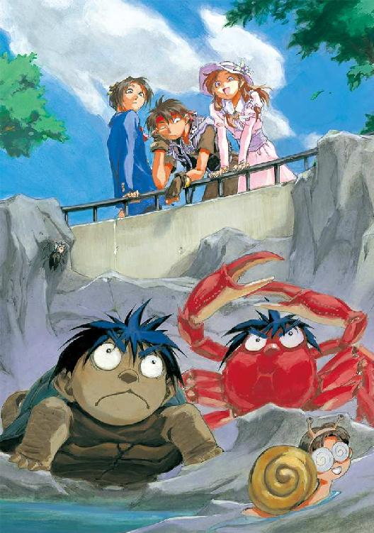
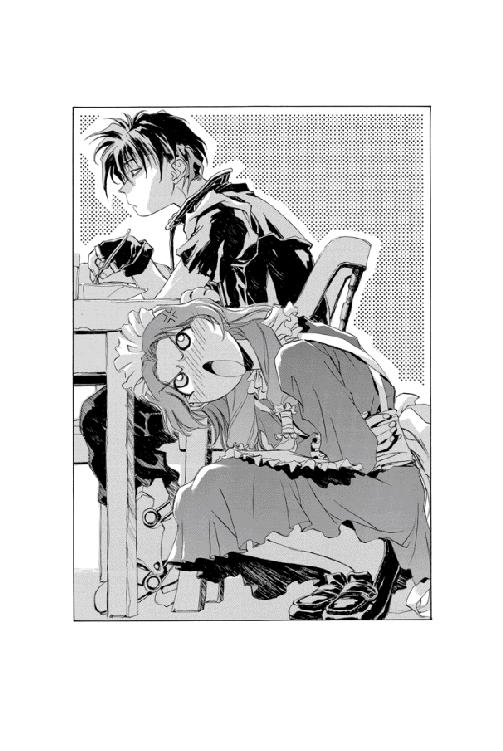

| 魔術士オーフェンしゃべる無謀編2 | |
| 秋田禎信 | |
| (2012) | |
「どうして会う人みんな、親のことでぼくに冷たくするんだろう」血統良し、成績良し、のエリート魔術士であるマヨール・マクレディにも悩みはあった。執拗な"いじめ"を受けているのだ。それも、《牙の塔》の教師であるイザベラ、ティフィス、そして戦術騎士団長エド・サンクタム......両親と同世代の錚々たる権力者たちから。しかも、その理由は彼の両親にあるのだという。マヨールは決心した。今日こそは両親を問い詰めてやるのだ。彼らが学生時代、何をしてくれちゃっていたのかを。

CONTENTS
イラスト：草河遊也 Yuuya Kusaka
デザイン：ヴェイア Veia
ふう──とその女は、ため息をついた。
薄い唇から、こぼれおちるように息が漏れていく。吐息は彼女の顔にかかっていた栗色の髪を揺らし、そしてティーカップに浮いている小さな花弁を撫でた。
彼女は今......自室にいる。
静かな冬の陽光が射し込む、広い部屋──窓のすぐそばの椅子に腰掛けて、ティーテーブルには白いティーカップを置いている。白いドレス、物憂げな、半ば閉じたような眼差し、ほっそりとした白い腕──
それが彼女だった。
年の頃、十八、九というところか──彼女はゆっくりとした動作で、ティーカップの横に置いてあるベルを鳴らした。リリン......と静かに、金色の鐘が声をあげる。
間をおかず、部屋のドアが開いた。すぐ外に待機していたらしい、執事らしい格好をした男が一礼する。銀髪をオールバックにした、二十歳ほどの男である。体格はいいが、物腰が穏やかなせいか、あまり目立たない。
部屋には入らずに、男は口を開けた。
「ご用でしょうか」
「ええ」
彼女は男のほうは見ずに、細い声で答えた。
「報告、読みましたよ、キース」
「は......」
キースと呼ばれたその男は、言葉少なにうなずいた。同じくうなずくような動作をして、彼女は続ける。
「なんでも、邪魔者がいるとか......」
「............」
キースは答えない。彼女は顔を上げると、初めて彼のほうに視線を向けた。
「無視できませんわね」
「は......」
「必要なものは？ キース」
彼女の問いに、キースは落ち着いて──だが迅速に答えた。
「現金......を少々」
「？」
一瞬、彼女は怪訝な顔をしたが、
「......分かりました。好きになさいな。手段は問いません......」
ティーカップに触れた指先に、かすかに力を込め、つぶやく。
「なんとしてもあの女を抹殺するのです！」
「......なに組み立ててんの？ オーフェン」
と呼びかけられてオーフェンは、ふっと振り向いた。どことなく皮肉げな眼差しの──ありていに言えば目付きの悪い、二十歳ほどの男である。全身黒一色の格好で、胸元には力ある黒魔術士の証し、ドラゴンの紋章を下げている。
聞いてきたのは、黒髪の、スーツ姿の女だった。いつもの宿屋の食堂で、椅子に座って木枠のようなものに取り付いているこちらの手元を、のぞき込むようにしている。彼女の顔を見つめ返して、オーフェンは答えた。
「道具」
まだ早朝──宿屋の食堂はまだ準備もしておらず、彼ら以外は無人である。彼女は聞き返してきた。
「......道具？」
「そ」
と、作業にもどる──木枠は高さ一メートルほどの大きさで、立方体に組まれている。枠の内部にバネや金属製の軸など組み込まれていて、なにやら物々しいようでもあり、小学生の工作のようにも見える。
どうやら彼女の目には後者に映ったらしい。
「なにに使うのよ、そんなもん」
「そんなもん......てコギー、お前、これがなんだか分かってんのか？」
オーフェンは手を休めて、彼女──コギーと呼んだが──を見上げた。コギーは、ふんと胸を張り、
「馬鹿にしないでよ。見れば分かるわ」
「ほう」
「木製車輪なし自転車でしょ」
「本気でなにに使うんだ、ンなもの......」
オーフェンはうめいて足元の『木製車輪なし自転車（仮定）』を取り上げた。空いた左手でバンダナをごしごしとこすりつつ、コギーの手の中に、ぽんと木枠をほうる。
彼女は、服にボンドがついたりしなかったか少し気にしたようだった。
「......なにこれ。けっこう重いのね」
「軽いと威力がないからな」
「......え？」
「いや、こっちのこと。ちっとその姿勢で支えててくれ」
オーフェンは言いつつ、のぞき込むように木枠の下に回り込むと、大型のネジでバネを止めた。ちょうど木枠の中空になっているところをのぞくようにして、上からコギー──本名コンスタンスが言ってくる。
「威力って、これ武器なの？」
「まぁな」
「............」
途端、コンスタンスが冷たい目を見せた。
「また、なんか人様の迷惑になりそうなコト考えてるわけ？」
「『また』ってお前......まあいいか、とにかくこいつは、武器っても殺傷能力があるわけじゃねえし......どうってことないもんだよ」
「......いまいち信じらんないわ」
「なら見てみるか？ 一応これで完成だし」
オーフェンは言いながら、コンスタンスの手の中から木枠を受け取った。わきについているハンドルのようなものをぎりぎりと回すと、枠の中で、軸に取り付けられたバネが巻き上げられるようになっている。
きゅ、と限界までバネを巻き上げると、オーフェンはポケットからひと握りにできるくらいの大きさの鉄球を取り出し、バネに引っ張られる形で木枠の中に引っ込んでいる軸に装填した。
「ずいぶんと物々しいわね」
というコンスタンスの感想に、うなずいて答える。
「とりあえずエドゲイン君一号と名付けた」
「まあ、いいけど......え？ なにこれ」
コンスタンスが、声をあげる。オーフェンが、彼女にレンガを渡したのだ。
「そいつをな、ちょっとこう......そう。そんな感じで持っててくれよ」
レンガをつまむような形でコンスタンスに持たせ、オーフェンは椅子を立った。そのまま、数歩後ろに退がる。
そして、抱え込むように木枠──エドゲイン君一号を構えると、
「動くなよ......エドゲイン君、ファイヤ！」
引き金を引く。
刹那──
ばちんっ！ と巻き上げられたバネが弾け、抱えているこちらの手を弾き飛ばすような反動とともに鉄球が射出される！
がごぎっ──
一瞬後、コンスタンスが転倒したのだけ、オーフェンには見えた。
てん、てん、てん......と鉄球が床を転がる。
「あれ......？」
オーフェンはきょとんと、エドゲイン君をのぞき込んだ。
「思いのほか威力があったよーな......」
「思いのほか──って──」
がたん──と、手近なテーブルにつかまって、激怒した様子で、コンスタンスが立ち上がる......
彼女は足元に砕けたレンガをたたきつけた。
「冗談じゃないわよ！ なんでレンガが砕けんのよ！ 立派な殺傷兵器じゃない！」
さすがにオーフェンもテーブルにエドゲイン君を置いて、言い訳するような声を出した。
「ま、まあ、ンなに怒るなって......ケガもなかったよーだし......」
「ケガはなかったけど、転んだときにヒールがとれちゃったわよ！ それよりなにより、今のちょっとでも狙いを外してたら、しゃれになんないじゃない！ たまに道具を使う動物並みのことをしてるかと思えば、どー転んでもガサツなんだから！ あんたなんていつもどおり肉弾オンリーで十分なのよ！」
「てめえ、人が下手に出てれば！」
ばん！ とテーブルをたたいて、オーフェンは叫び返した。
「俺のよーな知的でストイックな人間は、どちらかとゆーと自分で直接手を下したりはしねえんだっ！」
「それでそんな、失敗作の殺戮兵器を作ってりゃ世話ないわよ！」
「ちょっと待て！ 今のは聞き捨てならねえぞ！ 俺は別に、エドゲイン君を失敗作だとは思ってないからな！」
「当初のテーマとは違うものができあがれば、それを失敗作って言うのよ！ なんなのよ！ 思いのほか威力があったよーな、てのは！」
「大威力は小威力を兼ねる、と言うだろーがっ！」
「言わないわよ、ンなもの！」
「............」
きっぱりと言われて、オーフェンは少し黙り込んだ。にらみ合ったまま、しばし考えて、
「......大規模破壊は小規模破壊を兼ねる、だったっけか」
「そーゆう問題じゃなくて......」
と──
表に『準備中』の札がかかっているはずの扉が、軽い音を立てて開いた。入り口から、ひょいと顔をのぞかせたのは、ぼさぼさの黒髪──
身長百三十センチほどの『地人』である。毛皮のマントをまとって、分厚い眼鏡をかけている。
宿の中にとことこと入ってきたそれを見て、オーフェンは素早くファイティングポーズをとった。あたりを警戒しながら、
「ドーチンか......てことは、ごくつぶしの兄貴もいっしょだな？」
しゅっしゅっとジャブを放ちながら続ける。
「てめえらのほうから、のこのこと現れるとはいい度胸だ──借金を返すアテがあればよし、なければたった今完成した究極兵器エドゲイン君一号の洗礼が待ってるぜ」
「失敗作のくせに......」
背後からのコンスタンスのつぶやきは、この際無視する。
なんにしろ、ドーチンはあまり意に介さない様子で、真っすぐこちらへと近づいてきた。
「兄さんは、今日はいないんですけど......」
と、切り出してくる。
「でもまあ、そのことで相談があって──って、あれ？」
と、きょとんとした顔を見せる。
「どしたんですか？ 呆然としちゃって」
「どーしたもこーしたも......」
オーフェンは、ファイティングポーズも崩し、うろたえるように両手をわななかせると、うめいた。
「お前が......ボルカン抜きで単独行動をしているなんて、ンな馬鹿な！」
「そーよ！」
コンスタンスも、勢い込むようにして叫ぶ。
「なんてゆーか、だいたいワンセットのものなんだなー、て思ってたのに！」
「てゆーか、ひとつのものだと思ってたぞ俺は！ くそ、裏切りやがって！」
「............」
ドーチンが、顔をさあっと青ざめさせる。
「いや別にぼくは......」
ごにょごにょと言い出したのには構わず、オーフェンは続けた。
「馬だって、首だけで空飛んできたら怖いだろーが！ ひとつのものが分かれて行動したりしちゃいけないんだぞ！ まるで一人前の人間みたいなことをしやがって！」
「そーよそーよ！ 会う手間が二倍に増えて面倒じゃない！」
「......帰って人生をよく考えてみます......」
くるりと後ろを向いたドーチンに、オーフェンはうんうんとうなずいた。
「それが良かろ」
「それじゃ、お金の話はまた次の機会にってことで──」
「待てぇいっ！」
オーフェンは、さっとドーチンの前に回り込んだ。
「そんなことでどうする、ドーチン！ お前は独立独歩の人間だろう⁉ 自由意志は誰にでもある！ 誰にでも使えるんだ！ あんな性悪警官に十把一からげ扱いされたからって、卑屈になるんじゃない！」
「あー！ ひどーい！ わたしだけ悪者にして！」
「いや別にいいんですけど......そーゆう人たちだってことは知ってたつもりですし......」
なぜか人生に疲れたような顔を見せるドーチンに、オーフェンは臆することもなく真摯な目を見せた。
「まあ、そう言うなって。いけずだぞ」
「............」
ドーチンの口から、ため息が漏れる。
「兄さんが、ヘンなんですよ」
「いつもヘンだぞ」
「きっとこれからもヘンよね」
きっぱりと即答されて、さすがにドーチンは後退りしたが、それでもめげずに続けた。
「いや、だから......兄さんが、なんか金持ちになってるんです」
空を、風が通り抜けていくのは、見えるものなのだろうか。きっと、見えるのだろう......
空を見上げるカフェテラス。軽食ののったテーブルに軽く肘などついて、思う。
空が、自分の心を映して色を変えることがある。そんなときは、きっと風が空の色を塗り替えているのだ。
「俺も感傷的になったな......故郷にでも立ち寄ってみるか......」
遠い目をしながら、ボルカンは冷えたブラックコーヒーを喉の奥に流し込んだ。
刹那──
「感傷に浸れる身分かぁぁぁっ！」
うなる鉄球が、ボルカンのいるテーブルを粉々に吹き飛ばす。
「どおおおっ⁉」
椅子から転げ落ちて、腰に剣を差した地人──ボルカンが悲鳴をあげた。
「聞いた話じゃあ、えらく羽振りがいいようじゃねえか......ええ？」
次弾を装填しながら、オーフェンは進んだ。なんとなく、凶悪な形をしたサングラスなどかけている。エドゲイン君を肩にかついで、地面に座っているボルカンの間近まで近寄っていった。
ちらと、砕けたテーブルの下に散らばった昼食の残骸を見てから、
「おうおう......しばらく見ないうちに随分とまあ、豪勢なもんを口にしてるなぁ」
「......一番安い軽食じゃない......」
後ろから、コンスタンスが呆れた声でぼやく。オーフェンは、くるりと向き直ると、
「てめえ！ 俺なんざ、ここんところ塩と砂糖しか食ってねえんだぞ！」
「そーゆうのは、食べるじゃなくてなめるって言います......」
コギーに手をひかれているドーチンがつぶやいてくる。オーフェンは無視して、再びボルカンへと向き直った。サングラスをむしり取って、まだアスファルトに座り込んだままのボルカンに指を突き付ける。
「と・に・か・くっ！ なにやら知らねえうちに、物持ちさまになったらしいじゃねえか⁉ 待ちに待った貸付金に利子、返せねえとは言わせねえぞ！」
が──
「......くっくっくっ......」
ボルカンは、不敵に笑い出した。いきなり、がばと立ち上がると、それまで黙っていた鬱憤を爆発させるように叫び出す。
「つくづく哀れな男だな、この金貸し魔術士が！」
「な──なにい⁉」
「まだ自分が罠に落ちたことも気づかんのか、この両生類並みの鈍感野郎め！」
ボルカンは、ばっと毛皮のマントをひるがえし、いつの間にかテーブルの下から発掘していたらしい軽食の残りのサンドイッチを掲げてみせた。
「貴様は今日！ このマスマテュリアの闘犬、不屈の闘士ボルカノ・ボルカン様に、直々に凸レンズでのぞき殺されるわけだ！」
「ンだとコラ、タヌキ臭え息でべらべらしゃべりやがって！」
しなびたツナのサンドイッチで泰然と顔を扇いでいるボルカンに、さらに詰め寄る。
「てめえがしゃべるだけ、時間と酸素とボキャブラリーの無駄遣いだ！ どーせ結末は同じなんだから、今度からは最初から自分で黒焦げになって現れてみろってんだ！」
「ふっ──今までの茶番で、自分がこの俺様に勝っていたと思い込んでいたらしいな、お前は──」
「なんだとてめえ！」
が、凄んでみても、ボルカンは、あくまで余裕ありげに続けてきた。
「まだ分からんのか......このマスマテュリアの闘犬が、貴様をはるかに凌駕する究極の力を手中にしたということが......」
ばっ──と、サンドイッチを横に振り、
「金に汚い貴様のことだ！ その力によって手に入れた莫大な財を、この俺が散財しているという情報を耳にすれば、なんの準備もなく現れるものと踏んでいたのだ！ 案の定、貴様はもう罠の中だ......」
「わけの分かんねえことを！」
叫びながらオーフェンは、エドゲイン君を構えた。
「つまらねえごたくを聞かせやがって！ てめえの素通り頭で思いついた、その罠とやらがどんなもんだろーと、この究極の問答無用調停装置〝エドゲイン君一号〟の威力の前にカスカスだってんだ！」
「問答無用調停装置......？」
また背後で、コンスタンスの怪訝そうな声。
答えたのはドーチンだった。
「つまり......『とにかく力づくでケリをつけてしまうから覚悟しな兵器』ってことじゃないですか？」
「そーゆう言い方をするな！」
オーフェンは、ドーチンへと向き直った。自然、エドゲイン君の銃口もそちらを向く。
「そー言われましても......」
「うるさいっ！ だいたいてめえ、今の話だと、福ダヌキの手先みてえじゃねえか。こんなとこまで連れ出しやがって」
「いや、ぼくは別になにも知らないんですよ。あんまり兄さんが日頃なにをたくらんでいるかなんて、いちいち気にしててもくだらないだけですし」
「そこまで言う......」
と、これはコンスタンス。ドーチンは、少し気にするように話題を変えた。
「で......あの、その物騒なもの、こっちに向けないでくださいよ」
と、なにやら不安げにエドゲイン君を指さしてくる。オーフェンは、はっはっと笑い、
「なにが物騒なんだよ。これは俺が作った、対ボルカン用愛の鞭だ」
「さっきテーブルを粉々に打ち砕いてましたけど......」
「はっはっはっはっ」
オーフェンはとりあえず、あさっての方向に笑い声をあげた。
「だいじょーぶ。結果はともあれ、安全第一に設計してあるんだからな」
「できれば結果は考慮してほしいですが......でも安全第一って、具体的になんです？」
「作るとき、接着剤のシンナー吸って気分悪くならないように窓を開けておいたし、カッターの刃を向けるほうには絶対に指を置かなかった。それに、設計図を束ねるのにも安全ピンを使ったかな」
「......ひょっとして自分のことしか考えてないんじゃありません......？」
「ここんところに、『平和の祈りを込めて♥』ってサインも入れといたぞ」
「まあ、そのノリは分からないでもないですけど......あ！」
と、ドーチンは声をあげた。
「兄さんが！」
「なにっ」
と振り返る。ボルカンはいつの間にか、別のテーブルの上に仁王立ちして剣を抜いていた。そのまま、大声で叫ぶ。
「出でよ！ 我がしもべとなりし、究極闘士一号！」
「なんだと！」
オーフェンは、あわててあたりを見回した。助っ人が本当にいるのならば、ひょっとしたらひょっとして、ということはあり得る。
ボルカンがテーブルの上で哄笑を始める。
「わぁーっはっはぁっ！ 今まで勝ったつもりで、ひとりダンスを踊ってきた哀れな借金取りめが！ 今日を無念と、きゅうすから直接飲み殺されるがいい！」
「くっ......！」
オーフェンはうめき声をあげながら、油断なく構えをとった──そのまま、じっと待ち構える──じっと......
構えたまま、十五分が過ぎた。
「............」
オーフェンは額に一筋の汗を流し、硬直していた。にらみ合っているボルカンも、時間とともに余裕がなくなってきたのか、少しずつ目をそらしている。
ふと見ると、コンスタンスとドーチンは少し離れたテーブルで、コーヒーなど注文して傍観していた。
すたすたと、ボルカンのほうに、店のウエイトレスがひとり、近寄っていく。
「お客さま、そのようにテーブルの上に乗られますと、ほかのお客さまのご迷惑になるんですが......」
「......そーですか......」
のそのそとボルカンがテーブルから下りると、ウエイトレスはこれ以上かかわりたくなかったのか、さっさと店の中に入っていった。ボルカンはそのまま、そのテーブルの椅子に腰を下ろし、空を見上げるしぐさをする。
「人の醜さというものか......はたまた世間が無情なだけなのか......」
「............？」
突然独り言を始めたボルカンを見ながら、オーフェンは眉根を寄せた。ボルカンは、ふうとため息をつき、
「果たして裏切りの報酬はいくらなのだろう......」
「早い話が、ちーとも助っ人が来んということかぁぁっ！」
オーフェンは叫びながら、エドゲイン君の引き金を引いた。再び、ボルカンを巻き込んでテーブルが爆砕する。
「おおおおおおっ⁉」
吹き飛ぶボルカンをにらみ据え、オーフェンはまたエドゲイン君に次弾を装填した。地面に転げ、こちらに手を上げながら、ボルカンが言ってくる。
「ち──ちょっと待て、魔術士！ きっと、きっと奴は来るから、もーちっと待ってくれい！」
「誰が待つか、ぼけぇっ！」
次の瞬間には、鉄球がボルカンの顔面にめり込んでいる。
「終わった......なにもかも......」
ぽて、と血まみれで地面に倒れたボルカンを前に、オーフェンは感慨深くつぶやいた。後ろから、ひそひそとコンスタンスらのつぶやきが聞こえてくるが──
「死んだわよね、あれ。きっと......」
「でも死なないんですよね、きっと......」
とりあえず無視することにする。
オーフェンはつかつかと、倒れたボルカンに近寄った。毛皮のマントの襟首を捕まえて、白目を剝いている地人の頭をぶんぶんと振りまわす。
「さあ！ ここの払いをすませるための金を持ってるはずだ！ きりきり出せ、おら！」
「きゃー！ 強盗ーっ！」
いきなり目を覚まし、悲鳴をあげるボルカン。それを押さえ付けながら、オーフェンは、ふと、殺気を感じた──
「────⁉」
「いけませんねえ」
穏やかなその一言に、とてつもない危険を感じて、オーフェンは自分の頭上にボルカンの身体を掲げた。たいていの危険なら、これで防げるはずだ──
ごすっ......
地人の身体ごしに伝わってきた手応えは、なんというか、ひどく重かった。
「............？」
顔をしかめて、恐る恐るのぞいてみる──と、ボルカンの頭にめり込んでいるのは、刃毀れしてゴツゴツの、分厚い斧の刃だった。
「おおおおおおっ⁉」
オーフェンは悲鳴をあげながら、さすがにあっさり卒倒している様子のボルカンを適当にそこらに放り捨てた。
いつの間にか、すぐそばに、巨大な斧を持った男が立っている。
「な──なんだてめえは！ いきなりっ！」
だが男は、オーフェンの叫びなど聞きもしない様子で、
「いけませんよ」
巨大な斧を片手で、まるで花束みたいに扱いながら、続けてくる。
「わたしがせっかく新しい友人を作ったとゆーのに、強盗したあげくに殺害するなんて」
男は、真顔だった──端正な顔付きに小じわすら寄せない真剣な面持ちである。乱れのない銀髪をオールバックにして、身なりは質素だが上等なタキシード。年齢はオーフェン自身と同じくらいだろうが、物腰のせいか、かなり年上に見える。
「てめえ、ふざけんな！」
オーフェンは、がばと向き直って、突然現れた男の胸倉をつかみ上げた。
「いきなり斧で殴りかかってくるたぁ、どーゆう了見なんだよ！ ケガでもしたらどーするつもりだ！」
「あのー......」
遠くから、ドーチンがつぶやいてくる。コンスタンスといっしょに、血まみれのボルカンを介抱している。
「兄さん、動脈から血が出てるみたいなんですけど──」
「幸い、ケガはなかったが！」
オーフェンはきっぱりと、男のほうに詰め寄った。
「心に負った恐怖はぬぐいがたい！ 慰謝料とゆーものを知ってっか！」
「もちろん、知っていますよ」
男は、眉ひとつ動かさずうなずいた。その手が、ほんの少しだけ動くのを、オーフェンは見逃していなかった──
ばしっ！
死角からいきなり振り下ろされた斧を、オーフェンがエドゲイン君で受け止めた状態で、両者ともしばし硬直する......
男は、あくまで無表情に、さりげなく斧に力など込めながら、顔を近づけてきた。
「いけないんだ。強盗殺人なんてして」
「おのれは〜......」
オーフェンは、さっと斧の刃の下から身体をすりぬけさせて、いったん後ろに退いた。
びし、と男を指さす。
「ごまかそーとしても無駄だぞ！ 今話し合うべきは慰謝料のことであって、既に死んだ福ダヌキのことじゃねえ！」
「そうかもしれません......」
男は、つと目を閉じて、考え込むように顔を伏せた。
「ああ。こうしてまぶたを閉じれば、故人との友情の日々が走馬灯のように浮かんでは消えます......」
「......死んでないんですが......」
と、ドーチン。が、無論、男は無視した。
そっと、細い指先でまぶたを押さえている。
「悲しむべきではないのかもしれません。人が死ぬことを悲しむのは、愚かなことだと言います。しかし──互いになぐさめあうくらいの甘さは、残された人間たちにも許されるのではないでしょうか......」
ごとん、と斧を捨て、男はすたすたと近寄ってきた。
「ああ、名も知らぬ黒ずくめの人、故人の思い出を共有する者どうし、争うのはやめましょう──」
と、握手するように右手を差し出してくる。が──オーフェンはあっさりと、その手首をつかんだ。
男の右手の中に、ちらりと、ナイフの刃が光る。
涙の跡など微塵もない顔を上げて、ごまかすように、男がつぶやいた。やはり真顔で。
「いけないんだ。強盗殺人なんかして」
「あのなぁ......」
「ああもう！ いいかげんにしなさいよ！」
と、背後でいきなり声があがる──目の前の男が危なっかしくて振り返れないが、コンスタンスがこちらにつかつかと歩いてきているらしい。ヒールが折れているので、不安定な歩き方だが。
彼女は、割り込むようにオーフェンと男の間に腕を差し込むと、
「オーフェン！ あの地人、本気で死にそうよ！ それに、そっちのあなたも！ いきなり斧で殴りつけてくるなんて、いくらこの人相手でも許されることじゃないわ！」
「どーゆう意味だ......」
オーフェンは半眼でつぶやいたが、コンスタンスに無視された。
彼女は、ぐいと男の腕をつかむと、
「わたしは派遣警察官のコンスタンス・マギーよ。場合によっては逮捕──え？」
コンスタンスが急に、色を失ったように息をのむ──
「あなた──キース⁉」
「ピンポーン」
男──コンスタンスはキースと呼んだが、とにかく彼は、やはり真顔でそう言うと、さっと彼女の手を振り払った。
「ふっ──正体がばれてしまっては、仕方ありませんね......」
と、手の中のナイフを適当に背後に捨てる。同時に、ボルカンが蘇生したようだった。
「あー！ 助っ人！ 今さら現れたか！」
無視して、キースとやらは続ける。
「できれば、いきなり現れた地人の助っ人として貴方を始末したかったのですが......」
「遅刻したくせに」
ドーチンのつぶやきも、まるっきり気にした様子はない。キースは、さっと優雅に腕を振った。
「そう──わたしは《岬の楼閣》のキース・ロイヤル！」
「《岬の楼閣》......？」
オーフェンは、怪訝につぶやいた。聞いたこともない。
ちらと見ると、コンスタンスが神妙な面持ちで、答えた。
「執事養成学校の名門よ」
「しつじ......え？」
さらに眉根を寄せてオーフェンは聞き返したが、コンスタンスは、それ以上答えるつもりはないらしかった。スーツのポケットから、いつものダーツを取り出して構えている。
彼女は、ダーツの先をキースに向けると、
「あなたが現れたってことは──あの女の差し金ね⁉」
「当然でしょう。主人のために働くのが執事の務めです──」
「なら、とっとと帰ってあの子に伝えなさい！ わたしは絶対に負けたりしないって！」
「その前に、主人から伝言がありまして──わたしは絶対にあきらめたりしない、とのことです」
「えーと......」
彼女の後ろから、オーフェンはどことなく気弱に手など出してみるが、それはあっさりと彼女の肩にはじき返された。
コンスタンスは、気づいた素振りすら見せず、続ける。
「言っとくけど、例のことはわたしのほうが先約なんですからね！ あとからのこのこやってきて、わたしの上前かっさらおうなんて──」
「ああいったことに順番を決めるのは不毛だ、との伝言も賜っておりますが──」
「あのー......」
「なにが不毛だって言うのよ！ そもそもあいつが──」
「なあ、コギー──」
「ですから、それは主人と直接会っていただかないと──」
「なんでわたしから出向かなくちゃなんないのよ！ 菓子折り持ってそっちから出てくるのが筋でしょう！」
「やかましいいいいっ！」
オーフェンは叫びざま、背後からコンスタンスに回し蹴りを見舞った。
「ひあああっ！」
悲鳴をあげながら、コンスタンスが転倒する。オーフェンは、装填したエドゲイン君を突き付けながら、彼女をにらみやった。
「悪いが、さっぱり話が見えねえんだけど」
「そんだけのことで蹴らないでよ！」
頭を抱えながら、コンスタンスが怒鳴り返してくる。
「ふっ──」
軽く息をついて、キースがつぶやいた。
「なかなかに頼もしい味方を手に入れたようですな。情報どおりです」
意味もなくカフスボタンなど軽く嚙みながら、彼は後ろに退がりはじめた。
「ですが、忘れないでくださいよ、コンスタンス様──我が主、ボニー様は決してあきらめない方です。そして主人があきらめないかぎり、わたしもまた、あきらめません」
わははははは！ と哄笑をあげながら、彼は、ぱっと背中を見せて走りだした。
「あきらめない者が勝つのですよ！ それが勝負というもの！ わたしは去るのではない！ また現れるのです！ それではその日まで、ご健勝お祈りいたします──！」
「............」
その場に取り残されて、つい呆然となってしまう──と、ぽつりと、ドーチンのつぶやきが聞こえてきた。
「......逃げた......」
はっと気づいて、オーフェンは叫んだ。
「逃がすかああああっ！」
同時に、構えたエドゲイン君の引き金を引く──
多少遠くまで走っていったからといって、轟音とともに飛びゆく鉄球を避けるすべなど、キースにはないはずだった。が──
ぴた、と立ち止まると、キースは両手を掲げ、大音声をあげた。
「バリアー！」
次の瞬間、タキシード姿の執事の眼前にきらめく光の壁が現れて、鉄球をあっさりとはじき返す──
「ンな──！」
オーフェンは、仰天して思わずエドゲイン君を取り落とした。
「魔術──だと⁉」
「はぁーっはっはぁっ！」
キースは、さらに大声で笑い声を響かせた。
「主のためなら、魔術くらい使えんでか！」
「ンな馬鹿なことがあるかぁぁっ！」
オーフェンは絶叫した。が──
「ふっ──」
と、キースが優雅に笑みを見せる。
「主のためとあらば、不可能を可能とするのが真の執事というもの！ 真の執事を養成するのが我が《岬の楼閣》！ 時代遅れの《牙の塔》など最初から相手にならないのですよ、魔術士！」
ひとしきり勝ち誇ってから、また逃げていく......
「なんで執事養成学校で教育された魔術士なんぞに勝ち誇られにゃならんのだ......」
ぶつぶつ言いながら、オーフェンはキースを見送った。敵はもう、素早い逃げ足で別の通りへと逃げ込んでいる。
「なんだったんだ......あいつは......」
彼のつぶやきに、いつの間にかとなりに並んで立っていたボルカンが答えた。
「とりあえず──」
ぐっ、と拳をにぎって断言する。
「謎の執事の脅威は去ったようだな」
「てめえは奴とグルなんだろーがぁっ！」
オーフェンが叫びとともに放った光熱波は鬱憤を晴らすように、えらく遠くまでボルカンを吹き飛ばした──
「......では、失敗したのですね？」
彼女の言葉は、冷ややかだった──が、キースは知っていた。彼女は厳しい主人だが、無能な主人ではない。
理由のある失敗に関しては、責めはしない。だから、キースは報告した。彼女の部屋の入り口から、決して中には入らずに。
「わたしの計画は、九分九厘成功でした」
きっぱりと真顔で、続ける。
「ですが、情報にあった、例の黒魔術士──あれは尋常な相手ではありません。あと一歩というところまでは追い詰めたのですが、予想外の抵抗に、取り逃がしてしまいました」
「そうですか」
彼女はうなずくと、ぱたんとひざの上の本を閉じた。
「あなたの報告です。噓はないでしょう」
「はい」
彼女は、少し気にかけるように、首を斜めにした。
「まさか......あきらめては、いないでしょうね？」
「あなた様が、やめろとおっしゃるか──」
キースは一礼した。
「あるいは、わたしに死ねと申されるまでは。わたしは、永遠にあなたに仕えましょう」
「よろしい」
彼女は、またうなずいた──そして、ほんのわずか、微笑みも見せたように思えた。それだけが、彼の報酬だった。
「退出なさい」
彼女の命令に、彼は従った。扉を閉じて、顔を上げる。ボニー──我が主人、ボニー。
彼は、いつもはまずやらないし、そもそも今までしたこともなかったことだが、しばらく扉の前に立ったまま、耳をすました。しばらく経ってから、部屋の中から、彼女の声が聞こえてくる──
「コンスタンス──」
彼女が、怒りを込めて、声を震わせる。
「わたしがあきらめると思って⁉」
それを聞いてから──
キースは、廊下を歩きはじめた。
（お前はいったいなんなんだ⁉：おわり）
「ＹＯＨＯ！ 始めまして──会ったこともナイ、黒ずくめの人ヨ！」
と、いきなり背後から声をかけられて、オーフェンは半眼で振り向いた。黒髪に黒目、二十歳ほどの、やぶにらみの男。確かに言われたとおりに黒ずくめである。
「............」
彼は疲れたように、背後から声をかけてきた男にせいいっぱいの嫌悪の視線を送った。
が、声をかけてきた男は、まったく臆しもせずに続けてくる。
「ワーオ！ すーばらしい革ジャンですネ！ ワタシ黒い上着をこよなく愛する銀行員デスが、チョトその服、触ってもイイですカ？」
三角帽子に鼻つき眼鏡、白いつけ髭に、赤と黄色をストライプにしたタキシード。上着の下はラメのシャツ。しまいには、つま先が反り返った白いブーツ......
相手の頭の上から足元までをざっと眺めて、とりあえず感じたのは、めまいだった。
が──さりげなくこちらの肩を触ろうとした相手の右手を捕まえることは忘れなかった。
「............」
じっと、半眼のままにらみ据える──相手の手には、口の開いた小瓶があった。青いラベルにはポップ調の筆跡で、こう書かれている──『強塩酸』
白昼の大通りである。ふたりがふたりとも目立つ格好をしている上、それが腕をつかんで対峙しているのだから、どうしようもなく人の目を引いた。
「なんのつもりだ......キース......？」
ごくさりげなく力を込めてきている相手の腕をなんとか押さえながら、オーフェンはつぶやいた。相手──キースは、つけ髭の下で、ふっと笑うと、
「さすがデスね、黒魔術士......一筋縄ではいかナイ相手のようデースよ」
「......その口調やめろ」
が、キースはまったく聞かずに──ただし口調は変えたが──、
「ふっ──」
と笑って、手を引っ込めた。
意味もなく、キザったらしいポーズなど決めながら後退する。もっとも言うまでもないが、格好が格好なのでろくなものではない。
「甘くみていましたよ。どうやら、正攻法では倒せない相手のようですね」
「今のどこが正攻法だっ⁉」
オーフェンが叫ぶのにも、動じた様子はない。キースはさらに一歩後ろに退いた。
「ですが、もう既にわたしの攻撃は始まっているのですよ、黒魔術士！ 朝から数回、ことごとく意表をついたわたしの変装を、あなたは一度として見破れなかった！」
「ンなわけがあるかっ！」
周囲の目を気にしながらオーフェンは叫ぶが、キースはまったく聞いていない。
「そして次にこそ、わたしは決定的な手段に出ます！ 今まで以上の焦燥と恐怖！ 疑心暗鬼に悩まされるがいいでしょう！」
「ったく......こいつを野放しにして、コギーはなにやってんだ......」
オーフェンは頭を抱えてうめきながら、うんざりとため息をついた──
「──と、ゆーわけだ」
いつもの宿屋の食堂にて──
オーフェンはそう締めくくった。
テーブルの向かいにいるスーツ姿の女──コンスタンスが、へえと薄情な声を出す。
「それは災難だったわねえ」
「もとはてめえの災難なんだろうが！」
ばんっ！──とテーブルを両手でたたき、オーフェンは立ち上がった。そのまま凄絶な眼差しでにらみつけるが、コンスタンスはさして動じた様子もなく、目の前のパスタをフォークでかきまぜる。
「でもほら、キースの奴、どうもあなたをわたしのボディーガードだとか、そーゆうのと勘違いしてるみたいだから、きっと最初にあなたを始末したがると思うわよ」
「つまり俺が神経症になってぶっ倒れたりするまでは、てめえは安泰ってか、コギー」
皮肉まじりに、うめく。
「今朝だけで八回だぞ──あの野郎、熊の着ぐるみだの、ポストの格好だの、果ては目んところに黒い帯をつけただけなんてのもあったっけかな──あの変装だか扮装だかのおかげで、街の連中、俺のことまで奴の仲間だと思ってるらしいんだぞ！」
「このホウレン草のパスタ、おいしいわー。今度作って食べさせてあげよっか？」
「話を聞けぇぇぇぇっ！」
思わず拳で、テーブルを打ち付ける。
さすがにコンスタンスも、びっくりしたようにこちらを凝視した。
「なにを怒ってんのよ」
「なにって、お前──」
うめいてから、オーフェンは咳払いした。
「そもそもだ、あのキースって野郎はなんなんだよ。お前の知り合いなんだろ？」
静かに聞くと、コンスタンスは居心地悪そうに椅子に座り直して答えてきた。
「キースはボニーの執事よ」
「ボニー？」
聞き返す。と、コンスタンスは、さも不機嫌そうに口をとがらせた。
「そうよ。ボニー......あいつだけは、わたしの手で息の根をとめてやるわ」
珍しく真剣な面持ちで、断言する。思わず引き込まれそうになりながら、オーフェンは彼女の表情を見つめた。
「因縁......なのか？」
聞くと、彼女はこくんとうなずいた。
「ええ、長年のね。わたしが派遣警察官になったのも、思えばそれが原因よ......」
「............」
コンスタンスは顔をわずかに伏せて、ひとりの思いにひたっているように見えた。その思いを嚙み締めているのか、あるいは思いに嚙み付かれているのか──彼女の表情は、決意にも見えたし、苦悩にも思えた。
と、いきなりその顔を上げて、彼女はあっさりと言った。
「というわけで、キースはあなたがなんとかしてね」
「ちょっと待ていっ！」
オーフェンは見逃さなかった。
「それは、めんどくさい奴は俺に押し付けて、自分だけでおいしいとこはもらっておこうとかいう、そーゆうことじゃねえのか⁉」
「やーねえ、オーフェンたら。人の揚げ足ばかりとって」
皿の上のパスタをかきまぜながら、軽薄な調子でコンスタンスが言う。オーフェンはテーブルの上に乗り出して、彼女に顔を近づけながらうなった。
「て・め・え・は・なぁ〜」
「だって、キースの奴は、わたしも苦手なんだもん──ボニーのためなら、手段も目的も結果も行く末も、なにもかも気にしない奴なんだから」
「なおのこと、そーゆうめんどーな奴を他人に押し付けるんじゃねえ！」
「なにがよっ！ あいつはね、ボニーに命令されたからってだけの理由で、わたしがボーナス二回分積み立ててオーダーメイドしたパーティードレスをパパのパンツといっしょに洗濯するよーな奴なのよっ！ あなた以外の誰に対抗できるっていうのよっ！」
「どーゆう基準で俺だけなんだよっ！」
「陰険さに決まってるでしょ！」
やたらきっぱりと断言して、コンスタンスも椅子を蹴った。立ち上がって、続ける。
「人がせっかく見込んであげてるってのに、なんなのよ！ 熊の着ぐるみくらいで精神的に追い詰められるなんて！ 変態といっしょくたにされて社会的に抹消されるくらい、今さらどうってことないでしょ⁉」
「死体でチョッキ作るのが趣味だとかいう殺人鬼に襲われたほうがマシだっ！」
「なに言ってんのよっ！ 殺されたあげくチョッキにされちゃった人の気持ちも知らないくせに！」
「そうですねえ。確かに先の発言は無神経なのではないかと、わたしも思います」
「────⁉」
いきなり横から割り込んできた声に、仰天して振り返る──と、テーブルのすぐ横に、銀髪をオールバックにした男が立っている。
「キース！」
「いつの間に！」
口々にオーフェンとコンスタンスが叫ぶが、当のキースは取り合わずに続けてきた。
「神経のない人は家族を幸せにできませんよ、黒魔術士。わたしとしては首まで落ち葉に埋まって瞑想するとかいうネイチャーゲームを推奨しますが......」
「やかましいわっ！」
「そうよ！ この人の無神経がそんな簡単なことで矯正できるなら誰も苦労しないわ！」
即座に続けて叫んだ彼女のせりふには、多少釈然としないものを感じはしたが、あえて無視してオーフェンはキースと向き合った。しわひとつないタキシードを着たキースは、これまた乱れのない髪、落ち着いた表情で、悠然とこちらを見つめ返してきている。
オーフェンは指を突き付けると、
「だいたい、話の本題は、ンなことじゃないだろーが！ 結局まだよく事情は分かっとらんのだが、とにかくキース！ 迷惑かけるのは当事者どうしでやり合ってろ！ 俺を巻き込むな！」
「わたしとて、心苦しく思っているのです」
すっ──と握手を求めるように手を差し出しながら、キースが言ってくる。
「と、こうして意見が一致したところで同志になっていただければ、すべて丸く収まるわけで──」
「それじゃますます同類だろーがっ！」
叫びながらオーフェンは、キースの手を横にはたいた。同時に、弾かれた手から、なにかがからんと床に落ちる。かみそり。
「てめえは......」
オーフェンは青い顔をして、キースの胸倉をつかみ上げたが、執事のほうはまったく気にした様子もなかった。涼やかな顔で言う。
「不幸なことに、友好の申し出は無為のものとなったようですね......」
「本気で言ってるのかしら......」
横から、そんなことをコンスタンスがうめくのが聞こえた。
キースは真顔のまま、続ける。
「ですがわたしには奥の手がありますっ！」
と言って彼は、さっと身をひるがえした。そのまま身軽にオーフェンのわきをすりぬけると、近くにいたコンスタンスに飛びつく。
あっという間に──
「きゃあああああああっ⁉」
悲鳴をあげるコンスタンスを、キースは軽々と肩にかつぎ上げた。
「はーっはっはっはっ！」
高らかに笑い声をあげながら、彼は一目散に逃げていく。椅子を蹴散らしながら。
「これでわたしの勝ちです。黒魔術士！ コンスタンス様はいただいていきますよ！」
多分、背後から魔術で狙撃すればなんとでもなったのだろう──ということを思い出したときには──
ばたんっ！ という扉の閉じる音とともにキースは、宿屋から飛び出していった。
「............」
ひとり残されて、オーフェンはぼりぼりと頭をかいた。ふと見下ろすと、彼の足元に、コンスタンスの持ち物に間違いない、ウサギ形のメモ帳が落ちている。
ぱらぱらとページを開き──最後のページに地図とアドレスとが事細かに記されてあった。ご丁寧なことに『あの女の潜伏地』と、タイトルまで書いてある。
オーフェンは軽い頭痛を覚えて、頭を押さえた。うめく。
「まさかとは思うが......俺に救出しに来い、てことじゃねえだろうな......」
「なんで俺がこんなこと......」
ぶつぶつと言いながら、オーフェンは夜空を見上げた──真夜中、黒々と渦巻く暗雲の夜空。月もない。ぽつんぽつんと並ぶ街灯だけが、静かな街を照らしている......
夜空に向かってそびえるのは、緑色の壁の安アパートだった。四階建て。窓は小さくベランダもない。少し出っ張った窓枠には鉢植えのプランターが並べられていた。
怪訝な思いで、オーフェンは独りごちた。
「執事......とか言ってたよな......」
（そーいったものを雇うような人間が住む場所じゃねえような気がするんだが......）
手にしたメモ帳を、ちらりと見下ろす。
「っても、コギーの残した手掛かりだもんな......あとになって、『あ、ごめーん。全部勘違いだったみたい』とかいうことになっても、全っ然意外なことじゃねえんだが......」
メモ帳をポケットに入れて、オーフェンはまたアパートに向き直った。
「にしても......なんで俺がわざわざあんな無能警官のためにこんなところまで......」
「愛・ですね」
いきなり背後から聞こえたせりふに、思わず硬直する。
声は、続けた。
「拉致された女を救うため、怒りに狂える男は危険を顧みず敵地に侵入する......ふたりの再会を阻むのは幾多の罠！ しかし男は立ち止まらない──」
「やかましいわっ！」
オーフェンは振り返りざま回し蹴りを放ったが──
声の主はその蹴りを、すい、とかわした。
「いつの間にわいて出た、キース！」
「人をボウフラのようにおっしゃらないでいただきたい」
ぴっと指を立てて、彼は真顔で続けた。
「わたしのご主人様──ボニー様は、資産運用に関して大変に奥ゆかしいお方でして」
「............？」
意味が分からずに怪訝な表情を返すと、キースはそのまま、
「つまり、倹約のためにご自分のお部屋一部屋しかお借りになられていないため、わたしは夜通し、たいていこのあたりに突っ立っているわけです」
「ただの貧乏なんじゃねえのか......？」
「なんということをっ！」
派手な身振りでキースが驚愕の声をあげる。
「アーバンラマの蒸気王、故フレデリック様がご息女、ボニー・マギー様に向かって、そのような暴言──」
「ちょっと待ったぁっ！」
叫びながらオーフェンは、ぐわし、とキースのあごをわしづかみにした。
執事の目をぎろりとにらみながら、オーフェンは静かに聞いた。
「ボニー・マギー......だと？」
嫌な予感がする──
あっさりと、キースがうなずいた。
「コンスタンス様のお妹君に当たります」
「......じゃあ......コギーの奴が、てめえらのアドレスまで知ってたのは......」
「転居届が無事にとどいたようですな」
「だああああああっ！」
わしづかみにしていたキースの顔を適当に地面にたたきつけ、懐のメモ帳もアスファルトに捨ててから、オーフェンは絶叫した。
「つまり、この間からてめえがしつこくちょっかいかけてきたのは、あいつらの姉妹ゲンカだってゆーのかっ⁉」
「姉妹ゲンカなどではありませんっ！」
ばっ──と、まるでなにごともなかったかのように、キースが立ち上がって答える。
「じ......じゃあ、なんなんだよ......」
少しビビってオーフェンは聞いた。と──
「答える必要はありませんっ！」
声は、頭上から聞こえた。
振り仰ぐと四階の西向きの部屋に人影がある。開いた窓には純白の絹のカーテン。それを押し開けるようにして人影は姿を見せた。
色白でほっそりした、栗色の髪の女──遠目で、しかも夜目なので、それ以上のことは分かりにくいが。優雅なドレスに身を包み、今にも倒壊しそうな安アパートの窓からこちらを見下ろしている。
間違いない。彼女がボニーだろうと、オーフェンは即断した。
彼女が、もう一度口を開く。
「あなたがいけないのですよ、黒魔術士──この女の肩など持つから！」
「知るかっ！」
オーフェンはきっぱりと、叫び返した。
「てめえんとこの執事が問答無用で襲いかかってきたんだろうが！」
「ふふ──」
が、ボニーは笑みを浮かべると......
「そのようなでたらめを......キースの報告書には、そんなことは書いてありませんでしたことよっ！」
「わたしも書いておりませんし」
と、後ろから、キースの声。オーフェンは肩越しにうめき声をあげた。
「てめえ......噓の報告してやがるな」
「まさか、そのようなこと......ただ、書くのを忘れておりまして」
ボニーには聞こえないような小声でキースが答えるのを聞きながら、オーフェンはため息をひとつついた。
そして、つぶやく。
「帰る。姉妹ゲンカなんぞ知ったことか」
「ええっ⁉」
なぜかキースが非難じみた叫びをあげる。
「そんな困りますよ！ せっかくここで、あなたを亡き者にしようとしていたのに！」
「だから帰るんだ！ 身内のケンカなんぞ、当人どうしにやらせとけっ！」
「なんてことをっ！ あなた、それでも人間ですか⁉」
キースは叫びながら、ぐるりとこちらの前に回り込んできた。
「......なにが言いてえんだ？」
半眼で、オーフェンが聞く。キースは真顔で答えてきた
「他人のケンカだからこそ見ていて楽しいんじゃないですか。そんな種族的な楽しみを放棄するなんて、わたしには信じられません」
「いや......それは分からんでもないが......」
頭をかきながら、オーフェンはうめいた。と、また頭上からボニーが声をあげる──
「なにを話しているのですか⁉ キース！」
「はい！ この男が、愛にかけてコンスタンス様を奪回すると宣言したので、それを罵倒したところでございます！」
「ナイスな判断ですわ、キース──」
「どうしてこう......俺の周りには、健全な関係を保った人間が出てこないんだろう......」
うめくオーフェンを無視して、ボニーが窓の横から、なにかをぐいと引っ張り出す。もうひとりの人影。それは──
「コギー！」
オーフェンは叫んだ。ロープでぐるぐる巻きにされたコンスタンスを片手に、ボニーが哄笑まじりの声をあげる。
「この女を助けたくば、この部屋までいらっしゃるがよろしいわ！ 黒魔術士──」
「オーフェン！ 駄目よ！──」
身をよじりながら、コンスタンスも叫んだ。
「罠なのよ！ 死んでしまうわ──駄目！ あなただけでも生き延びて！ お願い──」
オーフェンは、ぽつりとつぶやいた。
「雰囲気に酔ってやがる......あの無能警官」
「......ですなー」
キースが同意する。
「お黙りっ！ 少しお眠りなさいっ！」
と、ボニーがいきなり叫んで、なおわめき続けていたコンスタンスの首筋に手刀を落とした──コンスタンスは、うっとうめきをあげてから──
「なによ！ 痛いわねっ！」
と、ボニーに蹴りを入れた。ボニーは、いったん蹴り倒され姿を消してから、ひょこんと素早く起き上がると、
「なにが痛いのよ！ あなたが素直に気絶しないのが悪いんでしょっ！」
怒鳴りながら、コンスタンスにつかみかかる──
きゃあきゃあと騒ぐふたりを見上げて、オーフェンはキースに聞いた。
「あれが姉妹ゲンカでなくてなんなんだ？」
「ふっ──」
キースは、笑みを浮かべた。たっ、と後ろに飛びのいて間合いを開けて、言ってくる。
「宿命のライバルに多少の馴れ合いはつきものとはいえ、忘れてはおりませんか？ 我々が敵どうしだということを」
「いつから俺らがライバルになった......？」
聞く。が、キースはさも当然とばかりに無視すると、続けた。
「わたしには、あなたに情報を渡すいわれなどないのですよ！ 知りたければ、自ら戦って得ることです！」
「我は放つ光の白刃っ！」
きゅぼうっ──！
オーフェンが放った光熱波は、キースへと向かって一直線に延びた。が、それと同時に、キースも叫んでいる。
「ミスフィード！」
その単語がなにを意味しているのかは知りかねたが、執事が放った魔術の構成は、こちらの魔術を無効化するものと知れた──実際、空中に弾ける光熱波は一瞬にしてほとんど霧散し、小さな風の渦を残して消えうせる──
ふっ、とキースが、勝利の笑みを浮かべる。が、オーフェンは気にもしなかった。
時をおいて、キースのほおから、一筋の血が流れ落ちる。
「............」
目に見えたわけではないだろうが、自分が傷を受けたことを気配で察したのだろう──キースが、傷のあるほうを見下ろした。
単純な力比べで、完全には無効化できなかったのだ──これはそのまま、術者の力量の差を意味する。
「......てめえの魔術は、はっきり言って素人のレベルじゃねえな。そいつは認める──こいつを執事養成学校で修得したってんなら、本気でたいしたもんだよ。水子の浪客とか言ったか」
「《岬の楼閣》、です」
言い直すキースは無視して、オーフェンは指を鳴らしながらキースへと歩み寄った。
「だが、俺も飛び出したとはいえ《牙の塔》の看板を背負ってるんでね──倒してみろ、と言われたら、負けるわけにはいかんね」
「............」
キースはこちらを見つめ返しながら、やはり無表情だったが──
ぽん、と手を打って言ってきた。
「......ボニー様のお部屋は四○四号室ですよ、黒魔術士様」
少し肩をコケさせながら、オーフェンは半眼になった。
「ビビったな、てめえ......」
「まさか」
にっこりと、キースは笑った。そして胸元からロケットを取り出すと、ぱちんと開く。
のぞいてみると、中にはおとなしい感じの美女が微笑んでいた。
「エレイン......わたしの婚約者です」
「ほう」
「危険手当もなしに、危ないことはしないで──彼女の口癖です。心優しい彼女を悲しませるなど、わたしにはできない」
「ほほう」
「ボニー様でしたら、どんな大ケガしようとも彼女はカケラも悲しみませんから、お好きなようにどうぞ」
「......ま、いいけどよ......」
ちら、とボニーらがいまなお騒いでいる窓を見上げて、キースが付け加えた。
「幸いボニー様も、あえて息の根は止めずに自室まで来させるのも一興と申されておりますし──」
「......言ったか......？」
「さ、どうぞお入りなさいませ」
キースに導かれて、オーフェンはアパートに入っていった。と──
振り返る。キースがついてきていない。
「あれ？ お前は来ないわけ？」
オーフェンが聞くと、キースは優雅に一礼をしながら答えてきた。
「残念ながらわたくしは、別のお客様もご招待せねばなりませんので──」
「別の客......？」
聞き返す。が、キースは答えずに、夜道にきびすを返した。その後ろ姿を見送って──
気づいたのは、彼の姿が見えなくなってからだった。
「あの姉妹の後始末を押し付けられた......」
オーフェンは嘆息しながら、階段を上った。陰鬱な気分は、猫のマスコットが抱えているボニーの表札を見つけると、さらに鬱に傾いていった。
「おいこラ！ コギー！ てめえ、たいがい世話ばっか焼かせんのもいいかげんに──」
オーフェンは叫びながら、八つ当たりぎみにボニーの部屋の扉を開いた。部屋の中に踏み込んで、彼が最初に目にしたのは、明らかにアパートのほかの場所とは趣の違う白い壁紙と、重いために舞い上がらない絹のカーテン、白いティーテーブルと──
勝手に間仕切りの壁をぶち抜いて広くしてあるその部屋に、それぞれぽつんと転がっている、ダブルノックダウンしたらしいコンスタンスとボニーのふたりだった。
「さて、どーしたもんかな......」
気絶している隙にロープで縛り上げたボニーを見下ろしながら、オーフェンは腕組みした。もう既にボニーは意識を取りもどしていて、縛り付けられている椅子から口惜しそうにこちらを見上げている。
「こんなことで、わたくしはくじけませんことよっ！」
彼女は敵意に満ちた目で、こちらを睨め上げてきた。
と、その椅子の後ろから、声があがった。
「ねえ、釈然としないことがあるんだけど」
「なんだ？」
オーフェンは聞き返した。ボニーの椅子の後ろから、背中合わせにまったく同じ格好で別の椅子に縛り付けられているコンスタンスがつぶやく。
「......なんでわたしまで縛られてるわけ？」
「ケンカ両成敗だ」
オーフェンが答えると、コンスタンスは、ほとんど百八十度回ったのではないかというほど首を回転させて叫んできた。
「ちょっと！ あなた、わたしを助けに来たんでしょう⁉」
「やかましい！ 人を姉妹ゲンカになんぞ巻き込みやがって！」
怒鳴られて、コンスタンスが気勢を引っ込ませる。ほほ、とボニーが笑い声をあげた。
「よくよく殿方に見捨てられる巡り合わせですのね、コギーお姉様」
「なんですって、ボギー！」
ボニー・マギーでボギーか──などと思いながらオーフェンは、なんとなく聞き返した。
「見捨てられる？」
「見捨てられてなんかいないわよ！」
コンスタンスは、背後のボニーに向かって怒鳴り返した。
「この薄情魔術士はともかく、あの人は──わたしを裏切ったりはしないわっ！」
「話が見えんのだが......」
オーフェンの声に、ふっ......とコンスタンスは気勢を収めて、静かに話し出した。
「よくある話よ」
ぐぐ、と涙をこらえるしぐさ。
「その結果わたしたちは何年にもわたって対立してきたのよ。靴の中に釘を入れたり、いぎたない寝相を写真に撮ってあちこちにばらまいたり、大事にしている人形の首もいだり」
「......よくあるのか......？ ま、それはそれとして、ケンカの原因はなんなんだよ」
「実は──」
が、語りはじめようとした彼女の声を遮るようにして、割り込んでくる声があった。
「それは、わたしがお話ししましょう！」
ばんっ！ と音とともに扉が開いて──
そこには、キースが立っていた。
「キース！」
ボニーが叫んだ。
「ナイスタイミングですわっ！ さあ、この魔術士を排除なさい！」
「はい！ ボニー様！」
元気よく答えながら──なぜかキースは入り口から動こうとしない。
「............」
数秒待ってから、部屋の中の白い空気を代表するような形で、どこかすがるようにボニーが声をあげる。
「キース......なにやってるの？」
「はあ。わたしは、主人のいる部屋には決して立ち入るな、と教育されておりますので」
キースは、どうやら本気のようだった。
「排除するには、その黒魔術士を部屋の外まで出していただかないと......」
「ああ、これが高級な頑固さというものなのね......」
はらはらと涙をこぼしながら、ボニー。
「違うと思うが......」
オーフェンはぽつりとつぶやいた。
「で、キース......ケンカの原因を説明してくれるってことだったが？」
「その前に、紹介しなければならない人がおります」
キースは、ぱっと入り口から身を退いた。彼が差し延べる腕の先には、黒っぽいトレンチコートを着た長身の男がいる。
「おもしろい見世物とは、これのことか？」
男は部屋の中に入るなり、低い声でそう言った。うっすらとグレイがかった黒髪の、三十ほどの男である。
オーフェンは、その顔に見覚えがあった。
「ダイアン......？」
「派遣警察のダイアン・ブンクト部長刑事だ。ひさしぶりだな、オーフェン」
と、事務的な動作で懐からバッジを出して、そう名乗る。ダイアンは、さっと部下──コンスタンスと、その妹のほうを見やると、いかにもつまらなそうにキースに言った。
「わざわざ招待状まで郵送されてくるくらいだから、さぞ珍しいものでもあるのだろうと思えば、コンスタンス三等官が縛られて拉致されているだけじゃないか。つまらん」
「これからおもしろくなるのですよ」
にっこりと答えるキースに、ふん、とダイアンはにべもない。
「あの三等官、前にギャングに取っ捕まってコンクリ漬けにされかかっていたこともあったが、それもあんまりおもしろいもんじゃなかった。無能な上につまらんのでは、上司としてはいかんともしがたい」
「あの......部長」
コンスタンスが恐る恐る言葉をはさむ。
「わたし、二等官なんですけど......」
「先日、降格が決定した。辞令を持参してきてやったので、受け取ること。そんな用事でもなければ、まったくの無駄足になるところだったな」
その会話を聞きながら──オーフェンは、きらりと目を輝かせた。近寄って加わる。
「つまり無能なら無能なりに、小学生の集団に誘拐されるくらいの見せ場は欲しい、というわけだな？」
「うむ。が、あの女の身の代金では、履きふるした靴下一枚差し出すつもりはないぞ。あの無駄飯食らい、はっきり言って横領警官より邪魔だ」
「それもそうか......なら逆に、あの錆びたネジ女を返してほしくなければ金をよこせ、というのはどーだ？」
「どうせ白蟻がついた柱ほどの価値もない無能警官だ。きっと誰か気の利いた奴が自爆装置とかつけておいてくれたはずだから、それを使おう」
「さすがだな、ダイアン・ブンクト」
オーフェンは畏怖するように汗をぬぐった。
「やはり最終的な好敵手は、あんたひとりか......」
「なんの勝負なんでしょう......」
となりでキースが、一筋の汗をたらしてつぶやいている。
「で──」
と、オーフェンはキースへと向き直った。なにやら泣いているコンスタンスを見てから、部長刑事へと視線を転じる。
「このむっつり詐欺師が関係あんのか？」
「無論です。あれは、五年前のこと......」
キースは過去を見るように視線を遠くした。
「コンスタンス様十六歳、ボニー様は十四歳──ちなみにわたしは十七歳。ちょうど、農薬から禁止薬物を密造していたころです」
「どっちかってーと、お前さんの生い立ちのほうが興味わいてきたが......」
が、キースは無視した。
「コンスタンス様は当時、ハイスクールに通っておられましたが......ある事件をきっかけに、とある男性に心寄せることとなりました。そして──」
「......わたしたち、そのころは仲のいい姉妹だったわ」
コンスタンスが、うめくようにして口をはさんだ。
「わたしの好きになったひとを、この子にも見せてあげようと──」
「今はわたしが話しているんです」
キースは彼女のせりふを遮ると、そのまま表情を変えもせずに、自分の靴をコンスタンスに投げ付けた。飛んできた靴をまともにこめかみに食らって、そのままかくん、とコンスタンスが気絶する。
何事もなかったように、キースは続けた。
「ええ。それで──」
「コギー姉様は嘘つきよ！」
唐突に、ボニーが叫び声をあげた。
「確かにあのひとに出会ったのはこの女のほうが先かもしれないけど、好きになったのはわたしのほうが先──」
「ついでだ」
ごん！ と、調理場から持ちだしたらしいフライパンを、ダイアンがボニーの脳天に打ち下ろした。そのまま、ボニーも沈黙する。
「......で？」
フライパンを肩にかついで向き直るダイアンに、キースは少しビビったようだったが、
「ふたりは、そのひとりの男性のことをめぐって、もう足掛け五年間、ずっと争ってらっしゃるのです。わたしとしては、一刻も早くおふたりに──」
「わたしのほうが先だったのに！」
「コギー姉様の言うことはみんな噓よ！」
「ブラストぉぉっ！」
いきなり目を覚ましてわめきはじめた姉妹に、キースが発した電撃が直撃する！
電撃は壁を焦がしカーテンをずたずたに引き裂いてから治まった。こんがりと焦げたコンスタンスとボニーは、言うまでもなく悶絶している。
ふう──と息をついて落ち着いてから、キースは続けた。
「おふたりに仲直りしていただきたいと思っているのですよ」
「つまり、姉妹ゲンカじゃなくて痴話ゲンカだってオチか......」
と、独りごちてから──ふと、オーフェンは気づいてしまった。
「今、俺はちょっと怖いことを思いついているんだが......」
キースに聞いてみる。
「ひょっとして、ふたりが取り合ってる、その男ってのは......」
あっさりと、キースは答えた。
「ダイアン・ブンクト部長刑事です」
「どえええええっ⁉」
オーフェンは、思い切り飛びのきながら、
「こ──この男か⁉」
「......あんたたちになんか......分からないわよ......」
と──
どうも電撃では気絶していなかったらしいコンスタンスが、ぐずぐずと泣き声をあげた。
三人──オーフェンもダイアンも、入り口にいるキースも、囲むように彼女に向き直る。
コンスタンスは続けた。
「父さんに恨みを持つ従業員に誘拐されたわたしを傷つきながらも助けてくれたのは、そのひとだったわ──事件が終わった後も、街でちょくちょく見かけることはあったけど、忙しそうにしていたから話しかけられなかった。名前も知らなかったけど、いつか対等に話せるようになろうと思って、わたしも派遣警察官になったわ」
「コギー......」
オーフェンは彼女の肩に手をかけそうになって、やめた。彼女は気づかずに続ける。
「そしたら、そのひとはもう部長刑事になっていて、わたしはその下に配属された。わたし......そのひとに認められる人間になろうと思って、この二年間頑張ったわ。結果は......あまり出ていないみたいだけど」
彼女は涙に濡れた顔を、ぱっと上げた。
「部長！ 黙っていたけれど、その通りです──今は助けてもらうしかないけれど、いつかきっと、わたしも一人前になります！ だから、今は縄をほどいてください──」
「自力で脱出しろ」
............
場が、硬直した。
ほとんど白目を剝いて凍りついたコンスタンスの背中で、いつの間に復活したのか、ボニーが笑い声をあげる。
「ほーほほほ！」
と、ダイアンに顔を向けて、
「やっぱりですわ！ ダイアン様は、わたしの味方なのですね──」
「お前なぞ知らん」
............
同様に、凍りつくボニー。
時間の止まった姉妹を背にして、ダイアンは、さっときびすを返した。
「実につまらなかった。降格辞令は、彼女の下宿に置いていく。では、また会おう」
と、部屋を出ていく......
「............」
あんまりと言えばあんまりの展開に、オーフェンが啞然としていると、部屋の入り口でダイアンを見送っていたキースが、ぐぐっと涙をのんでナレーションするのが聞こえた。
「ああ──実はコンスタンス様を助けたのがダイアン・ブンクト部長刑事ではなかったことに、この報われぬ姉妹が気づくのは、いつの日なのか──⁉」
「とっとと教えてやらんかぁぁぁいっ！」
オーフェンの放った光熱波は、部屋のほぼ半分と、キースとをのみ込んだのだった──
（いちいち俺を巻き込むな！：おわり）
トトカンタ市の夜半過ぎ──実はまだ街は明るいが、人通りはほとんどなくなる。その夜道をドーチンは、とぼとぼと歩いていた。
「お金、落ちてないね、兄さん......」
と、隣を歩いている兄──ボルカンにつぶやく。ふたりとも、身長百三十センチほどの『地人』である──ぼろぼろの毛皮のマントを着て、ドーチンは分厚い眼鏡をかけ、ボルカンは中古の剣を腰にぶら下げている。
「うむ」
それでもしっかりと路面を見ながら、ボルカンは返事してきた。
「しかし、こーした地道な努力が明日の勝利へとつながるのだ」
「なんか違うような気もするけど......」
「違わん！」
ボルカンは叫び、月に向かって拳を握った。
「こーして人知れず、月下に地道な努力を描きつづけることこそが、あの邪悪な黒魔術使いをおしぼりで拭き殺すことへのなによりの近道ではなかろーか！」
「小銭拾ってるだけなのに？」
ドーチンは疑わしげに聞き返したが、ボルカンはさして気にもしなかったようだった。
「はあーっはっはっはぁっ！ ひょっとしたら奴の落とした金かもしれんだろうが！ 我ながら、この知謀の凄まじさに恐れ入ってしまうことよ！」
「日に日に後ろ向きになっていきながら意地でも負けを認めないその姿勢には、確かに色色と恐れ入るものがあるけれど......」
ドーチンはぼやきながら、また道に視線を落とした。まあ、そうそう道に金が落ちていることなどあるわけがないのだが──
ふと彼は、足を止めた。
「ん？ どした？ ドーチン」
後ろから、ボルカンが声をあげる。
「あれ......」
とドーチンは、前方を指さした。街灯の下、光の中にぽっかりと浮かび上がるように、白いドレスの女がうずくまっている。
「ど......どうしたんですか？」
なんとなく怪しいものを感じながらも、ドーチンは声をかけた。近づいてみると、女が苦しげに息をついているのが分かる──つば広の白い帽子に花など載せて、その下は栗色の髪。けっこう長くしている。声をかけられて、こちらに振り向いたその顔は、少し青ざめているようだった。
「あの──」
と、その女は、か細い声でつぶやいた。
「すいません。わたし、息が詰まってしまって......」
「だ、大丈夫ですか？」
心配そうに言いながらドーチンは、女のほうに駆け寄った。女は、また苦しげに身をかがめて──そして──近寄ったこちらの手首を、がっしとつかんだ。
「......へ？」
ドーチンがつぶやいた瞬間──
「ほーほほほ！ ひっかかりましたわね！ このわたしの必殺技で血の海に沈みなさい！
ブラインドクルスショォォット！」
と、脳天にチョップを落とす。
ぺし──と、彼女の細い手刀は、ドーチンの頭に当たって止まった。
「............」
「............」
手刀を頭にのせた姿勢のまま、しばし見つめ合う......
彼女は、くるりときびすを返した。
「完璧ですわ......これなら、明日にでもあの黒魔術士を始末できます......あとは二、三の改良を加えれば......」
つぶやきながらその女は、夜道へと消えていった。
「なんなんだ......」
背後からのボルカンのつぶやきに、ドーチンは、
「......まあ、いろんな人がいるからね」
それだけで片づけて、ふたりは、また探索を再開した。
「大変ですっ！」
──と──
いつもと変わらぬ夕食時──
いつもの宿屋のいつもの食堂──そしてまたいつものようにコンスタンスと座っていると、突然、なにかが飛び込んでくる。
これもまた、いつものことか──とオーフェンは、胸中でつぶやいた。黒髪黒目、二十歳ほどの黒ずくめの男。胸元には、大陸黒魔術の最高峰《牙の塔》に在籍した証しであるドラゴンの紋章がかけてある。
あわてた様子で飛び込んできたのはタキシードの男──その男に向かってオーフェンは、嫌そうに声をかけた。
「キース......なにしに来やがった？」
半眼で見やる。が、キースはまったく無頓着にすたすたと近づいてきた。
「大変なのです！ 思わず時節の挨拶を忘れてしまうほどに！」
「まあ......別に聞きたいとも思わないが」
「なんということを言うんです！」
キースは、仰天したように頭を振った。オールバックに固められた銀髪は、なぜか崩れもしなかったが。
「わたしが前日の昼下がりあたりからじっくりと考え、小鳥のよーな美しい声で紡ぎ出す挨拶を聞きたくないなどと──」
「......そんなことより、大変なんじゃなかったの？」
と、これはコンスタンス。いつものスーツ姿で、ほおづえをついている。
キースは、びし、と彼女に指を突き付けた。
「その通りです！」
彼は、意味もなくオーバーアクションで叫んだ。両拳を握り締めて。
「ボニー様が行方不明になったのです！」
「行方不明......って？」
数分後、三人は同じテーブルを囲んでいた。カウンターの亭主に全員が適当に注文を済ませたところで、コンスタンスの問いにキースが答える。
「つまり、行方がようとして知れない、ということです」
「そんなことを聞いてるわけじゃないんだけど......」
「実は今朝方、モーニングを持参いたしましたら、お部屋にボニー様はいらっしゃらず、このような書き置きが」
とキースは、懐から一枚の紙片を取り出した。上質紙の簡素な便せんである。
オーフェンはそれを受け取り読み上げた。
「『傷つき、疲れました。探さないでください。留守中、わたしの私財は執事のキースの管理下に委ねます......かしこ』？」
「ああ──なんということでしょう！」
キースは天井を振り仰ぐようにすると、顔を手で覆いながら声をあげた。
「五年間もお慕いしつづけた方が実は人違いだったという事実が、ここまでボニー様の心を傷つけていたとは！」
と、指の隙間から、ちらりとコンスタンスを見るようにして続ける。
「......コンスタンス様は傷心なさいませんで？」
「うん。まあ、わたしもちょっと変だよなー、とは思ってたのよね。よくよく考えてみると性格も口調も体格も身長も違うんだもの」
コンスタンスが、けろりと答える。横でオーフェンは、疑わしげにうめいた。
「なんでそれで勘違いできるんだ？」
「乙女の気持ちってそんなものよ♥」
「......まあ、本人が納得してるんならなんも言わんが」
「なるほど。確かにコンスタンス様でいらしたら大丈夫でしょう」
と、キースがうなる。
「コンスタンス様は昔から、ふられても嫌われても憎まれても嫉まれても、その愚鈍なまでの無頓着さで以て身勝手な自己完結を行える、お得な性質のお方......」
正面で、ものすごい形相の彼女ににらみつけられているのにも気づかず（いや、気づいているのだろうが）、キースは続ける。
「ですが！ ボニー様は、そうはいきません──今頃なにをなされているのか......心傷つき泣いているのなら、まだ良いと申せましょう。ですが、もしや捨て鉢になられて取り返しのつかないことになっていたら......！」
彼がそう叫んだところで料理がとどいた。ウエイトレスが運んできた貝のリゾットをキースは素早く受け取り、いきなりスプーンでかきまぜはじめる。
「あの、それわたしの......」
というコンスタンスの声は無視して、キースはがつがつと食べはじめた。
「わたしは執事として──ボニー様を命と思っています。ボニー様にもしものことがあるようなら......急ぎ捜索願を出さねばなりませんが、マギー家の世間体というものも、まったく無視するわけには参りません。というわけで、ここはコンスタンス様にお願いするのが最良の策かと」
そこまで言ったときには皿はからになっており、ウエイトレスがいっしょに持ってきたラザニアの器も、キースは横取りした。
「ボニー様も、コンスタンス様とは違って英才教育を受けられた一人前のレディとはいえ、まだ十九歳。未成年である以上、親権が機能することは言うまでもありませんが、それ以前に箱入り娘であることも否めません。こうしている間にも、凶悪な人相の男に捕まって、だまされてマッチでも売っているのではないかと、わたしは心配で心配で......」
キースが占領しているラザニアの器がからにならないうちに、オーフェンは最後のパエリアは確保した。
「分かった──とにかく、ボニーもコギーの奴とは違って英才教育を受けた一人前のレディとはいえ未成年だから、保護してほしいというわけだな？」
「......なんで強調するのよ......」
半眼で、コンスタンスがうなる。オーフェンは無視してキースに聞いた。
「んで......まあこんなことを聞いても意味ねえかもしんねえが、ボニーが行きそうな場所に心当たりとかあるか？」
キースは、器から顔を上げた。
「この街には知人、親戚の類いはおりません──となれば、ここは心理的な分析により、可能性の高い場所を割り出すべきかと」
「......具体的には？」
「ボニー様失踪のキーワードを考えるのです──つまり、男！」
「ほう」
「傷心した女性が行き着く場所は、わたしの経験上みっつです！ つまり、ホストクラブ、ゲイバー、男性ストリップ！」
「どんな経験だ......？」
「わたしの婚約者フローラは、そーいった場所によく出没したものです」
「......別になんも言わんが......」
オーフェンがうめくと、こめかみを押さえて渋い顔をしているコンスタンスの横で、キースは立ち上がった。拳を握って力説する。
「つまり！ この街の女性娯楽スポットをくまなく探せば、きっとボニー様は見つかるはず！ いいえ、きっといらっしゃいます！ ボニー様はそーいうお方だと、わたしは信じています！」
「キース......」
「コンスタンス様、なにかご異論でも？」
と、キースはコンスタンスのほうに向き直った。が、当のコンスタンスは、きょとんとしている。
「え？ 今の、わたしじゃないわよ」
「は......？」
キースの間の抜けた声が合図になったように、一同の視線は、ふと──ひとところへと向かった。さっきからずっとテーブルのわきで、丸いトレイを抱えて立っているウエイトレス......
ウエイトレス姿をしていたせいで気づかなかったが、栗色の髪、静かな物腰、ほっそりとした身体──
ボニー・マギーだった。
「............」
拳を握った姿勢のまま、キースは硬直している。
誰も動き出さないうちに、オーフェンはくるりと、カウンターのほうを見やった。宿の亭主、バグアップがいつものようにグラスを磨いている。
視線で問いかけると、バグアップは事もなげに答えてきた。
「ああ。ついさっき新しく雇ったんだ。シャリーンの奴、産休だっていうから」
「............」
動かないキースに、ボニーは、にっこりと告げた。
「キース、わたしは、部屋に閉じこもっていたら気が滅入るばかりなので、久しぶりに学生の頃を思い出してアルバイトでもしようかと思ったのです」
「............」
キースは答えない。反応すらしない。
「そしてアルバイトのついでに、わたしの思い出に水を差してくれたコギー姉様と、その使いばしりの黒魔術士を亡き者にしようと、ここで弱点でも見つけられないかと観察していたのですよ」
「............」
「ついでにわたくし、書き置きなどはしていないのだけれど」
それを聞いて、コンスタンスが、オーフェンの手から例の書き置きを取り上げた。ざっと目を通して、
「これボギーの字じゃないわね、キース」
「あら」
と、横からのぞき込んで、ボニー。彼女は懐からメモ用紙のようなものを取り出した。買い物のリストらしいが。
「これに書かれたあなたの筆跡と、どうも一致しているように思うのだけれど......あら、わたしの留守中わたしの財産を管理できるの？ マギー家には専属の管財人がいるのに」
「........................」
「つまり──」
オーフェンは、人差し指を立てて推理をはじめた。
「ボニーがいきなり姿を見せなくなった──それを好機と、自分が知るかぎり最も無能な警官に、その行方の調査を依頼する。それで世間体は保てるし、でたらめな手掛かりなんて渡しておけば、それこそいつまで経ってもボニーが発見されることはないってわけだ。発見されたらされたで、別に失うものなんてなにもないしな」
「キース？」
かなり厳しい眼差しになって、ボニーがつぶやく──が、
キースは、ごく平然と──いや、むしろ忠誠心あふれる声で、ボニーに叫んだ。
「危ない！ ボニー様！」
叫びながら、オーフェンからかばうように、ボニーの前へと回り込む。
「............？」
怪訝な顔でオーフェンが見ていると、キースは、さもきわどいところで危機を脱したかのように汗をぬぐいながら続けた。
「危ないところでしたボニー様。黒魔術士の言うことなどに惑わされてはいけません！」
「え......？ でも──」
うめくボニーに、キースは詰め寄るようにしてまくしたてた。
「敵の言うことを信じてどうするのですか⁉ ボニー様、正気になってください！ どうか冷静な判断を！」
「............」
ボニーはトレイの端をくわえるようにして、しばし迷ったようだった──というか、混乱したように目を白黒させている。
一分ほども待って彼女は結論をくだした。
「そ......そうですね、キース！ 危ないところでしたわ！」
「まあそれで満足だというのなら、特に矯正してやろうなどとはカケラも思わんが......」
椅子に座ったまま、呆れながらオーフェンはうめいたが、ボニーにはまったく聞こえていなかったようだ。
「虚言を弄してわたしをだまそうとは、黒魔術士らしい卑劣な手段ですわね！」
びし、とこちらに指を突き付けて、宣言してくる。
「ですが、わたくし、そのようなことでは惑わされませんことよ！ とりあえず既に昨晩、あなたのような愚劣な者を葬り去る策は確立いたしました！」
と、ボニーはその場にうずくまった。
そのまま、うーんうーんと、苦しげにうめき始める。
「ボギー？」
椅子の上から、怪訝そうにコンスタンスが妹の肩に手を置くが、ボニーはそれを振り払った。
「邪魔しないで！」
子供みたいに床にうずくまった、かなり情けない格好でボニーは叫ぶ。
「コギー姉様は後回しよ！ たかだか人違いだったくらいでダイアン様への思慕を忘れ去ってしまうなんて、なんて恥ずかしい！」
「人違いだったっていうのは、かなり致命的だと思うんだけど......それにあれ、むっつり詐欺師だし」
「黙っていて！ 今ならまだ敵どうしとして尊敬はしあえるわ！」
ボニーはかぶりを振ると、またもとの姿勢にもどった。
「うーん！ うーん！」
大声で、うめき始める。
「............」
オーフェンは別にどうということもなく、それをながめた。
数分ほど経過する。ボニーは、そろそろ苦悶の声をあげるのにも疲れたのか、ちらりとこちらを見上げて叫びはじめた。
「ああ苦しいっ！ 介抱してもらわなければ死んでしまうわっ！」
「ふーん」
器の中に一匹だけ残ったエビにフォークを突き刺しながら、オーフェン。
「ボギー......」
ふと、どこか同情するような声で、コンスタンスが言う。
「なにを期待しているのか、いまいち分からないけれど......この冷血黒ずくめはね、他人が苦しんでるのを見たところで茶さじ一杯ほどの親切心すら持ち合わせてはいないのよ」
「そーゆう誤解を招くような言い方をするなっ！」
オーフェンは、ばっと立ち上がった。
「俺はようするに、一人前の女がいーかげん人に頼らにゃ生きてもいけんよーな気になってるのが我慢できねえだけだっ！」

「......なら、男なら助けるので？」
と、これはキース。オーフェンは即答した。
「種族的な志向として、男なんぞ断固として助けん」
「やっぱり薄情なだけじゃない？ それって......」
「えーい！ とにかく違うったら違うんだ！ みんなで俺を冷血漢にするんじゃねえ！」
「最後は駄々っ子ですな」
「いやよねー。論理的じゃない大人ってみっともないわ」
「だああああっ！」
その頃──
盛り上がる三人を尻目に、ちょっと涙目になったボニーがひっそりと去りゆくのに気づいたのは、バグアップだけだった。
「いー天気ねー」
「......そーだな。仕事料も払わねえ無能警官の、のたくたパトロールにつき合うにはいい日和だよ」
オーフェンは言い返した。昼下がりのトトカンタ市を、コンスタンスの警邏に付き合って歩いている。
が、こちらの皮肉にも、コンスタンスはまったく動じた気配を見せなかった。
あまつさえ、きらきらと瞳を輝かせ、きっぱりと言ってくる。
「わたし......明日をも知れない貧苦にあえぎながらも無報酬でわたしの手伝いをしてくれるあなたを見るのが......好・き♥」
「......てめえとは、一度本っっっ気で決着をつけにゃならんよーだなー......」
険悪にうなる。コンスタンスは、わざとらしくあさってのほうを向きながら話題を変えた。
「ええとね......それはともかく、オーフェン──昨日のことだけど、気をつけたほうがいいわよ」
「なにが？」
コンスタンスは少し考えてから答えてきた。
「あの子、執念深いの」
「えらく端的な説明だな、それは」
「冗談で言ってるんじゃないのよ。言っとくけど」
と、彼女は指を一本立てて、
「ついこの間まで、部長のことでわたしたち対立してたわけだけど......まあキースの奴もなにやらかすか分からないところがあるけど、それでもボギーが自分で動き出すのに比べたら、おとなしいもんなんだから」
「つまり、姉によく似てるってわけだな？」
オーフェンはかなり本気で言っていたのだが、コンスタンスはそうは受け取らなかったようだった。
「あのねオーフェン、茶化してる場合じゃないのよ」
と、真剣な顔を見せる。
「あの子の執念深さというか、しつっこさときたら──」
彼女はそこまで言って唐突に言葉を切った。ちらりと前方を見て、げんなりと指をさす。
「あれくらいひどいんだから」
コンスタンスの指さしたほう──つまり道の前方に、ひとりの女がうずくまっていた。先日のウエイトレス姿ではなく、白いドレスに花の帽子、言わずとしれたボニーである。
ボニーはまた苦しげに、うめき声をあげていた。
「ひょっとして......俺が介抱してやるまで、あれを続けるつもりなのかな」
オーフェンがうめくと、コンスタンスは、ふっと笑みを浮かべた。
「......七年前、わたしたちがクラスメートのハーマンのことでいがみ合っていたときのことだけど──」
「お前らって、今までの人生ずっと同じことやって生きてきたのか......？」
「ほっといて。とにかく、そのときのことだけど、あの子の『朝、部屋の出口にワックス入りのバケツが置いてあって転んじゃうよ作戦』は、確か二百三十六日間続いたわ。わたしが転んで悲鳴をあげるまでね」
「ほう」
「対してわたしの『クシに接着剤作戦』なんて可愛いもんでしょう」
「そっちのほうが、なんぼかひどいと思うが......しかしまあ、こんなもん別に無視すりゃいいだけのことだろ」
と、オーフェンは、あっさりとボニーを無視して、道にうずくまる彼女の横を通り過ぎた。そのまま数メートルほど進んだとき──
ひゃおうっ！
耳元をかすめた鋭い音に仰天して振り返る。どうやらそれは、背後から石を投げ付けられたものらしいが──
振り返って見ても、さっきまでうずくまっていた場所には、ボニーはいない。
「............？」
嫌な予感を覚えつつも、また道の前方に向き直ると──いつの間に移動したものやら、数歩ほど先のところに、ボニーがうずくまっている。先程とまったく変わらない格好で、何事もなかったかのようにうめき声をあげていた。
コンスタンスが達観した様子でつぶやく。
「言ったでしょう？ 執念深いんだって」
「いや......執念深いとかそれ以前に、なにやら面妖なことがあったような気がするんだが......」
汗をぬぐいながら、オーフェンはうめいた。ともあれ、ボニーは少し前で苦しげに息をあららげている。
「ならば──」
オーフェンは覚悟を決めると、コンスタンスのスーツのポケットから勝手に、彼女のダーツを取り出した。派遣警察官の装備品で、針には即効性の弛緩剤が仕込んである。オーフェンは、それを思いきりボニーのほうへと投げ付けた。
すとっ、と軽い音を立てて、ダーツは彼女の肩に突き刺さる。それと同時にオーフェンは、再びボニーの横を駆け抜けた。と──
しゅっ！──
......また、耳元をなにかがかすめて飛んでいく。それは、さっき投げ付けたはずのダーツだった。
「............」
恐る恐る、振り返る。そこには、ボニーの姿はない。が......
「うーん、うーん......」
「────⁉」
聞こえてくるうめき声に、オーフェンは背後へと向き直った。やはりさっきと同じ、数歩先の場所に、ボニーがうずくまっている。
「ど──どんな手品使ってやがる⁉」
「いや、単に、あなたの死角をぐるりと回って移動してるだけみたいなんだけど......」
のんきに説明するコンスタンスに、オーフェンは詰め寄った。
「ダーツを肩に食らってか⁉」
「人差し指と中指で、つかんで止めてたわよ。ぴって。このくらいで驚いてちゃ、この子となんて付き合ってらんないわよ」
「あのなぁ......」
オーフェンは呆れながらうめいた。そのくらいのパワーがあれば、なにか世の中のために役立てられそうなものだが......
ともあれオーフェンは、ふっと笑った。
「なら......こっちにも、手はある」
と、そのままボニーには背を向けて、すたすたともと来た道を逆戻りしはじめる。
「ようは、通り過ぎなきゃいいんだろ」
が──
「うーんうーん！ 苦しいわ！」
声は、すぐ背後から聞こえてきた。ぎょっとしながらも、反射的にオーフェンはダッシュしはじめる。が──
「ああっ！ 胸が苦しいの！」
やはり声は聞こえてくる。
「どええええっ⁉」
悲鳴をあげながらオーフェンは、肩越しに振り向いた──いくらなんでも彼が全力疾走すれば、女の足で追いつくものではない。ましてや、苦しげな芝居をするなど論外だ。
が、全力で走りながら彼が見たものは、キースが引っ張る台車にうずくまってうめいているボニーの姿だった。
「てめキース！ どっから現れやがった！」
オーフェンが怒鳴るも、キースはまったく無表情にがらがらと台車を引っ張りながら、
「それは無論、ボニー様に呼ばれたので現れたわけですが──」
「ンなことを聞いてるんじゃねえ！ 物理的にどっからわいて出たのかってんだよ！」
「............」
キースは、ふと怪訝な顔を見せてから──
「まあ、ボニー様に呼ばれたわけですし」
「ああああっ！ なんかだんだんわけが分からなくなってるうううっ！」
オーフェンは頭を抱えて走りながら、とにかく絶叫した。
と、後ろから、ちりんちりんと音がする。
「やっほー」
見ると、どこから徴発したのか自転車に乗って、コンスタンスが後ろから追いついてくるところだった。
「ね？ オーフェン、タチが悪いでしょ？」
「のんきなことを〜！」
いいかげん息が切れてきてはいたが、黒魔術士は実は、全力疾走の真っ最中でも声が出せる。
「くそ──こうなりゃ意地だ！ 絶対に逃げ切ってやる！ 体力なら俺の勝ちだ！」
「甘いわよ、オーフェン」
コンスタンスはハンドルから片手を放し、ぐっと拳を握ってきっぱりと言った。
「あなたを立ち止まらせる手段が、ひとつだけあるわ」
「へ？」
オーフェンが、そう聞き返した瞬間──
「キース！」
と、ボニーが声をあげる。キースはそれを聞くと、平行して走るこちらの前に、さっと足を差し込んできた──
「どおおおおおっ⁉」
いきなり足を引っかけられて、オーフェンはなすすべもなく転倒した。それにあわせて、きっ、と小気味のいい音を立ててキースとボニーも停止する。
「なにしやがるんだぁぁっ！」
怒鳴りながら立ち上がる。オーフェンは同時に、キースの顔面に張り手を飛ばしていた。瞬間、すい、とキースは避けて──
オーフェンの手は勢いを失い、キースの後ろにいるボニーの顔に、ぺしと当たった。
ボニーが手の当たったほおを撫でながら、放心したように動きを止める。
「............」
しーんと、あたりが静まり返った。と──
ボニーは台車から降りると、腰をぺたんと道路に落として、突然泣き声をあげた。
「ひどいわぁぁぁぁっ！」
大声で、騒ぎはじめる。
「わたしが一所懸命にやってるのにっ！ 無視するなんてっ！ 女の子の努力をまたいで通るような男は最低よっ！──というか、変態よっ！ 偏執狂的だわっ！ こーゆう男が、いつだって女を不幸にするのよっ！」
と、延々泣きつづける。
ちりりん......
乾いた音を立てながら、コンスタンスの乗った自転車がぐるりと回って引き返してきた。
「オーフェン......」
きっ、とブレーキをかけて停車する。コンスタンスは、きらきらと目を輝かせて告げた。
「これが毎日続くのよ」
「どうしてそんなに嬉しそうなんだよ、お前はっ！」
「終わらせたければ、ひっかかってあげるよりほかないと思いますが......」
と、これはキース。慣れたことなのか妙に手際よく、台車を片付けている。
くっ、とオーフェンは苦渋の色を浮かべながら、まだなお泣いているボニーのほうを見やった。
しぶしぶ、うめくような声を出す。
「分かった......ひっかかってやるから......ったく......」
それを聞いた瞬間、ボニーは、ぱあっと表情を輝かせた。目の下をごしごしとふきながら、嬉しそうに、その場にうずくまる。
「うーん！ とっても苦しいわ！」
それを見下ろして、半眼でオーフェンはつぶやいた。
「これってボランティアだよな......」
「いーから、早くひっかかってあげなさいって......めんどうだから......」
コンスタンスに促され、しぶしぶ、オーフェンはボニーの肩に手を置いた。
「どうしました？」
と、刹那──
がし！ とこちらの手首をつかんで、ボニーは立ち上がった。哄笑があたりに響く。
「ほーほほほ！ ひっかかりまわしたわ──ましたわ......」
そこまでまくしたてて舌が回らなくなったのか、彼女は急に押し黙った。
「............」
情け容赦ない沈黙があたりを支配する。
ボニーはその場でうずくまると、しくしくと泣き出した。
「分かった......今のはなかったことにしといてやるから、もー一回やり直せ......な？」
ぽんと、肩をたたいてやると、彼女は動きを止めた。しゃくり上げる嗚咽も。彼女は涙に濡れた顔を、ふっと上げて......
きらきらと目を輝かせて、彼女は言った。
「優しいんですのね......♥」
ゔ......
──とオーフェンは、なんとなく、いやぁな予感がしていた。
「ね？ タチ悪いでしょー？」
カウンターの隣の席に腰掛けて、コンスタンスは気楽に続けた。
「つまんないネタでさんざこっちに面倒かけたかと思えば、急に手のひら返したみたいになついたりするんだから。八年前に、わたしたちが従兄弟のアレックスのことで対立していたときのことなんだけど──
「なんて人聞きの悪いことをおっしゃるんですの？ コギー姉様」
と、これはウエイトレス姿にもどったボニー。不機嫌な顔で、さっとこちらとコンスタンスの間に、壁を作るようにトレイを差し込んでくる。
「だいたいコギー姉様、オーフェン様とお話しになるときに顔を近づけすぎですわ。今後、オーフェン様の息がとどく範囲に侵入することを禁止します」
それを聞きながらオーフェンは、無言で嘆息した──カウンターに並べられた、子象三頭ほどなら立派に養えそうな量の夕食は、すべてボニーが用立てしたものである。
ちなみにカウンターの隅っこで、キースが断りもなくその夕飯を片っ端から平らげていたりする。
またため息をつくオーフェンをよそに、姉妹は会話を続けている。
「あのねボギー、あんたどーも、この人のことよく分かってないみたいだけど──」
「分かってないのはコギー姉様のほうだわ」
と、ぽぺんぽぺんとトレイでコンスタンスの頭をたたきながら、ボニーが言う。
「話には聞いていましてよ。オーフェン様を無償で働かせているんですって？ そのようなことは今後わたしが許しません」
「そいつは、モグリの金貸しなのよ──犯罪者なの。分かってる？」
「だからなんだと言うんですの？ そのような商売、やめればいいだけのことでしょう。わたしがきちんと養って差し上げますわ。ね、オーフェン様？」
オーフェンはなにも言わずに、とりあえず目の前のヤドカリのスープをかきまぜはじめた。無言の反応を肯定と思ってか、ボニーがさらに勢いづいて続ける。
「オーフェン様はもう生活の心配などなさらなくてもよろしいのですよ。わたしといっしょにいることが、これからの仕事ですわ」
「あの、ボニー様」
と、カウンターの隅から、ふとキースの声があがる──
「実家から持ちだした資金の類いは、もう既に底を尽きかけておりますが」
「あら、どうして？」
「ボニー様の書き置きに、私財の管理はわたしに一任するとありましたので、それなりに遊びまくった結果、財布が軽くなっておりました」
「朝に行方不明になったってのに、俺らのとこに来るのが夜だったのはそのせいか......」
オーフェンがうめく。
ボニーは、怪訝そうに声をあげた。
「あら、でも、その書き置きって......」
「お忘れでしょうか？ ボニー様」
キースは、きっぱりと真顔で言った。
「ボニー様を計略に陥れようとしていたのが、誰であったのか──」
「............」
ボニーは、しばらく迷ったようだったが、やがて、ぽんと手を打ってにっこりした。
「ああ。でも、オーフェン様がなさったことでしたら、仕方のないことですわね。お金なら、ここで働いて稼げますわ」
「御意」
「お前ら......」
オーフェンはうめいたが、なんとなくこのふたりに道理を通すのはとてつもなく難しいことのような気がして、あきらめて黙り込んだ。と、隣の席で、ばん、とコンスタンスが立ち上がる。
「あのね──姉として許さないわよ、とにかくその金貸し魔術士だけは！」
「わたくし、姉様の許可など必要とはしておりませんわ」
ボニーは、ふふんと鼻を鳴らすと、
「だいたいにして、姉様のような最低技能警官の後押しなどというほうが、よほど犯罪に近いんじゃありませんかしら？」
「なんですってぇ⁉」
「キース！ この汎用迷惑女を簀巻きになさい！」
「承知いたしました！」
「ちょっとあんたたち！ ふたりがかりっていうのは完全無欠に卑怯よっ！」
「............」
騒ぎを遠目に見やり、ひとりでスープをすすりながらオーフェンは、この日最後のため息をついた。ふと顔を上げると、カウンターの中にいつもの顔──バグアップがグラスを磨いている。
バグアップに、オーフェンはつぶやいた。
「人をひとり埋められるくらいの穴、掘っといてくれるか？」
「誰を埋めるんだ？ いったい」
「......俺が埋まる」
答えてからオーフェンは、くるりと振り返った。いまだつかみ合いを続けている三人を、まとめて黙らせる呪文を放つため──
彼は、思いきり息を吸い込んだ。
（はっきり言って迷惑だ！：終わり）
「豚」
その一言を聞いて、ぎしり──とオーフェンは動きを止めた。
だがなんとかぎりぎり堪えて、脂が音を立てている分厚いステーキに、震える手でナイフを食い込ませる──
いつもの宿屋の、夕食時──オーフェンは鉄板の上で歓喜の声よろしく脂の音を立てている牛肉と向き合っていた。黒髪、黒目、二十歳ほどの黒ずくめの男。胸元には大陸黒魔術の最高峰《牙の塔》で育った証し、ドラゴンの紋章が下げられている。
カウンター席のすぐ横から、世にも冷えきった目で、女がこちらを見つめていた。小ぎれいなスーツ姿の、コンスタンスである。
彼女はゆっくりと続けた。
「飼われ犬」
再び、ぴた、と一瞬だけオーフェンの手が止まる。
が、先程よりは多少早く、彼は復活した。黙々とステーキを切り分けつつ、コンスタンスをかたくなに無視する。コンスタンスがまた口を開いた。
「家畜同然」
ぎゃりっ──
滑ったナイフが、脂まみれの鉄板をえぐる。
オーフェンはゆっくりと、コンスタンスのほうに顔を向けた。無理やり、なんとか温厚そうな笑みを浮かべながら──もっとも、ほおのあたりが引きつっているのには自分でも気づいていたが。
「なあ、コギー......」
震え声で、オーフェンは彼女の名を呼んだ。
が、彼女はきっぱりと無視すると、最後の言葉を発した。
「ひも男」
「話を聞けぇぇぇぇぇっ！」
絶叫が、宿の中にこだまする──
すべては、そうして始まったのだった。
「誰が俺を責められる⁉」
オーフェンは天井に拳を向けて、そう叫んだ──もう夕食は終わり、おおかた片付いた店内に、コンスタンスと彼、そしてウエイトレスの格好の女がテーブルを囲んでいる。ウエイトレス姿の女はコンスタンスの妹で、栗色の髪の少しおとなしい感じのお嬢様である。
彼女──ボニーは、うんうんとうなずいた。
「そうですわ。オーフェン様はなにも間違ってなどいません」
ぎゅっとトレイを胸に抱え、姉に向かってきっぱりと断言する。
「わたしに養われてなにもせずにごろごろ安逸な一生を過ごすことの、どこが悪いというんですの⁉」
「思いっきり退廃的じゃないっ！」
「だあああっ！ そもそもそーゆうことじゃねえっ！」
ばんっ！──とオーフェンは、姉妹の間に割って入るように手をついた。
「俺が言いたいのはだ──ここんところ食生活が貧しかったから、ちょっとくらいボギーの奴におごってもらってもいいだろうがってことだ！」
「そんなっ！ オーフェン様！」
ボニーが、うろたえたように身をよじらせる。彼女は、ついと詰め寄ってきて続けた。
「今はとりあえず貢がせておいて、飽きたらボロクズのよーに捨ててしまうおつもりなのですねっ⁉」
「ようやく気づいてくれたのねボギー！ そーよ、こいつはそーゆう奴なのよ！」
「てめえらぁぁぁっ！」
オーフェンは全力で絶叫してから、今度は拳でテーブルを殴りつけた──ごぎっ、となにやら鈍い音が響くと同時、さすがにマギー姉妹もぎょっとしたように言葉を引っ込める。それから一瞬遅れるようにして、真っ二つに割れたテーブルが静かに崩れ落ちた。
「分かった──よぉぉく分かったぞ」
妙な方向に折れ曲がった手首をこっそり背後へ隠しつつ、オーフェンは静かに告げた。
「お前らがそーゆう目で俺を見てるというんなら、俺にも考えがある」
壊れたテーブルを見下ろして、コンスタンスとボニーは後退りするように身体を退いている。
「わたしたち、なにかお気に障ることを申しましたかしら、コギー姉様」
「見たままを言っただけなのにね」
「......いーから聞け。黙って聞け。頼むから聞け」
オーフェンは一息にそう続けると、はぁ、と嘆息して、
「つまりだ──どっかでフィフティ・フィフティになればいいわけだろ。おごられっぱなしじゃなくって。なんかこー、飯をおごるとか、プレゼントでもすればいいわけだ」
びし、と指を突き付けて──もっとも、手首がちょっと曲がったままのため変な方向を向いてはいたが──、オーフェンは叫んだ。客のいない食堂に、ふとした静けさが通り過ぎる......
しばし沈黙してから──どうやら茫然自失していたらしいコンスタンスが、なんとか回復して口を開いた。
「あ──その......ごめんなさいね、オーフェン。わたし、別にそんなつもりじゃ......」
言いながら、そらぞらしくそっぽを向く。似たような仕草でボニーもうなずいた。
「そうですわ。わたしも、そこまでオーフェン様を追い詰めるつもりなど毛頭......」
「......どーゆう意味だそれは......」
半眼で聞くと、彼女らは、ぴったりと意見を合わせて続けて言ってきた。
「だって......」
「そんなお金があれば、そもそもこんなことにならなかったでしょう？」
......言われてみれば確かにそーだ。
などと思わず納得してしまいながら、オーフェンは腕組みして街を歩いていた。あのあと、ふたりに『お金儲けとか生産的なことはあんたとは相いれない』だの『食うにも困っているような人にプレゼントなどされたら寝覚めが悪い』だのと、それこそこちらの寝覚めの悪くなるようなことをさんざ言われて、なんとか仕返し──もとい、お返し──の手はないものかと一晩思案したのだった。
「結局、何のアイデアも浮かばなかったが......まあ一日街でも歩いていれば、なんか思いつくだろう」
と、自分を慰めるように独りごちる。背後から、それに答えるように声があがった。
「で、なんでわたしがつきあわされているんでしょうか......」
オーフェンは、ぐるりと振り返った──彼のあとをついてきているのは、ボニーの執事（正確には、マギー家の執事見習い）キースである。銀髪のタキシード姿、表情はつとめて静かで、なにを考えているのかもいまいち分かりづらい。
ともあれオーフェンは、キースに言った。
「お前が一番暇そうだったからだ」
「............」
「コギーは仕事、ボルカンとドーチンの奴は、なんかまたくだらねえ商売を始めたらしくて居所が分からねえし、マジクも補習だそーだ。そんなわけで、福ダヌキや学生よりも暇を持て余しているのはこの街でお前だけだ」
「それと、あなたもですね」
「頼むからそれは言うな」
「まあ......まじめな話、手っ取り早いお金儲けと言えば──」
キースは、ぴっと人差し指を立てた。
「恐喝」
「却下」
次いで、人差し指を立てた手に親指を加えて続ける。
「強盗」
「不許可だ」
最後に中指を立てて、計三本。
「アルバイト」
「なんでそれが三番目なんだか分からんが......まあそんなところだろうな」
オーフェンは同意しながら、通りを見回した。商店街なので人通りも多い、道は広くもなくせまくもなく──そんなストリートである。まあ、商店街だからといってそうそう都合よく『人手求ム！』の張り紙があったりはしないが。
人の流れの中、ぽつんとふたり、オーフェンとキースは立ち止まって、互いに考え込むようなポーズを取った。
「ま、とりあえず端から求人当たってみっか......どーせ短期間だから、条件はうるさく言わねーけど」
「ええ。享楽をむさぼりつつ高給がもらえておふざけな感じでできれば働かなくていいような職場であれば、まあ良しとしましょう」
「............」
なんとなく怖かったので、あえてなにも言わずに通りを横切りはじめた、その瞬間──
「きゃあああああっ！」
若い女の悲鳴が、ふと通りの足を止めた。次いで、金物が崩れるような、けたたましい金属音──
がちゃあああんっ！
なにかの合図のように鳴り響くと、さらに複数の男たちのダミ声が続いた。
「おらぁっ！」
「見せモンじゃねぇぞ大衆どもぉっ！」
──と──
オーフェンは、騒ぎのほうをくるりと見やった。すぐ近くの、小さな果物屋──倒れて音を立てたのは、金属製の秤だった。天秤の頭を踏み付けるようにして、ダミ声の男（Ａ）が怒鳴る。
「今日はこんなところで勘弁しといてやるが、次に来たときにまともに返事できねえようなら、この店根こそぎぶっ潰すからなっ！」
「あらぁ。それは少し困るんですが......」
男の足元に倒れて、なぜかいまいち緊張感のない声で、さっきの悲鳴の主らしき女がつぶやく。格好からすれば、その果物屋の店員なのだろう。分厚いエプロンに仕事着の、二十歳前くらいの女である。
その背後から、男Ａとはさみうちするような形で、男Ｂが声をあげた。
「ま、姉ちゃんがねんごろに出迎えてくれるってんなら、ちったぁ優しくしてやるけどもよう」
と、面白くもないことを言ってからひとりで笑う。
「それについちゃ、別に次の機会でなくってもいいんだぜ──」
男は笑いながら、その女の肩に手を伸ばしかけた。女のほうは別に、どうということもない目でその指先を見つめている。あまり意味が分かっていないのかもしれないが──その手が彼女に少し触れたところで──
──ぽんっ。
と肩をたたかれて、男は、びくりと動きを止めた。さっとこちらに振り返ってくる──
──そして振り返りきる前に、オーフェンはその男を思い切り殴り倒していた。
「うわああああっ⁉」
悲鳴だか罵声だかをあげながら、男Ｂは道路に転がった。それを見ていた男Ａのほうが、仰天したような声をあげる。
「なんだ、てめえっ！」
オーフェンは殴った右手をさすりながら、軽くあごを上げて、男を見返した。すぐ下では、びっくりした顔で女がこちらを見上げている。彼は、つぶやくように言った。
「てめえら、どっかで見た顔だな。オストワルドの手の者だろ？」
「......だからなんだってんだ」
当たりだったらしい。オーフェンは続けた。
「......なら俺のことも知ってるはずだな？」
「兄貴ィ......」
殴り倒されたほうの男が、あざになった顔を押さえながらもう一方の男にすがりつく。が、兄貴（らしい）はそれをなかば無視する形でこちらを見つめて──
そして、はっと気づいたようだった。
「《牙の塔》の紋章──黒ずくめ──てめえ、オーフェンか！」
「そーゆうこった。しばらく前に、てめえらの仲間に世話になったよ。もちろん盛大にもてなしてやったがね──ねんごろにとはいかなかったけどよ」
へっと笑いながらオーフェンが言うと、兄貴とやらはこちらをきっちり指さして叫んだ。
「そうか──てめえが噂の借金魔術士か！」
「『借金』じゃねぇぇぇぇっ！」
オーフェンは叫びながら、指をさしたままのポーズを取っていた男の顔面に回し蹴りを放った。今度は弟分といっしょくたになって転倒するふたりに、オーフェンは続けて言う。
「いいか──金貸し魔術士ってのも、まあマトモな呼び名には聞こえんが、とにかく俺は貸すほうだ！ 借金して返さねーような最低最悪『シリーズ・人間のクズ』みたいな連中といっしょにすんなっ！」
男ふたりもつれるようにして倒れながら、兄貴分のほうがうめいた。
「ううっ......俺としたことが、敵の、ものすっごく薄っぺらな最後のプライドに触れちまったようだぜ......」
「やかましいわぁぁぁっ！」
オーフェンは叫びざま、光熱波を放ってふたりを吹き飛ばした──その爆風に飛ばされてか、あるいは自分たちの足でか見分けもつけられないような様子で、野次馬をかきわけながら、ごろつきふたりとも逃げ出していく。
それを見送りながら、オーフェンはため息をついた──と、今までどこに隠れていたのか、いつの間にか近くに来ていたキースが、腕組みしてさわやかにつぶやいてくる。
「ふっ......とりあえずこれで恩を売るのには成功しました。あとはこの、おさんどん女をくどき落としてなけなしの金を容赦なくむしり取るだけですね、黒魔術士殿」
「ま、まあ......それはともかくとして、だ」
あまりフォローになっていないことを口にして、オーフェンは、まだ地面に倒れたままの女に向き直った。
彼女はどこか、ぼーっとした顔でこちらを見ている。
「ケガは？」
オーフェンが聞くと、彼女はかぶりを振りながら、にっこりと笑って立ち上がった。
「いえ......大丈夫です。あの......すいません、助けていただいて」
「いやまあ、あいつらとは俺も因縁があるんでね」
頭をかきながら言うその背後で、朗らかな声でキースがつぶやくのが聞こえる。
「いい調子ですよ黒魔術士殿。女をだますのはまず優しさ──のめり込ませるのはニヒルさで、最後は弁護士と戦う強い意志です」
「いいから......黙ってろお前は......」
オーフェンはぐったりとキースを押しのけると、彼女を手伝って天秤ばかりをもとに直した。ふと、聞いてみる。
「──で、まあ、差し出がましいことかもしんねえけど、君──」
「ペティアです」
「ああ、えーと、ペティア？ なんであんな連中に付け狙われてるんだ？」
「あ......それは──」
彼女──ペティアは、少しうつむいて、顔を赤らめた。エプロンの端をもむようにしながら、もごもごと答えてくる。
「つまり、わたしも......『シリーズ・人間のクズ』なんです......」
ザナデュ・オストワルド──
トトカンタの金融業の、いわゆる顔役である。ひらたく言えば、個人経営の銀行だというところか──アーバンラマを本拠とするような大銀行に較べれば、まあ規模は数段劣ることになるが、それでもこの街の中であれば、司法組織にまで影響力を持っている。
そして無論のことながら、非合法の金貸しであるオーフェンとは相いれない。まあこの場合、どちらが善良でどちらが云々といった問題ではなく、商売敵というだけのことだ。社会的に言えば、オーフェンのほうがよほど後ろ暗い。
「──はっきり言っちまえば、俺はあいつ嫌いなんだ」
例の果物屋の店の奥──こぢんまりとした、休憩室のようなところである。あの騒ぎのあとに早々に店を閉め、その部屋でペティアの話を聞くことになった。
通りすがりの正義の味方でもあるまいし、なんでそんな義理があるんです？ というキースの問いに、オーフェンは、そう答えたのだった。
「お知り合いなので？」
と、不思議そうに、キース。オーフェンはかぶりを振った。。
「いんや。顔も見たことねえよ。ただあいつは──噂じゃ、殺し屋を使うんだよ」
「殺し屋？」
みっつのティーカップに順々に紅茶を注ぎながら、ペティアが軽い調子で声を出す。ああ、とオーフェンはうなずいて、
「もっとも、このトトカンタ市でくだまいてるような連中じゃ、実力もたかが知れてるけどな。本気で筋金入りのプロを見つけたいなら、王都かアーバンラマに行くしか──」
「あるいは《牙の塔》、ですな」
ぽつりとつぶやいたキースのせりふに、オーフェンは、ちらとそちらを見やってから、
「まあ......そうだな。なんにしろ、オストワルドが力を持ってるっつっても、さっきみたいなごろつきを使って嫌がらせをしてくるとか、そんなのがせいぜいさ。殺し屋っても、それと大差ねえ」
「はあ......」
気の抜けたような返事をしながら、ペティアが紅茶を勧めてくる。カップを受け取ってオーフェンは、彼女に聞いた。
「──んで、ペティア。君は奴に負債があるのか？」
「そうです。まあ絶対に返せないという額でもないんですが......」
「いかほどで？」
こちらもカップを取りながら、キース。ペティアは自分のカップの縁に軽く唇をつけて、静かに答えてきた。
「六百七十八億八十五万ソケットほど......」
ぶッ！──
数字を聞いて思い切り、オーフェンは紅茶を吹き出した──仰天して彼女を見やると、ペティアはきょとんと、
「あら、お口に合いませんでしたか？」
「い......いや......その......」
カップの中に吹いてしまったため、テーブルは汚していないが、自分の顔が紅茶でべたべたである──手のひらでそれをぬぐいながら、オーフェンは気を落ち着けようと深呼吸した。
「もう一回......言ってくれるかな、その──負債の額」
「六百七十八億八十五万五千四十ソケットです。正確には」
彼女はすらすらと言って、こちらにハンカチを差し出してきた。
それを受け取って、半眼になる。
「返せないこともない額って、本気で思ってるのか？──言っとくが、大陸全土の黄金を買い占めたところで、そんだけの額にはなんねえからな」
「あら、まあ」
彼女は、とりあえず驚いてくれたようだった──口に手を当てて、
「わたしったら、世事に疎いものですから......でも端数くらいなら、なんとかなると思うんですけど」
「端数？」
「四十ソケットくらいなら、今月のお小遣いからなんとか......」
「月に四十ソケットじゃ、全額返済するのに一億年以上はかかるぞ」
「あら」
ベティアは、まったく変わらない声で軽く驚いてみせた。
「オストワルドさん、そんなに待ってはくれませんよねぇ」
「......多分な。確証はねえけど」
頭を抱えてオーフェンはうめいた。横から、キースがぽつりとつぶやく。
「しかしなんでまたそれだけの借金を？ なかなか借りられる額ではないと思いますが」
「借りたのは祖父なんです」
答えながら彼女はオーフェンの分の紅茶を、新しくいれてくれた。
「祖父？」
「祖父は若いころ、新しい事業を興そうとしてオストワルドさんのひいお祖父さんにお金を借りて、それで失敗してしまったんです」
「新しい事業、ですか」
落ち着いた様子で、キースが聞き返す。オーフェン自身はというと、まだしばしショックからは立ち直れそうにはなかった。
ペティアが唇に指先を当てて思い出すように答える。
「軽石から金を造り出すんだって、随分と入れ込んでいたみたいでしたけど......」
「......まーいーけどよ......」
オーフェンは、のろのろと顔を上げた。
「で、高利が高利を呼んで、ンな天文学的な数字になっちまったってわけだ」
「いろいろと金策もしてみたんですけど......どうもなかなか負債額が減らなくって」
「そりゃそーだろ」
ぐったりとテーブルに突っ伏しながら、オーフェンはうめいた。
「オストワルドの奴も、そんだけの額をまじめに取り立てるつもりはねえだろうから......まあせめて、この店の土地を取り上げておこうってトコか。ここはメインストリートだし、地価はあるだろうから」
「ここは、祖母の代からの土地なんですが」
と、ペティアはその話題になって初めて、多少は沈んだ顔を見せた。
「祖父の死後、父も母も、すっかり落ち込んでしまって......父は病死、母は取り立てを苦にして家を出ていってしまいましたし。それでもわたし、母が帰って来るまでは、この店を切り盛りしていこうって......」
「そうですか......」
こと、とカップを置きながら、キースがつぶやいた──鋭い目をきらりと輝かせて、
「それは苦労したことでしょう。これからも苦労してください。紅茶はごちそうさまでございました。ではさようなら」
「こらこらこらぁっ！」
オーフェンは立ち上がると、既に立ち去ろうとしていたキースの腕をつかんだ。
「どうかしましたか？」
振り向いて、キース。オーフェンは少し考え込んでから、
「いや、どうかしましたかって......」
「我々の目的はお金を稼ぐことです」
キースは、しごく冷静な声で言ってきた。
「どう考えても返済できるわけのない彼女の借金に付き合うことではありません。それとも、なにかいい考えでもあるので？」
「いや......ねーけど......」
オーフェンは認めながらペティアのほうをうかがった──彼女は分かっているのかいないのか、ぼーっとこちらを見つめている。
かぶりを振って、オーフェンはうめいた。
「人道的に、なんていうか、ほら──それにどうせ......」
と、そこまでつぶやいた瞬間──
どがしゃああああんっ！
店の表のほうで、なにかが壊れる音が鳴り響いた。同時にまた、聞き覚えのある声──
「でてこいオラぁっ！」
「あらぁ。また来たみたいですねぇ」
まるっきり他人事のような声で、ペティアがつぶやく。ため息をつきながら、オーフェンは続けた。
「どうせ、こんなふうになし崩しに巻き込まれるに決まってるんだからよ」
「あらあらあら」
ぱたぱたと店の表に出ていきながら、ペティアは気楽な声をあげた。そのあとについていって、オーフェンも顔を出す。
──そして様子を見るなり頭を抱えた。
店の前には、空の木箱が散乱している──積んであったものを蹴倒したのだろう。そして半壊したリンゴ箱に足をかけて笑っているのは──
「うわぁーはっはっはぁっ！ 借りた金も返さずに、今日ものうのうと安逸をむさぼろうとは言語道断っ！ この俺が深夜料金で割増し殺してくれるから、ありがたくちょうだいしやがれ！」
ぼさぼさの黒髪、古い毛皮のマント、そして中古の長剣を腰に下げ──身長百三十センチほどの『地人』の少年──
「巨額の負債はそのまま罪の重さの金額よっ！ 己の罪業に自覚もなく、今日の今日まで返済に来なかったことそれ自体が究極の罪！ 貴様のよーな奴をこそシリーズ・人間のクズと呼ぼう！ クズならクズらしく、俺様が重曹で固め殺してくれるからおとなしく──」
「言えた義理かぁぁぁぁぁぁっ！」
オーフェンは全力で叫ぶと、差し伸べた右手の先から強烈な光熱波を放った──純白の光の渦が地人の足元に吸い込まれ、轟音とともに衝撃と熱波を撒き散らす。爆発は、地人をあっさりと空中に吹き飛ばした。
ぼさっ、と地人が地面に落ちてくるのを待ってから、頭痛のする頭を押さえて、オーフェンは店の表に出ていった。
見ると、近くにさっきの地人と同じような格好をしたもうひとりの地人もいたりする。
「福ダヌキ──なんか新しい仕事見つけたとかぬかしやがったが、これのことか⁉」
地人たち──ボルカンとドーチンに、オーフェンは険悪な形相で聞いた。あはは、とドーチンがから笑いして答える。
「地上げのバイトです」
「ふっ──」
と、これはたった今爆発に吹き飛ばされたばかりのボルカン──もっとも、いつも通りたいした外傷もないようだが。
「自らの為した契約も忘れ、負債の意味も忘れたふりをしている愚か者に引導を渡すこの仕事！ 完璧な聖職ではないかっ！」
「......まさかとは思うが......てめぇらも、俺に負債があんのを忘れてるってんじゃねえだろうな......」
「笑止！」
ボルカンはきっぱりと叫ぶと、ざっと地面に立ち上がった。拳を握って断言する。
「返すつもりのない借金など、借金にあらずっ！」
「十秒前に言ってたことはなんなんだぁぁぁぁっ！」
オーフェンは絶叫して、さらに強力な光熱波を放った──また爆発に巻き込まれて、吹き飛ぶボルカン──と、気楽な様子でそれを見上げるドーチン。
また、それがぼさっと落ちてくるのを見つめながらオーフェンは肩で息を整えた。
「あらあら」
後ろから、ペティアの声。
「そんなに興奮しては、身体に毒ですよ」
「あいつらが生きながらえてることのほうが、よほど俺の人生に毒だ」
オーフェンはうめきながら額の汗をぬぐった。まさか、ここまで節操のない連中だとは......まあ薄々感づいてはいたけど。
と、人込みの中から──
「な──なんてことをしやがる」
さっき逃げ帰っていったごろつきの、兄貴分のほうが現れる。今の出来事にかなり気後れした様子で、うろたえた声を出してきた。
「こーゆうことがあると労災だなんだと、面倒なんだぞ！ もし死んだら、新しいバイトを探すだけでも手間なんだからな！」
「知ったことかっ！」
オーフェンは叫んで、黒焦げになって倒れているボルカンを指さした。
「天下のオストワルドが、あーゆうのを雇うなっ！ めんどくさいから！」
「はぁーっはっはっはぁっ！」
哄笑はいきなり起こった──見ると、もうボルカンが立ち直っている。地人は腕組みして、さも誇らしげに叫んだ。
「それが貴様の浅知恵よ！ この俺の才能を以てすれば、この仕事こそが天職ではないか！ 貴様のよーな才能貧乏では気づきもしないだろうがなっ！」
「才能......？」
思いっきり怪訝な顔でオーフェンが聞き返すと、ボルカンはさらに胸を張った。
「地上げというのは、即ちその土地から人を追い出すことであろうっ！」
「まあちょっと違うよーな気もするが......」
が、ボルカンは無視して続けた。
「この俺様がその場にいるだけで、なぜかみんな、嫌そーな顔をして出ていってしまうのだぁっ！」
「誇るなぁぁぁぁぁぁっ！」
三度目の光熱波が、今度は直撃する。さすがに今度は沈黙したボルカンから視線を外して、オーフェンはぎろりと例のごろつきのほうをにらみやった。
「ゔっ......！」
かなりビビった様子で、男はうめいた。
「ち──ちょっと待てよ！ 言っておくが、その女の負債は完全に合法的なものなんだからな！ さっきはまあ、ボグの奴が負債者本人に手を出そうとしていたからまあ奴の行き過ぎだとしても、俺をたたきのめすのは筋違いってもんだぞ！」
ぴた──とオーフェンは、動きを止めた。
男は、脈有りとみたか口早に続ける。
「お前だってまがりなりにも金貸しの立場だ！ 俺らの立場も分かるだろーが！ とにかくここは、歩み寄ろうじゃねえか」
「彼の言うことが正しいと思われます」
「！......キース」
いきなり店の奥から出てきたキースに、オーフェンは振り返った。キースは静かに男のほうを手で示すと、
「戦えば、それはあなたの勝ちでしょう──その点に関しては、あの男のほうにはなんの手立てもありません。ですが逆に、彼女の負債に関しては、我々はなにもできない。あの男の申し出、聞く価値があると思いますよ」
「............」
オーフェンは、また男のほうに向き直った。男は、へへ、と笑ってからキースに会釈し、
「ありがてぇな。つまり、こんなのはどうだ？ どうせ俺は追い出し屋だ──これから、有らん限りの嫌がらせをして、その女をその店から出ていくように仕向ける。嫌がらせに堪えきったら女の勝ちだ。俺も覚悟を決めて、この仕事をあきらめる。だが、これから俺がなにをしても、てめぇらは一切口出ししねえこと。勝負に加わるのは当事者だけだ──それでどうだ？」
オーフェンは、ちらりとペティアのほうを見やった。彼女はきょとんと、首を傾げている。まるっきりなにも分かっていないように見えたが、そういうわけでもなかろう。単に、そういう顔に見えるだけだ。
キースはといえば、淡々としたものだった。
「筋は通っていますね」
「......分かった」
オーフェンは、男のほうに向き直った。
「ただし、さっきてめえが言ってたようにペティア自身に手を上げれば、容赦しねえぞ」
「そりゃ、俺らの仕事の鉄則さ」
男はそう言ってにやりと笑うと、手始めとばかり、近くに積んであったリンゴの山を押し崩した──ざぁっ、と赤い雪崩のように、リンゴが床に散らばっていく。
「............」
オーフェンは、ムッとしながらも手は出さず、ペティアのほうを気遣って見やった──彼女は、あらあらと口に手を当ててのんびり見ている。
次いで男は置いてある花瓶を持ち上げ、花を引っこ抜いてあたりに水をこぼした。そして、ポケットから小さい虫かごを出すと、その中からゴキブリと思しき虫をばらまく──
かくして男の嫌がらせは始まったのだった。
──そして──
数時間後。店の中はめちゃめちゃに散らかっている。ありとあらゆるものが床に散乱し、看板は傾き、置いてある靴の中にマヨネーズまで入っていた。水槽には売り物のアボカドがいくつも沈んで、狭苦しい中をもたもたと赤い金魚が泳いでいる。そして、その散らかった店の真ん中に、追い出し屋は疲れきってうずくまっていた。
オーフェンは、キースやボルカンらと、適当にそこらに落ちていたリンゴをかじりながら、ペティアのほうを見た。彼女はにっこりと追い出し屋を眺めている。静かに。
追い出し屋が、ふらふらと手を動かし──偶然だろうが──まだ立っていた天秤ばかりをがちゃんと倒したとき、彼女は、またのんきにつぶやいた。
「あらあら」
「なんでだぁぁぁぁぁぁっ！」
唐突に追い出し屋は立ち上がり、悲壮な声で絶叫した。ぐい、とペティアのほうに詰め寄って、
「こんだけやられて、どーしてそーも気楽にしてられるんだぁぁぁっ！」
少し涙も混じっている。どうやらこの数時間で精も根も尽き果てたらしい。
「えっとぉ......」
ペティアは、唇に指先を当てるポーズで、間延びした声をあげた。
「これだけやられてって言っても、わたし、物心ついてから祖父の借金取り立ての嫌がらせって、されてましたから......」
「慣れか......」
オーフェンは、ぼそりとつぶやいた。ペティアはにっこりと、
「あ、そうそう。それです」
「ンなあほなぁぁぁぁ......」
ぐったりと、追い出し屋。まあまあ、とペティアは男を慰めるように続けた。
「それにあなた、まだ駆け出しでしょう？ 店の中のものを壊さずにこれだけ散らかすのは悪くないんですけど、でもやっぱり、詰めというか決まり手に欠けてますよね。やっぱり基本は生き物の死体ですよ」
「あう......」
「大声でがなり立てるのも、体力を消耗しますから長期戦には向きません。あと決定的なのは、子供を狙うことですよね。わたしには子供いませんけど、その家の子供の登下校を狙って、ヘンなこと教え込んだりとか、家庭不信を吹き込んだりとか......」
「ううう......分かりました。分かりましたからぁ......」
「泣かないでください、追い出し屋さん」
彼女は、ぎゅっと彼の手を握り締めた。
「今日が駄目でも、明日があるじゃないですか。わたし、明日も待ってます。お互い、がんばりましょうね」
追い出し屋は、もう言葉もないのか、ただだらだらと涙をこぼしている。
なんじゃ、そりゃあ......
声にならないつぶやきを発しながら、オーフェンらは、その店をあとにした。
「豚」
その一言を聞いて、ぎしり──とオーフェンは動きを止めた。
いつもの宿屋のいつもの食堂──というのもいつものことだが......
「楽しそうですねえ、コンスタンス様」
少し離れた席から、にこにことキースが言う。さも嬉しそうにコンスタンスはうなずいてみせた。
「人の傷をえぐって嬲るって、勝利者の甘美な楽しみじゃないかしら」
言って、きらきらと瞳を輝かせる。オーフェンは震えながらつぶやいた。
「あのなぁ......」
が、コンスタンスは完全に無視した。
「あーんな大見得きっといて、帰ってみればプレゼントどころかつまんない失敗話だけ！いやだわー、人を日頃から無能扱いしていて、自分はこれだものねー」
「こっのクソアマ......」
「オーフェン様！ 姉の言うことなど気になさらないで！」
後ろから、いきなりボニーの声。彼女は背後からこちらの肩に手をかけると、聖母のように──というか、本人はそのつもりだろう──天井を見上げて続けた。
「人に養われることなんて、ちっとも恥ずかしくありませんわ！ 猫だってなんにも働かないのに、万人に愛されているじゃありませんか！」
「あれは愛玩動物だろーが......」
オーフェンのつぶやきも聞かずに、ボニーはさらっとキースに告げた。
「キース、さっそく明日にでも、オーフェン様をわたしの扶養家族として当局に届け出ておきなさい」
「御意」
「やめんかぁぁぁぁっ！」
オーフェンは、ナイフを取り落として叫んだ。が、誰ひとりとして聞く者はいない。
オーフェンはさらに続けた。
「よってたかって俺をなんだと思ってやがるんだ！」
「妹に飼われている金欠借金取り」
「姉から保護したわたしのオーフェン様」
「ま、わたしといっしょにボニー様の下僕というところですか」
順々に、きっぱりと即答してくる三人に、オーフェンはもはや答える気力もなく、しくしくとカウンターに突っ伏した。
と──
扉が開いて、人が入ってきた。まだ子供じみた面影の、金髪の少年。この宿の息子、マジクである。
どうやらクラブの帰りだったらしいが──少年は中の騒ぎを見て、しばしきょとんとしたようだった。
「......どしたんですか？」
「マジク！」
オーフェンは、助けを見つけたとばかり、すがるように叫んだ。
「やった！ 頼りはお前だけだ──なあ、こいつらに言ってやってくれ。この三バカども、みんなして俺を飼い犬扱いしやがるんだ」
「......はぁ？」
マジクは、驚いたようだった。
「なに言ってるんですか。オーフェンさんはうちの宿の居候じゃないですか」
「違うううううっ！」
思わず、絶叫する──が──
誰も聞いてはいない。マジクですら、横を通り過ぎて自分の部屋へと駆け込んでいく。
「お前らぁぁぁぁっ！」
オーフェンは暴れだし、そしていつもの夜はふけていくのだった。
（俺の立場はどーなんだ⁉：おわり）
「フラットボールよりスライス──」
と、その男は、手にしたメモに書き殴るように筆を滑らせた。
「〝ヴァイス〟を発見。追跡に移る」
びりっ──とメモ帳からそのページを破って、その場に落とす。そのまま、帽子を目深に落としてから、雑踏の中に潜り込んだ。
くすんだ赤のジャンパーに、古びたジーンズ。ジャンパーの下はキャラクターが笑っているトレーナーと、部屋着に上着をひっかけて買い物に出たという風体である。年齢は二十歳ほどか──あごのとがった、痩せぎすの男。鋭い目つきをうまく帽子で隠している。
と、数秒後──
その男の落としたメモを、靴ひもをむすぶふりをして拾い上げた男がいた。こちらは黒いコートを着て、小太りな感じである。
男はさっとメモを見てから、そのメモの下に走り書きした。
「スライスよりチーフへ──フラットボールをフォロー。先回りして五分後に合流」
そのメモをまた落としながら、足を速める。
また数秒後、次にメモを拾ったのは、あとからついてきている背の高い男──全身革製品に包まれて、突けば刺さりそうな鋭角のサングラスをかけている。
彼はメモを拾い上げ、満足そうに笑った。
「ふっ──我が部下ながら、すばらしい尾行だ。人混みに身を隠すあの移動法を見ろ。プロというのは恐ろしいものよな。敵には回したくない連中だぜ」
くっくっくっ──
のどの奥を鳴らしながらその男は、小学生の集団下校の中にしゃがみ歩きで紛れ込んでいる部下ふたりを頼もしそうに眺めつづけた。
と、その場から少し離れて──
いつもの食堂で、オーフェンは遅めの夕食をとっていた。黒髪黒目、黒ずくめと、なにかの宗教かというくらいの黒一色の格好ではあるが、その胸元には、銀色のペンダントがぶら下がっている──剣にからみついた一本脚のドラゴンの紋章。大陸黒魔術の最高峰である《牙の塔》の印である。
同じテーブルには銀髪の男が座り、さっきからため息ばかりをついていた。
「はぁ......」
「............」
半眼になりながらスープをすすり、オーフェンは口を開いた。
「なんなんだよ、さっきから。キース」
「ええ──」
その男──キースは、いつも着ているタキシードの襟を直しつつ目を閉じて答えてきた。
「最近、尾行されているようなのです......」
「偶然だな。俺もだ」
憮然としたまま、言う。と──テーブルの横から、驚いたような声があがった。
「まぁ、オーフェン様が？」
ウエイトレス姿のボニーが、トレイをくわえるように口元につけながら続ける。
「でもそれは思い過ごしですわよ。ちゃんとわたしが毎日、三歩後ろをついて歩いておりますもの。そのような不審な者がおりましたら──」
「だからっ！ てめえが四六時中くっついてくるもんだから邪魔だと皮肉ってんだ！」
ばん！ とテーブルをたたきながら立ち上がる。ボニーは、ちょっとしゅんとしたようにうなだれてつぶやいた。
「だって、このお店あんまりお客がいらっしゃらないものですから暇なんですもの......」
「ったく、コギーといいこの妹といい、つくづく人の仕事の邪魔ばっかりしやがってこの姉妹は......」
ぶつぶつと毒づきながら、オーフェンは座り直した。それを追いかけるように、ボニーが言ってくる。
「でもオーフェン様、お仕事らしいお仕事なんてなさってらっしゃらなかったじゃありませんか。毎日毎日、あの地人の方たちを殴ったりこづいたり蹴飛ばしたり燃やしたり落としたり沈めたりなさるばっかりで」
「はぁ......」
と、これはキースのため息なのだが、オーフェンは無視してボニーに言い返した。
「それが仕事なんだよ！」
「まあ」
ボニーは一瞬きょとんとしたが、やがて、ぽんと手を打った。
「分かりましたわ。あの地人の方たちに頼まれてやってらっしゃることでしたのね」
「......これがコギーの奴に言われたんだったら、皮肉だと思うとこだが......」
正直、このガタのきた車輪女の言っていることは本気かどうか判別できない。
「はぁ......」
すべてを無視して、キースのため息は続いている。
さすがに少し気になって、オーフェンは彼のほうに向き直った。
「なんなんだよ。その尾行ってのに、なんか心当たりでもあんのか？」
「それが──」
眉間に拳の先を添えて、キースが答えかけた、そのとき──小さな音を立てて、扉が開いた。すえた感じの夜気が吹き込んでくる。
「あー、遅くなっちゃったわぁ」
コートを肩から下ろしながら入ってきたのは、コンスタンスだった。疲れているのか、めんどくさそうにコートをハンガーにかけて、のろのろとやってくる。
確かに、いつもこの食堂に夕食を食べにくる時間よりも、少し遅い。
「珍しいじゃねえか、定時警官が」
皮肉げにオーフェンはコンスタンスに言った。彼女は、じろりとこちらを見下ろすと、
「あのねー。言っておくけれど、契約以上の労働をしないことも労働者の権利よ」
「賃金を受け取ることもな。とっとと俺に仕事料払えってんだ」
と、コンスタンスが隣の席に腰を下ろすのを見ながら、オーフェンは聞いた。
「んで......なんかあったのか？」
「なんもないわよ。ただ──」
と、彼女はそこでいったんボニーに注文を言ってから、こちらに向き直って続けた。
「そこの角に、ヘンな連中がいたから、なんなのかなーと思ってしばらく見てたの。足がこっちゃったわ」
がたっ──
唐突に、椅子が転ぶ音が食堂に響いた。驚いて向きやると、いつになく真剣な面持ちで、キースが立ち上がっている。
「ついに......ここまで......」
震え声でつぶやく彼に、オーフェンはなんとなく気圧されながら、恐る恐る聞いてみた。
「なんなんだ？ キース。さっきから......」
が、キースは答えずに、コンスタンスのほうに向き直る──ボニーの姿も探したようだが、彼女は既に厨房へと姿を消していた。
彼は、ゆっくりとコンスタンスに告げた。
「コンスタンス様......それは、ヘンな連中ではありません」
「きっぱりとヘンな連中だったけど......」
ぼつりと、コンスタンス。が、キースは無視して拳を固めた。
「コンスタンス様、バースデーにいただいた緋色のタイ......ありがとうございました」
「ああ。あのバーゲン品ね。父さんにあげようと思ってたんだけど、死んじゃったから。それはそうと、ヘンな連中だったわよ──」
「思えばマギー家に勤めさせていただいてから二年間、わたしは幸福でした。理解あるご主人、美しく素直なお嬢様方......」
「確かにわたしは美しくて素直だけど、それはそれとしてヘンな連中だったわよ！」
頑固に繰り返すコンスタンスはあくまでも無視して、キースは大きく天井を振り仰いだ。
「ああ！ しかし今、わたしは過去を清算しなければならないのです──」
「ヘンな連中だったっていうのに！ これ認めてくれたら今オーダーした唐揚げ一個あげるわよ！」
「やかましいいいいいっ！」
オーフェンは、怒鳴りながら立ち上がった──キースの首を絞めているコンスタンスを引き剝がしながら、キースに聞く。
「どーでもいいけどお前も、ちゃっちゃと本題に入れねえのか⁉」
「めっそうもございません」
手のひらをこちらに向けながら、真顔でうなずくキース。
「しかし演出は重要かと......」
「なんでヘンな奴らだって認めてくんないのよう」
かなりムキになって、コンスタンスがテーブル越しに詰め寄る。キースは、ふっと笑みをもらした。
「それは──」
と、意味もなくあさってを指さして、
「彼らが、わたしの生涯の敵だからです！」
「ふっ。奴もヤキがまわったか。あんな無防備な場所に長時間とどまるとはな」
全身革製品の男──チーフは、ずれたサングラスを直しながら、にやけた声を出した。
「さいですな、チーフ」
こちらは、とがったあごに手を当てて古ジャンパーの男──フラットボール。
最後は、寒そうにコートのポケットに手を突っ込んだ、太った男──スライスである。
「火の尾の銀狐と呼ばれたあのヴァイスも、しょせんは過去の男ですよ」
と、不敵に笑う。
三人は、各々目立たない格好でその食堂──バグアップズ・インと看板の下げられた宿を見張っていた。
もっとも、まるっきり服装の種類が違う男たち三人がひとけのない街角にかたまって、それぞれ新聞を広げたりタバコをふかしたり双眼鏡を首に下げて野鳥を観察していたりすれば、普通は目立つ。
が、それは別にどうでもいいことだ。
チーフは新聞を閉じながら、視線を合わさずに他人を装って指示を出した。
「いいか──こんなシケた仕事に手間ぁかけたくねえ。一気にカタをつけるぜ」
「恐ろしいお方だ......」
「さすがだぜ、チーフ」
「ふっ──まあ言うな。お前らのような奴らの上に立とうとすれば、このくらいにはなるのさ。おっと──刃物は使うな。血が残る」
「分かってまさぁ」
「頼もしい部下だぜ、今さらながらな」
チーフは感じ入ったようにかぶりを振った。もたれていた壁から身を起こし、手近なくずかごに新聞を放り込む。
ざっ──と踏み出した靴の裏が、乾いた音を立てた。
「では──行くぞ！」
号令する。
彼らは一同連れだって、自信たっぷりの足取りで隣の美容院へ入っていった。
......結局なにごともなく、数時間が過ぎた。
オーフェンはコンスタンスらに別れを告げたあと、あくびしながら階段を上っていった。とんとんとリズムよく足音を立てながら、いつも（勝手に）使っている客室の扉を開ける。
すっかりなじんだ部屋に入りながら──
オーフェンは、ぴたと立ち止まった。
「............」
しばし硬直しながら、目の前でなにが起こっているのか考え込む。
「え〜と......」
が、結論は出なかった。とりあえず見ただけのことを受け入れようと、いったんそれらから目をそらす。
「なにやってんだ、おめえら......？」
それだけ言う。
部屋の中には、三人の男がいた。
ひとりは、汚れたジャンパー姿の痩せた男──観葉植物の陰に座り、据わった眼差しでよだれを垂らしている。
もうひとりは対照的に太った男──問答無用で天井から逆さ吊りにぶらさがっているため、着ているコートがびろんとめくれていて、不気味なオブジェのようになっている。
最後は黒革で全身を包まれたような、大柄な男──しかめっ面で計算機の球を無意味に弾きつづけている。
なぜか全員おそろいのマッシュルームカットで──その髪も今さっき床屋に行ってきたばかりのように、油でてかてかになっていた。
ふっ......
という笑みは、黒革の男が漏らしたものらしい。続けて、観葉植物に隠れている男が立ち上がる。
黒革の男は彼を示しながら、告げてきた。
「奴、フラットボールは物陰から幼女を狙う大学生のまね......」
「あ──そう......」
呆気にとられてうなずくうちに、すたっ！ という音が響く──天井にぶらさがっていた男が一回転して着地したのだ。
黒革は、今度はそちらに指を移し、
「彼、スライスはコウモリにあこがれる生態博士のまね......」
紹介（？）されて、スライスとやらが、うやうやしく一礼する。と、黒革は、最後に自分の胸を指し示した。
「そしてこの俺は、心の中で悪態をつきながらも、壊れた計算機を使わざるを得なくなった銀行員だ！」
「おおおおっ！ あの伝説の秘技がこんな間近で拝見できるとは！」
「やったぜ、チーフ、奴、ぐうの音も出ないようだぜ！」
こちらを指さしながら歓声をあげる、残りのふたり。
「......で、それがどうかしたのか......？」
ぼんやりとオーフェンが聞くと、騒いでいたふたりが、ぴたと口をつぐんだ。ふたりの中央で、チーフと名乗った黒革の男だけがくつくつと笑みを浮かべてから、突然──
きっ！ とこちらをにらみつけてきた。同時に告げる。
「見事な変装だろう！」
「やかましいわぁぁぁぁっ！」
オーフェンは叫びながら、思わず最大威力で熱衝撃波を放っていた──大気を放電させながら熱波の濁流は三人のいるあたりに炸裂し、巨大な爆鳴を轟かせた。向かいの壁を完全に撃ち抜いて、光の帯が彼方へとすっ飛んでいった後には......
なにも残ってはいなかった。
はっ──と我に返って、あわててうめく。
「あ、まずい──思わずとっさのことで、福ダヌキやコギー用の対応をしちまったが......生きてっかな」
と、壁の穴に駆け寄る。あたりを見回すが、視界内に人影はない。
壊れた壁は、魔術で修復すればいいとして──
夜風に吹かれながら、彼は独りごちた。キースとコンスタンスの会話を思い出しながら。
「どーやら......どう見ても、キースの関係者に間違いないよーだな。あの連中......」
結局またその夜も、それ以外はなにもないまま夜が明けた。
オーフェンにとっての朝は、ほとんど昼である。遅めの朝食だか早めの昼食だかをとって、宿を出る。
とりあえずボニーをまいて、訪れたのはいつもの場所だった。トトカンタ市内を流れるマスル水道。そこに沿った街道をてくてくと歩きながら、きょろきょろと頭をめぐらせる──
探していたものはすぐに見つかった。
「さぁーぁさ、寄ってらっさい見てらっさい！ 本日限りの奉仕品大放出！ この善意の雪崩に埋もれたければ、足を休めて耳をすますよりほかはなし！」
ぺんっ！ とアスファルトを木の枝でたたいて、それは続ける。
「誰が信じるこの価格！ お家に帰って家族にしゃべくる暇はございません！ ただ今ここで持って帰る算段を、頭の中に仕込むのが賢人の知恵と申すもの！ さあ、論より証拠だ、あ──そこの坊ちゃん、ジャンプしてごらんなさい。うるさいことは申しません！ ちゃりんと音がしさえすれば、お代は言わずそのポケットの中身とこのマリリンちゃんとを交換いたしましょう！」
道ばたに毛布を敷いて、その上に商品をいくつか並べてそんな口上をがなり立てているのは、身長百三十センチほどの『地人』である──毛皮のマントにぼさぼさ頭。ひとりは口上を述べている、剣を下げたボルカン。もうひとりは、眼鏡をかけて隅っこでぼーっとしている。
その眼鏡のほう──ドーチンが、こちらに気づいて「あ」と声をあげるのが聞こえた。
さっさと通り過ぎていく通行人に向かって、ボルカンはこちらに気づかないまま、棒を振り回している。
「このすさみきった世の中、子供なんて飼ってる暇はございません！ しかし心が渇けば寂しくなるもの──そんなとき、我がボルカン商会がお勧めするのは可愛いペットでございます！ 夜中にふと目が覚めて涙がこぼれたそのときも、優しくその涙を拭き取ってくれる──」
「ほほう......」
オーフェンは静かにつぶやきながら、その毛布に足を踏み入れた。ボルカンが、ぴたりと口をつぐみ、めんどくさそうにこちらを見上げる。
「なんだ貴様、はんだごてでくっつけ殺されもせんと性懲りもなくいきなり現れおって」
が、それは無視してオーフェンはにっこりした。足下の、虫かごのようなものを取り上げながら、
「新しい商売を始めたよーだな、福ダヌキ」
「うむ。お前のよーな、万年惰眠男との次元の違いを見せつけるよーで悪いがな」
きっぱりと言って、うなずいてくる。
オーフェンは、ぴくりとほおのあたりを動かしてから、それでも笑みは崩さずに続けた。
「ひょっとして......もうかってるか？」
「無論だ」
ボルカンは断言したが、『金庫』と書かれた空き缶は、どう見ても空っぽである。オーフェンは嘆息してから、
「ところで聞きたいんだが......この虫かごに入ってる、カスリバエの幼虫みたいなのはなんなんだ？」
「ゴミ捨て場で捕まえたのだ」
「なるほどな。で、いくらで売ってんだ？」
「欲しいのか？」
「いるかぁぁぁっ！」
オーフェンは怒鳴ると、ボルカンを思い切り蹴飛ばした。捕まえて、締め上げる。
「お・ま・え・は・な〜、こちとら忍耐にも限界があるんだぜ！ 借金返済のためにちっとはマトモに儲けようとか思わねえのか⁉」
「ま......待て！ お前は誤解しているぞ、黒魔術士......」
ボルカンが、もがきながらも必死の形相で訴えてくる。オーフェンは眼差しを据わらせて聞き返した。
「誤解......？」
「無論だ！ 俺様がこーしてベンチャーな一攫千金を目論むのは、しみったれた借金のためではなく、単に俺のため──」
「なお悪いわぁぁぁっ！」
ボルカンを地面にたたきつけ、オーフェンはぎろりとドーチンに視線を転じた。
「この際ひとりくらい死なせておいたほうがいいかもしれんなあ......」
「あああ、本気だあ〜......」
後退りしながら、ドーチンがうめいている。
オーフェンは指を鳴らしながら前進した。
と──
ひゅごうっ！
ざぐっ──と、なにやらとてつもないスピードのものが、鼻先数ミリほどをかすめて、眼前を横切った。風が裂かれる音が鼓膜に小さな痛みを与え、そのなにかが通り過ぎたあとには、視界の中に一本の棒だけが残されている......
一瞬、なにが起きたのか理解できず──オーフェンは冷や汗を垂らしながら、目の前に横一文字になっている棒を観察した──よく見ればそれは穂先が三つ叉になった槍で、真横から勢いよく飛んできたものが、すぐ左手の壁に突き立っているのだった──石の壁に、深々と。
真っ青になりながら、横を向く。槍の飛んできたほうに。
槍の石突きのほうを軽くにぎって、そこに立っていたのは、キースだった。真っ白なハンカチを目頭に当て、はらはらと泣きながらつぶやいてくる。
「ああ......わたしが昨日からこうして不安な時を過ごしているというのに、無二の親友であるところのあなたが、こんなに楽しげにしていらっしゃるなんて──わたしには堪えられませんでした......」
「あ・の・なぁ〜......」
オーフェンは全身が粟立つのを感じながら、キースのにぎっている槍を、ぎしとつかんだ。
「いきなり現れやがって、なんのつもりだ、おい！ こんなもん、直撃したら身体が半分なくなってっぞ！ 殺す気か！」
「友情が反故になるくらいでしたら、あなたも死を選ぶのではないかと思って」
ハンカチを顔から下ろし──涙の跡など塵もない顔で、淡々とキースが告げる。オーフェンは彼の胸倉をつかみ上げ、
「いつ友情が生まれたんだコラ」
「まあ、どちらにしてもあまり命中しなかったわけですし......」
「なんなんだ、おい『あまり』ってのは⁉」
が、キースはまったく無視すると、指を一本立ててあさってのほうに解説を始めた。
「実はボニー様に命じられて、黒魔術士殿を探しておったわけなのですがね」
「誰に説明してんだ、おい！」
「それはそれとして、黒魔術士殿、そこにいると危険ですよ」
「......え？」
緊張感などまるでない口調で危機を知らされ、オーフェンは一瞬とまどった──が、一瞬だけのことだ。自分で気づくよりも先に、身体のほうが動き出している。
しゃっ！──
さっきの槍よりは数段遅いが、それでも残像を残してなにかが通り過ぎる──が、それよりも速くオーフェンはその場を跳び退っていた。
「............」
見れば、いつもの中古の剣で抜き打ちに、ボルカンが斬りかかってきたのだった。
「ちっ──」
狙いが外れて、ボルカンが舌打ちする。
「............」
怒鳴り出すよりも、驚きのほうが先に立って、オーフェンはなんとなくうめいた。
「お前がその剣をちゃんと抜いて振ったのって、初めて見たよーな気がするなぁ」
「そーいや、そーだったかな......」
と、これはドーチン。ボルカンは真っ赤になって叫んだ。
「ほっとけっ！」
「誰がほっとくかっ！ 不意打ちたぁ、いい度胸だ。そっちがその気なら、両耳に糸を貫通させて硫酸たらすぞコラぁ！」
が──
「ふっふっふっ......」
ボルカンはいつになく余裕ありげに、笑みを浮かべた。ちゃっ、と剣を構えなおし、
「分からん奴だな、相変わらず。この歴戦の勇者、マスマテュリアの闘犬ボルカノ・ボルカン様がなんの策も弄せずに実力行使に出るほど短絡だと思っているのか？」
「うん」
「ああ」
「ええ」
「............」
その場にいる三人──野次馬は除く──にそれぞれきっぱりとうなずかれて、ボルカンは、しばし虚空を見上げて考え込んだようだった。そして、ようやく気づいて振り返る。
「お前が一番早くうなずいたなっ⁉」
となまくら剣でドーチンを殴り倒してから、またこちらへと向き直り、続けた。
「あー......ええと、黒魔術士。貴様まだ、自らの置かれた状況に気づいてないよーだな。俺様は今日は戦士・ボルカンではなく刺客・ボルカンなのだ」
「......なんか違うのか？」
オーフェンが聞くと、後ろでキースがぽんと手をたたく。
「あ、ほら──いつもと違って腕が三本あるんですよ」
「あるかっ！」
ボルカンが叫び返してくる。が、キースはまったく動じずに、
「なら、これから変形するんですね」
「............」
完全に話の腰を折られて、ボルカンはなにかを堪えるように黙り込んでいたが──しばらくして、またさっきと同じ調子に復活した。
「あー......えー......とにかくっ！ 俺はとある人物に頼まれて、貴様を地上から抹殺せしめんことになったのだっ！ 分かったらそこに直って、おとなしくへちま水に漬け殺されるがいいっ！」
「とある人物？」
オーフェンはきょとんと聞き返した。命を狙われる心当たりならばともかくとして、地人たちにそれを依頼する人物像というのはまったく浮かばなかった。
「ふふふふふ......」
ボルカンは得意げに断言した。
「依頼主は貴様の昔の仲間だっ！ こう言えば心当たりもあろうっ！」
（昔の仲間......⁉）
胸中で叫びながら、彼の脳裏に思い浮かんだのは、にっこりと笑いながら友人の腕をぼっきり折っている彼の姉だとかだったりしたのだが──
「はぁーはははは！」
突如としてその場に響きわたったその哄笑は無論、思い出の中にいる彼女らのものではなかった。
ざっ──
いつの間にかあたりを囲んでいた野次馬たちが、大海を分かつように左右に割れる──現れたのは、三人の男たちだった。昨夜の連中である。
長身の黒革ずくめ──確かチーフとやらが、びし、とこちらを指さして叫んだ。
「驚愕を隠し得ないというところかな⁉ 久しぶりだな──火の尾の銀狐ヴァイス！」
「名前を変えたところで、逃げられやしねえんだぜ！」
と、フラットボールとかいうのが続けて声をあげた──そして、どうやらしゃべる順番は完全に固定してでもいるのか、最後にスライスが口を開ける。
「組織を抜けたところで、貴様の安住できるところなどありはしないのさ！」
「............」
次々とまくし立てられ、オーフェンはしばらく硬直していた──彼らを見つめ返し、そして......
意味が分からず、聞き返した。
「ヴァイス？」
「昔の名前ですよ......」
さわやかに笑みまで浮かべて、横からキースがつぶやく。
がく、と肩をこけさせて、オーフェンはすっとんきょうな声を出した。
「............はぁ......？」
「彼らは......わたしが昔、スパイ活動を行っていたころの仲間なのです。お互いこうして、お顔を拝見するのは初めてですが」
「なあ......お前の過去っていったい──」
聞きながら、オーフェンは質問を変えた。ようやく気づいたのだ──三人組が、キースと自分とを勘違いしていることに。
というわけで、三人組を指さして聞く。
「......それがなんで、俺を狙うんだ？」
「昨夜襲われたというときに、相談してくだされば良かったのですが」
と、キース。オーフェンはこめかみを押さえながら、
「いや......あれは、ちょっとアレだったもんで──」
ようするにあの時点では、あれが襲撃だったという発想が浮かばなかったのだが、今となってはどうでもいいことだ。
キースが、深刻な面持ちで嘆息する。
「まあそれはいいとして......実はですね、昨日、夕食を食べたあと、わたしはボニー様のあとについて、食堂から出ました」
「......ああ」
「そうしたら、ちょうどそのとき、隣の美容院からあの三人組が出てきて、わたしに問うのです。いまあの宿から出てきたのならちょうどいい、あの宿に、あからさまに過去履歴不明の怪しい人物がいるだろう、と」
「ほほう」
「無論わたしには心当たりがありました！ 該当人物の泊まっている部屋をお教えし──そのままその場を後にしたのですが、ああ、それがこんな結果を生み出そうとは──」
「つまり全部お前のせいかぁぁぁぁっ！」
叫びながら、キースを殴り倒す──が、キースはすぐさま、にゅっと復活すると、
「ああ、なんという運命の皮肉......」
「人災だろーが、きっぱりと」
オーフェンはうめきながら、大きく息をついた。そのまま続ける。
「まあいいや。それが分かれば、とりあえず敵を減らそう」
あっさりと言うと、くるりと地人たちのほうに向き直った。
「じゃあな」
「......え？ ちょっと──」
が、オーフェンは無視して大きく右腕を振りかぶり、
「我は放つ光の白刃！」
かっ！
「我は呼ぶ破裂の姉妹！」
ごっ！
「我導くは死呼ぶ椋鳥！」
ぶわわっ！──
「我が左手に冥府の王！」
ごごごごごごご......──
ほどなくして、道を完全に破壊して、巨大なクレーターだけが残る。
黒ずんだ破壊の跡に背を向けて、オーフェンはふゥと息をついた。
「これだけやれば、もう蘇ってはこられまい」
「なんか、楽しげでしたねぇ......」
いつもの無表情で、キースがつぶやく。
そして、例の三人組のほうに向き直り──
「ついに、このときが来てしまいましたか」
静かにうめいた。三人組の、チーフも似たような表情を返す。
「そうだな。が──これも貴様が招いたことよ。多少不公平かな──お前にとっては突然のことでも、我らのほうは、昨日貴様をあの宿まで尾行したときから覚悟は決めていた」
「生まれたときに覚悟はすませるもの──そういうものでしょう」
やや足を開いて構えなおし、キースが答える。チーフが微笑した。
「ふっ......いい返事だ」
と──びし、とオーフェンを指さして、
「さあ！ ヴァイス、決着をつけようぞ！」
「待たんかぁぁぁいっ！」
オーフェンは、絶叫じみた声で怒鳴り返した。こちらを指さすチーフをきっぱりとにらみ据えて、
「てめえはさっきからの話を全っ然聞いてねえのかっ⁉ キースはあっち！ ヴァイスとかゆーのはあいつなんだろっ！」
と、指さした先には......
キースがいない。
「あれ？」
刹那──
「隙ありぃぃぃぃぃぃっ！」
どずんっ！
──と、背後からキースが振り下ろしてきた巨大なハンマー（どこから持ってきたかは不明だが）を、オーフェンは冷めた顔をしてかわした。空振りし、アスファルトにハンマーを打ち付けたままの格好のキースに、にっこりと聞く。
「......で、今の行動にはなんの意味があるんだ？ キース」
「............」
キースは、しばし考え込むようにしてから、ふっと笑ってみせた。
「友情とは深く広いもの......」
「ほう」
笑みは消さないまま相づちを打つと、キースもその表情のままで続けた。
「信じていたあなたが実はスパイだったなどと、そんな事実には堪えられません」
「ほほ〜う......」
オーフェンはうなずきながら、やんわりと、キースからハンマーを取り上げた。
そして──
キースの身体が地面にめり込むまでめった打ちにしたあと、くるりと三人組に向き合う。
そこでようやく、笑みを消した。
「あのなぁ、てめえらっ！」
と、指を突きつけて声をあげる。
「だいたい、昨日はこいつを尾行してたんだろーがっ！ なんで今日になって俺と人違いできるんだよっ！」
「それは無論──」
誇らしげに、チーフが答えてくる。
「尾行に集中するあまり、相手の顔を忘れてしまったからだっ！」
「なにが無論かぁぁぁぁっ！」
両手をわななかせて、叫ぶ。
が、今度はフラットボールが、ふっふっと笑いながら口を開いた。
「それに──決定的な確証があるのだ」
と、ハンマーの下に倒れたままのキースを指さして、
「そんなボケた男にスパイなぞ務まるわけがあるまいっ！」
「てめえらはどーなんだ、てめえらはぁぁぁっ！」
そこまで叫んで、オーフェンは急速に徒労感を覚えはじめた。その場に、ぐったりとひざを落とす。
「あああ、もうやだよう......」
そううめく横で──いきなり、なぜか傷ひとつ負っていないキースが復活する。指を一本立てて、彼はうなずいてきた。
「その気持ちは分かりますよ──自らの過去を清算するのは、なによりつらいでしょう。しかし、あなたの問題なのです。わたしにお手伝いできればよかったのですが......」
したり顔でそう言う向こうで、三人組がうんうんとうなずいていたりする。
「お前が当事者なんだろーがっ！」
オーフェンは最後の気力を振り絞って、そう怒鳴りつけた。が──キースはそれを聞いてさっと青ざめると、よろよろと数歩も後退し、震え声を出す。
「そんな......いくら危機だからといって、親友のわたしを人身御供にしようなんて......」
「あのなぁ」
力なく、うめく。
チーフが堂々とした声で叫ぶのが聞こえた。
「安心しろ、キースとやら！ 我々は裏切り者の虚言などに惑わされはせんぞ！」
「ああ、なんて頼もしい......」
祈るように手を組んで、キース。
「お前らは......」
オーフェンがじっとりとよどんだ声でうめくが、誰も聞かない。
「ふっふっふっ──そういうことだ、ヴァイス。貴様を殺して、名実ともに組織ナンバーワンの座を手に入れる」
「ナンバーワンになれば、一番風呂に入っても怒られねえのさ」
「お茶も飲めるしな」
口々に意外とつましいことを口走る三人組。
オーフェンは、一度、ゆっくりと深呼吸した。その間にも、彼らは騒ぎ立てている。
「はーっはっはっ！ 逃亡者に安らぎなどあるものか！」
「我らの力を思い知るがいい！」
「我々に刃向かおうなど、当分早いわっ！」
「黒魔術士殿、謝るなら今ですよ！」
なぜか向こう側についているキースまでも含め──オーフェンは、さわやかに微笑んだ。
「ああ。俺がヴァイスってことでいいや」
「............え？」
少し不安になったように、キースらの哄笑が止まる。
オーフェンはゆっくりと右腕を振り上げ──そして、告げた。
「最初っから、こーすりゃ良かったなぁ......胃液でのどが溶けるまでゲロ吐いてくれよ、お前ら」
こちらが編み上げた魔術の構成を見て取ったのか──キースが、さっと三人組のほうに向き直った。
「命運尽きたな、お前たち！ 我らが友情のコンビネーション、味わってみるが──」
「お前もだぁぁぁぁぁっ！」
オーフェンが叫ぶと同時──
攻城戦術級の魔術の連打が、あたり一帯を爆裂させた......
「あーあ、なんか疲れたわ今日も」
コンスタンスは帰り道をゆっくりと歩いていた。太陽は沈みかけ、赤黒い光を街に注いでいる。
マスル水道はいつものコースだった。よく破壊の跡を見かけることがあったが──なんとなく誰の破壊かは想像がつくので──今さら驚いたりはしない。が......
今日に限っては、彼女はぽかんと口を開けて足を止めた。というより、立ち止まらざるを得なかったのだ──道が通れないのだから。
「そーいや、かつてない大規模破壊が起きたとかで、市街警察の人が騒いでたけど......」
うめきながら、左右を見回す。
道に無数のクレーターができていた。ほとんど、街中で火口がせり上がってきたような様相になり果てている。向こうのほうに、もみくちゃになって痙攣している人影らしきものがみっつ転がっていたが、それがなんであるのか近づかないと判別できそうにはない。
とりあえず、手近なクレーターのひとつをのぞき込む──
そのクレーターの中に、見知った顔がふたつ埋もれていた。ふたりそろって、ぼんやりと夕日を見上げている。
「ねえ兄さん......ぼくら今回、こーゆう目にあう意味あったのかなぁ......」
「知るか......」
「............」
夜が訪れつつあるその街角で──
三人がぽかんと開けた口の中に、鮮やかな夕日が射し込んでいた。
（シャレですむのはここまでだ！：おわり）
息を詰めていた。
黒髪、黒目、黒ずくめの、二十歳ほどの男である。胸元には黒魔術の最高峰《牙の塔》で学んだ証し、一本脚のドラゴンの紋章を下げていた。そのほおに一筋の汗が浮かぶ──
がざっ！
右手のしげみの中から、草をかき分ける音が聞こえてくる──オーフェンは即座に反応すると、そちらへと向き直った。鬱蒼とした森の中、草いきれの充満する中で、青臭い空気を肺に送り込み、一気に吐き出す。
「我は放つ光の白刃！」
呪文は一瞬で発動した。かざした指先から真っ白な光熱波が放たれ、音の聞こえてきたしげみの中へと深々と突き刺さる。光は蒸発させるがごとく青い葉っぱを四散させた。
が──
（手応えがない⁉）
オーフェンは毒づきながら、後ろに跳んだ。とはいえ森の中では、動き回るのにも限界がある──実際には、ちょっと胸をそらした程度の動作しかできなかったろう。あご先をかすめて、鋭く速いものが目の前を横切る。
一瞬後になってから、それが羽根飾りのついた矢だということに気づいた。
「きゃああああっ⁉」
悲鳴が響いたのは、背後から──今の矢に驚いたのだろう。すぐあとをついてきていたコンスタンスとボニーである。
「もう、いやぁぁっ！」
泣き声じみた声で、登山服姿のコンスタンス──背中に子牛の形をしたザックを背負っている。彼女はその場に座り込んで、さらに大声をあげた。
「なんでこんなことになっちゃったのぉ！」
「ンなこと言ってる間に、逃げろ馬鹿！」
オーフェンは彼女に向かって叫びながら左右を見回した。周囲は密生した森である──というのに、今の矢を射た連中というのは、先刻以来、草を踏む音も立てていないのだ。
「危ない、コギー姉様ぁっ！」
ごきんっ！
横から、ボニーがコンスタンスの側頭にひざ蹴りを食らわせる──景気よく吹き飛び、そのまま近くの木に激突して悲鳴もなく沈んでいく彼女に、ボニーは続けた。
「危険ですわ、姉様。地面にタカマダラゾウムシの幼虫がいますの。刺されたら、肌に跡が残ってしまいますのよ」
「あんたねぇぇぇぇっ！」
思ったほどケガもなく、コンスタンスがボニーにつかみかかる──ボニーも姉と同じ、登山服なのだが、レジャー用のものではなく、どちらかというとクライミング用の重装備といった代物だった。ただし、なぜかかぶっている花のついた帽子のおかげで、いろいろな意味でぶち壊しになっているが。
ともあれ、コンスタンスが妹の胸ぐらをつかみながら怒鳴りつける。
「わたしを殺す気⁉ 蹴られた時、閃光とともに火薬の臭いがしたわよ⁉ 光る花畑に落下したんですからね！」
「まあ珍しい。お姉様、それは臨死体験というものですわ──」
「皮肉で言ってるのよ！」
「言ってる場合じゃねえぞ」
ふたりなごんで（？）いる姉妹に、オーフェンは半眼で告げた。額を流れ落ちる汗を手の甲でぬぐい、意識を集中する。
いつしか周囲からは、もう何者の気配もしてこない。風のない密林の中に、枝の揺れる音が響くだけ......
「......でもなんで、こんなことになっちゃったのかしら」
みじめな口調で、コンスタンスがつぶやくのが聞こえた。見ると、ボニーも一応は警戒心のようなものを見せながら、あちこちをきょときょと見回している。
「きっぱり申し上げますけど、姉様が最初に、おもしろそーねー、などとのたまったのですわ」
「あのね！ あんたこそ、行楽にもいい季節ですわー、なんて言ってたじゃない！」
「わたしのせいだとおっしゃるの⁉」
「わたしのせいでもないわよっ！」
と、コンスタンスが叫んでから、しばし両者とも沈黙──そしてゆっくりと、ふたり同時にこちらへと顔を向けた。
「というわけで、犯人はあなたね」
「オーフェン様、あなたの与えたもうた七難八苦、耐え抜いてみせますわ」
「お前ら......」
オーフェンは力なくそうつぶやいてから、反論はあきらめて独りごちた。
「ま、どーせ誰が悪かろうと、尻拭いすんのは絶対に俺なんだ。なぜか......」
吐き出されたため息を包囲するように──森は、どこまでも続いている。
彼はひとりで、このすべての原因となったできごとを反芻していた。
唐突ではあるが、三日前のことだ。
トトカンタ市は平和だった。いつものようにバグアップの食堂には客がなく、オーフェンには金がなく、コンスタンスは仕事もせずに好物のパスタをつついている。
同じテーブルに、彼女の妹であるウエイトレスのボニーと、姉妹の実家の執事見習いであるキースがいて、これでおおむね、いつものメンツだった。
キースは、いつになく深刻な顔を見せている──
「......というわけで、いとまをいただきたいのです」
そのせりふを聞いて、一同の目が栗色の髪の女に集中する。
ぱちくり、とボニーはまばたきしてから、
「なにが『というわけ』なんですの？」
「基本的ですね」
ふゥ、と軽く吐息して、キースがつぶやく。
「......なんの基本だ？」
オーフェンが横から聞くが、それは無視してキースは続ける。
「実は、判明したのですよ」
「へえ......」
と、これはコンスタンス。
「判明って、なにが？」
「なんだと思います？」
逆に聞き返されて、オーフェンとマギー姉妹は顔を見合わせた。
ぼそぼそと打ち合わせしてから、せーので答える。
「マギー家の金を使い込みしたのがバレたのでずらかろーとしている！」
「今さら......そんなこと」
やや寂しげに微笑し、キースは否定した。
「今さら......なのか？」
半眼でオーフェンが聞き返すが、それも無視である。
キースはゆっくりとかぶりを振ると、あごに手を当て、静かに告げた。
「おかしいとは思っていたのです。このところ、しばらく故郷へは顔を出していなかったのですが......」
「家族の身に......なにか？」
コンスタンスが、やや心配そうな声を出した。しかしキースはやはり首を横に振って、
「いえ──もっと観念的なことです」
「......人生の旅にでも出たいとか？」
オーフェンが言うも、また否定の仕草。続けてボニーが手を挙げた。
「婚約者のスザンヌ様が男をおつくりになって逃げたのでしょう」
「いえ──」
キースは幾度目か、首を横に振ってから、すっと前を見据えた。静かな、湖面のような瞳で......
「実は、わたしの故郷がこの街の近くにあると判明したのです」
............
一分間ほど呼吸を止めてから、オーフェンは、多少理解しかねて聞いてみた。
「判明したのですってお前......普通は誰でも知ってるもんじゃねえか？」
「黒魔術士殿には分かりますまい。幼少時に大鷲にさらわれたわたしの気持ちなど......」
「............」
もうこいつの生い立ちについてはなにも聞くまいと自分にいい聞かせながら、さらに口を開く。
「で、この故郷に行ってみようってのか？」
「その通りです」
うなずいてキースは、またボニーへと向き直った。
「というわけでボニー様、わたしは里帰りをしてみようと思うのです。子供のわたしを暗殺教団《黒のサバトリム》に売った両親の顔を、死ぬまでに見ておきたい......」
「......さっき大鷲って......」
コンスタンスが口をはさむが、キースは聞いたそぶりを見せず、テーブルをたたいた。
「ボニー様！ 一時とはいえあなたのもとを離れるのは、断腸の思い──ですが、わたしはやらねばなりません！ 人生の意味をつかみ取りたいのです！」
「まあ......いいですけど......」
「ありがとうございます！ ボニー様！」
んざっ！ と椅子を立ち上がり、キースはそのまま、食堂を飛び出していく......
あとに残されたのは、三人だった。釈然としない面持ちのまま。
「あいつの故郷......」
三人は同時に口に出してから、沈黙した。
「......なかなかおもしろそーね......」
つぶやいたのは、コンスタンスだった。続けて、ボニー──
「そーいえば、もうそろそろ行楽にもいい季節ですわねぇ」
ふっふっふっ......と笑い声をあげながら口を開いたのは、オーフェンである。
「奴の家族になら、いろいろと言いたいことがあるなぁ......迷惑料くらいせしめられるかもしれん......」
......あとは簡単だった。コンスタンスの次の休暇に日程を合わせ、食料やらなにやらの準備はボニーに任せ、三日後──
キースの出立に遅れること、二日ほど。
トトカンタ市から乗り合い馬車で、南に一日半。目撃者を頼りにキースのあとをつけていた三人は──なぜか──気がついたら外界に視界もとどかぬ密林の中へとはまり込んでいたのだった。
木漏れ日すらない森の下。黒々としている静寂の緑の中。だがよくよく耳をすませば、遠くから太鼓の音がドンドコと聞こえてきている......
「......ここは大陸のどこなんだ。いったい」
ぶつぶつと毒づきつつオーフェンは、まさか使うことなど予想もしていなかった剣──五年前に《塔》から持ち出したものだが、もうそろそろ寿命だ──で、密生しているシダのような植物を切り払っていた。と......
「あ、オーフェン様！」
突然声をあげて、ボニーが指さす──そちらを見やると、どこを向いても変わらない深緑の帳が、かすかに薄くなっていた。
「森の出口⁉」
コンスタンスが、ばっと顔を上げて叫ぶ。
「よし！ 一気に走るぞ！」
叫んだ刹那──
ひょうっ！
背後からほおをかすめて、羽根飾りのついた矢が飛んでいく。一本目が外れた次の瞬間には、立て続けに無数の矢が飛来してきた。
「どええええええっ⁉」
悲鳴をあげつつも、三人で転がるようにして、駆け出す。
追いかけ、そして追い越していく矢を無視して走りつづけるオーフェンの視界に、ふと、隣のコンスタンスが木の根につまずいて顔面から倒れるのが入った。
「コギー！」
名前を叫びながらいったん立ち止まり、手を差し出しかけたとき──
「────⁉」
オーフェンは、確かに見た。
倒れているコンスタンスの、すぐ向こう──彼女の背中越しに手を伸ばせば十分にとどきそうな場所に、奇妙なモノが立っている。異様に目の大きい木の仮面をつけた、腰ミノ一丁の痩せぎす男──
その手に、凶悪な形にひん曲がった手斧が握られている。
「なんなんだぁっ⁉」
オーフェンは思わず叫んでいた。その声に驚いたのか、仮面の男は素早く後方に飛び退いた。男の姿が、あっさりと森の中に融けて消える......
オーフェンは無言でコンスタンスをひっつかむと、先行するボニーを追いかけるようにダッシュを再開した。矢は当然、まったくやんでいない。
引きずっているコンスタンスが、なにやら悲鳴じみた声をあげているのが聞こえたが、それに答えている暇はない。オーフェンはとにかく全力で足を交互に投げ出しつづけた。
走る視界の中、左右に分かれていく木々のさなかに、光のようなものがあふれて──
「────！」
無言の歓声とともに、オーフェンはその光に飛び込んだ。ばさっ──と切り落とされるような音が耳元で弾けるとともに、彼は密林から飛び出していた。
「ああ......」
いつの間にか、目を閉じていたようだった──まぶたを開くと、すぐ前の地面でひざを折って祈りのポーズを取りながら、ボニーが感涙にむせんでいるのが見える。
「助かっ......た......？」
立ち止まり、オーフェンは、左右を見回した──森は馬車道にでも出くわしたかのように、いきなり途切れている。密生した木々の壁のように背後を閉ざしている森を一瞥し、そして謎の襲撃も、完全に終わっているのに気づく。
「うう......引っぱっていくなら、せめて腕をつかんでほしかったのぉ......」
だーと涙を流しながら、ぼろべろになってうめくコンスタンスのせりふに、はっとしてオーフェンはつかんでいた足首をはなした。
「あーわ、悪りい」
「ううう」
が、コンスタンスはしばしば泣きやみそうになかった。引きずられてあちこちに頭を打ったせいばかりでなく、緊張の糸が途切れたのだろう──少なくともオーフェンはそう思っておくことにした。
「にしても──」
と、左右を見回す。
「こりゃあ......どうしたもんかな」
森は抜け出したようだったが、その先に広がる景色というのも、あまり尋常な代物でもなかった。
大峡谷──キエサルヒマ大陸でも、ついぞ見たこともないような、乾いた赤土の広大な渓谷が、圧倒するように広がっていた。背後の密林と打ってかわって、草一本ろくに生えていない。上空では、無数のハゲタカが優雅に円弧を描いていた......
と──
「きょああああっ！」
奇声を発しながら、森の中から人影が飛び出してくる！
「なにっ⁉」
追撃がなくなったと安堵していたオーフェンは、自分の迂闊さを呪いつつそちらに向き直った。ぱっと目に入ったのは短い銀髪──
「キース！」
叫んだのは、ボニーだった。
確かに、現れたのはキースである。ただし──いつものタキシードの上に腰ミノをつけて、雄牛を象ったような木の仮面をつけているのを考慮に入れなければ、ではある。
「きょえええええっ！」
キースは再び奇声をあげると、一番近くにいたコンスタンスへと駆け出した。悲鳴をあげて、コンスタンスが身体を丸める──
と、くるりとキースは方向転換し、別の方向にいるボニーの顔面に蹴りを入れた。
「きゃああっ⁉」
なす術もなく、倒れるボニー。
彼女に対して、さらに何度かかかとでヤクザ蹴りを入れてから、キースはくるりとオーフェンに向き直った。
「きょほおおおおおっ！」
それまでで一番の大声で叫び、キースが躍りかかってくる。が──
「てい」
オーフェンが無造作に突き出した蹴りは、あっさりとキースのみぞおちを突き刺したのだった。
「......確かに、キースね！」
仮面を外すと、それはやはりキースだった。目を閉じ、熱病に浮かされているような表情で悶絶している。
「......埋めましょう」
身体のあちこちに足跡をつけたボニーが、にこやかに提案してくる。
「目が覚める前に」
「いや、そーまでせんでも......」
「そうですわね。オーフェン様が、そうおっしゃるのなら」
あくまで笑みは崩さずに、彼女は続けた。
「先に穴に入れておいて、目が覚めたら土をかけましょう」
と、木ぎれで穴を掘りはじめる。
「............」
取りあえず、その穴が完成するまでに起こしたほうがよかろうと、オーフェンは気絶したままのキースのほおをぴたぴたとたたいた。
「うう......」
声をあげて、銀髪紳士が起き上がる。
「こーこれは⁉」
きょろきょろと周囲を見回し、
「ボニー様⁉ それにコンスタンス様に、黒魔術士殿......」
「いったい、なにがどうしたわけ？」
まだ黙々と穴を掘りつづけているボニーの背中を見ながら、コンスタンスが聞いた。キースは力なく、かぶりを振ってから、
「いえ、それが──首狩り族の森で原住民に襲われたところまでは記憶があるのですが。いや、確かそのあと、部族のシャーマンとやらに目をのぞきこまれて、意識が......」
「洗脳......？」
オーフェンがつぶやくと、キースは神妙な面持ちでうなずいてみせた。
「恐らくは......」
「ボギー。なんだか、穴は掘らなくていいみたいよー」
コンスタンスに言われて、ようやくボニーが手を止める。
そちらのほうはほっておいて、オーフェンはさらにキースに聞いた。
「にしても......ここがお前の故郷なのか？」
「ええ。そうです」
キースはそう答えて地面から立ち上がった。
「首狩り族の森......聞きしにまさる難所でした。やはり一筋縄ではいかないようです」
「『やはり』って......普通、一筋縄でいかない帰郷ってのは聞かないが......」
半眼でつぶやくが、キースは答えてこない。拳を握りしめ、大峡谷を見下ろしている。
と──
「ところで、キース......」
くるりと振り向いてボニーがつぶやいた。
「さっきの蹴りは......自分の意思ではないでしょうね？」
なにか必死で我慢するように問うボニーに、キースは無論ですとうなずきかけた。
「無論のこと、わたしの意思ではございません。忌まわしいのは洗脳です......」
「あんた、洗脳中のことは記憶にないんじゃなかったの？」
ぼつりと、コンスタンスがつぶやいた。
「............」
会話が途絶えて、空気が冷える──
が、ばっとタキシードの襟元を正し、まっさきに立ち直ったのはキースだった。
「さあ、みなさん！ 過去にこだわっている場合ではありません──先に進まなくてはパーティは全滅ですよ！」
「取れよ、腰ミノ......」
なにか大きなものを少しずつあきらめていく心持ちで、オーフェンはキースの指さす大峡谷を見やった。
「まあいいか。にしても、この光景もマトモじゃねえが──この先は、なんて呼ばれてる土地を歩くんだ？」
「ああ、この先は観光地です」
こともなげに、キースが告げてくる──
「ルートはみっつあるのですが──そこの獅子千尋の谷と魔霊の廃墟、不帰の砂漠......どれにします？」
「............」
どうにでもなれという気分で、オーフェンはつぶやいた。
「多数決にしよう」
「なんだか、聞くからに縁起の悪い廃墟を歩くことになっちゃったわねー......」
とぼとぼとした足取りで歩きながら、コンスタンスがぼやく。
「一応、利点はあるぞ」
と──でろでろに腐った色をした、緑色の苔のようなものに覆われた石畳を踏みしめながら、オーフェン。
「この分だと砂漠とやらには巨大アリジゴクとかが棲んでそーだし、谷にも怪鳥とかいそーだ。でも幽霊なら、絶対にいないと断言できるからな」
「前に、夫婦喧嘩してる幽霊がいたじゃないよぉ」
「あれは白魔術士だ。いくらなんでも、こんなトコにそんなもんがいるか！」
と、ぼろぼろに崩れかけた、巨大な城を指し示す。
あれから──
谷を迂回すると、あっさりとこの廃墟に続く道が見つかった。キースの道案内で、左に迂回したのだが、逆の方向に回ると例の砂漠とやらがあるらしい（もっとも、この大陸には本当の意味での砂漠はない。キースによれば、実は広大な砂丘のことらしかった）。
「にしてもここって......いったいどこなんだ......？」
うんざりとオーフェンは、同じことを何度目か口にした。張り切った足取りで先頭を行くキースが、くるりと振り向いて答えてくる。
「ですから、わたしの郷里──」
「そーじゃなくてっ！ 大陸にこんなトコがあるなんて、俺は聞いたことがねえと言いたいんだっ！」
「田舎ですから」
「たとえどんな辺境だろーが、首狩り族の森なんてものがあれば、絶対知っとるわ、ぼけぇぇっ！」
「まあまあ、オーフェン様」
花の帽子を頭から下ろしつつ、にっこりとボニーが割って入る。
「キースの故郷ですもの。まあ、こんなものでしょう」
「いや俺が言ってるのはそういう──」
言いかけてオーフェンは、そのままあきらめた。ぐったりとした眼差しでボニーとキースを見ていると、別の方向から声がぽつり──コンスタンスである。
「それにしても気味悪いわ、ここ」
と、登山靴にべったりとついた苔を見下ろしながら、続ける。
「幽霊くらいいそうじゃない」
「いないってのに」
断固とした口調でオーフェンはつぶやいた。
が、不安そうにコンスタンスは、
「えー、でも、わたしの実家の倉庫には、昔から白い首なし暴走かぼちゃ戦車の霊が出るって噂が......」
「......どんなもんなんだ、それは」
「だから、白くてかぼちゃに車輪がついた戦う首なしの暴走するあたりが白くて......」
説明しかけて、コンスタンス自身もよく分からなくなったのか、そのまま首を傾げて黙り込んでしまった。
「............」
一応少しだけ待ってやってから、オーフェンは嘆息して手を振った。
「とにかく、幽霊なんぞいねえかんな」
と──
「そうですよ。黒魔術士殿のおっしゃる通りです」
まったく悪びれた気配もなく、キース。
「この廃墟に現れるのは、幽霊などではありません。確かに幽霊によく見間違えられはしますが、れっきとした、地中から噴き出す謎の毒ガスです」
「あ。なーんだ。それなら──」
ぱっと顔を上げて、コンスタンスがうなずきかけた。
そして、そのまま硬直する......
「な──......」
一声うめいて絶句し、オーフェンはキースの顔を見据えた。素知らぬ顔でキースが、適当な方向に指を向ける。
「あ、あれですよ、みなさん」
「なにぃぃぃぃぃぃっ⁉」
向きやると──
確かに石畳の隙間から、勢いよく、緑色の霧のようなものが噴出している。
「風向きは──」
オーフェンは短く叫ぶと、指をくわえてから天にかざした。濡れた指をひんやりとさせた方向は、悲しいくらいはっきりと、毒霧のほうに向きやった正面からだった。
「風下だぁぁぁっ！」
叫びとともに、四人は文字通り四散するように駆け出した......
ぜーっ、ぜーっ、ぜーっ......
地面によつんばいになってオーフェンは、震える胸を上下させていた。近くにボニーとコンスタンスが、これも疲労困憊した様子で転がっているが、他人の面倒を見られる状態でもない。
刺すように冷えた風が、もうはるか背後へと遠ざかった魔霊の廃墟へと吹いていく。
「冒険者を試すみっつの試練......」
ナレーションは、静かにそして淡々とあたりに響いた。
「最も勇敢な者ほど恐れを抱くという極限の障害......彼らはそのふたつまでを、知恵と団結とで突破したのだった。しかし、彼らを出迎える最後の試練は、これよりさらに苛烈なものとなるだろう──」
「他人事みたいに言ってるんじゃねぇっ！」
オーフェンはよつんばいの体勢から勢いをつけて逆立ちすると、そのまま器用に両足を振り回して、さっきからナレーションを続けているキースの後頭部をはたき倒した。
とんっ、と立ち上がり、指を突きつける。
「ぬぁにがみっつの試練だ！ いいかげんな名前つけやがって──」
そこまで叫んだ所で、むっくりとキースが起き上がる。髪一筋乱れていない顔で。
「まあまあ黒魔術士殿。難所は残すところ、あとひとつですし」
「ま......まだあんのか⁉」
頭を抱えて叫ぶ──が、キースはまったく表情も変えずに続けた。
「そうです──あれをご覧ください」
と彼が指さしたのは廃墟とは反対方向である。今までの地形のめちゃくちゃさから言えばやや平凡な、黒々とした野原。広さはかなりあるようだが、その野原の向こうには──
オーフェンは、思わず声をあげた。
「村⁉」
木で組まれたやぐらに、数十の屋根。間違いなく、人里である。
「じゃあ、あそこが──」
つぶやくオーフェンに、キースは、
「はい、あれがわたしの生まれた村──モグモゲラ村です」
「............」
村の名前には少し引っかかるものを感じたが、オーフェンはあえて無視した。
「で......最後の難所ってのは、なんだ？」
「うさぎ狩りです」
「......へ？」
あっさりと即答してきたキースに、オーフェンは怪訝に眉をひそめた。キースは、なぜか汚れひとつないタキシードの裾をぴんと伸ばすと、目を閉じて続けてくる。
「知っておりますか？ うさぎを」
「まあ......な」
呆けたように返事すると、キースは満足げにうなずいてみせた。
「わたしも子供のころ、よく無邪気に追いかけて遊んだものです」
「はあ......」
「しかし！ わたしの村は戦士の部族！ 誰でもひとりでうさぎと戦い、勝利しなければ成人したとは認められないのです」
「えー」
「可哀想ですわよ」
と、いきなり復活してきたのはコンスタンスとボニーである。
が、キースは、きっと姉妹を見やると、
「部族の掟なのです！」
ぐっと拳を握り、目の中に炎を燃え上がらせて叫ぶ。
「外部の人間──しかもとりわけ女性には分かりますまい。わたしとて言葉では説明できません。ですが我々の部族は昔からそうしてうさぎ様と戦うことで、うさぎ様の神聖な御力を手に入れることができると──」
「なんかだんだん、うさんくさくなってきたな......」
「一応、最後まで言わせてみましょうよ」
「わたしって、婦人会の動物愛護メンバーに入っているのですけど......」
オーフェンとコンスタンスとボニー、それぞれがつぶやくのを聞いてから、キースは、ふっと笑ってみせた。
優雅な仕草で手のひらを上に向け──そして続ける。
「我が部族とうさぎ様の、遠い昔からの精神的な交歓なのです。安易なヒューマニズムの入り込む余地はありません。それに──」
「それに？」
きょとんと、ボニー。キースは、すっ──と野原の一点を指さして告げた。
「そんな甘っちょろいことを言っていると、身体がもちませんよ」
「え？」
三人が、間の抜けた声をあげると同時......
鳴動が始まった。
「な──なんだ⁉」
オーフェンは揺れる大地の上でバランスを取りながら身構えた。震動は、野原の中央から──見ているうちにもその地面が唐突に盛り上がり、土砂を噴き上げながら、なにやら巨大なものが出現する──
きしゃああああああっ！
「どええええっ⁉」
悲鳴をあげて、それを見やる。地面から現れたのは、全高五メートルはあろうかという巨大生物だった。皮膚病の犬のようにまばらになった白い毛の下に、びっしりと頑丈そうな鱗が並んでいる。長く伸びた顔。退化して、鉤爪以外の指がなくなっている手──そして一応、耳だけはうさぎの耳。
きしゃおおおんっ！──
再び咆哮を轟かせる巨大生物に向けて、キースが手を組んで瞳を輝かせる......
「ああ、うさぎ様！」
「あれのどこがうさぎだぁぁぁぁっ⁉」
叫びつつオーフェンは、横から思い切り回し蹴りを放った──鉄板を仕込んだ頑強なブーツのつま先がキースの後頭部をえぐる。もんどり打って、キースはそのまま昏倒した。
「......あれ？」
ぐったりと地面にのびているキースを見下ろし、ふとうめく。
いつしか鳴動はやみ、野原の真ん中にはどっしりと構えた巨大生物。その真っ赤な眼が、ぎょろりとこちらを向いた。
しぃん......と静まり返る。
「ああっ！」
頭を抱えて、オーフェンは叫んだ。
「てめキース！ こーゆうときだけ気持ちよさそーに寝やがってぇぇっ！」
「......それ......かなり勝手な言いぐさだと思うけど......」
後ろからつぶやくコンスタンスは無視して、オーフェンは巨大生物へと向き直った。生物はまたもや雄叫びをあげてから、こちらをにらみ据え、突進すべく腰を上げた──
「ええい！ こーなりゃやってやる！」
やけくそぎみにオーフェンは腕を振り上げた。魔術の構成を編み上げて──
「我は放つ光の白刃！」
こうっ！──
輝く熱波は、巨大生物の頭のあたりに炸裂した。爆音が、先の鳴動にも劣らない規模で大地を揺るがす。
が、生物にはたいして効いていないようだった。生物はまたも咆哮する。身を翻すように一回転させ、紅玉のような目玉を怒りに燃え上がらせた。そして──
きゅうううううんっ！
一声鳴くと、そのまま地面を掘りはじめる。数秒後には、生物は地下に逃げていってしまっていた。
「............」
第二撃を放とうとした姿勢のままで、オーフェンは呆然とそれを見ていた。地下に潜ってから反撃してくるのかと思い油断はしないが、そのうち一分、二分が過ぎた頃に、ぽつりとつぶやいた。
「見た目だけか......」
「いいえ、立派ですぞ。黒魔術士殿」
「────！」
いきなり背後からかけられた声に、オーフェンはぎょっとして振り返った。ついでに肘など飛ばしつつ──
「キース！ てめえいいかげんにしろ！」
ごしっ！ と確かな手応えを感じる。
次の瞬間にはきれいな弧を描いて、老人は地面に倒れていった。
............
（老......人？）
はたと止まる。ちらりと見ると、まだキースはさっきの場所で倒れたままだった。
（てことは......今殴ったのは......？）
オーフェンはゆっくりと頭をめぐらせると、老人のほうを見た。白髭をたくわえた小太りの老人である。まったく見たこともない。
と──
「村長ぉぉぉぉうっ！」
村のほうから、そんな叫び声をあげつつ、村人たちが駆け寄ってくるのが見えたのだった......
「いやー、だってまあ、キースの馬鹿と行動が似てるんだもんなー。俺の罪じゃないよなー。気持ちよく許すべきだと思うぞ俺は」
「............」
頭を包帯でぐるぐる巻きにして、老人──村長とやらはいまいち釈然としない様子ではあったが、なにも言い返してはこなかった。
キースは（いつものように）復活し、一行の前を歩いている。村人たちに迎えられつつ、彼らは村に入っていた。巨大生物を倒したことがなにやら英雄行為だったらしく、村人たちは熱狂的にこちらを迎え入れてくれているようだった。
村長はひとりうなずいて、
「このあたりの村は、必ず一匹のうさぎ様を守護神として崇めておりますのじゃ」
「それを倒すことのできた者だけが、一人前と認められるのですよ」
これはキース。得意げに指を立てている。
「そのため、このような危険な土地に暮らして心身を鍛えております」
「......へえ」
あまり興味はなかった──というか、持ちたくなかったのだが、オーフェンは適当に相づちを打っておいた。
うんうんとうなずいて、キースは続ける。
「外界との接触を断ち、大峡谷の怪鳥と、うさぎ様を崇めて暮らしているわけです」
「首狩り族は、なんなの......？」
ぽつりと、コンスタンスが聞く。が、キースはあっさりと無視すると、村長たちをにこやかに見回して、
「いやあ、しかしいいところですなぁ」
「首狩り族......」
「まーいいさ」
オーフェンはコンスタンスを押しのけると、キースの前に回り込んだ。
「で、てめえの家族ってのはどこにいるんだ？ 会ってよぅく話し合いたいんだが......」
「家族？」
まるで不意をつかれたように、キースが聞き返してくる。
「家族......」
と、ぶつぶつと口の中で繰り返してから、
「おおっ！」
思いついたように、彼は手を打った。村長のほうへと向き直り、がっしと肩をつかむ。
「お父さん！」
「なんだその『間』はぁぁっ⁉」
オーフェンは叫んでから、続けた。
「てめえなぁ！ ホントにここが故郷なんだろうな！」
「無論です」
平気な顔で答えてくる。オーフェンは下唇を嚙みながら、
「にしても、いちいち言うことのつじつまが合ってねえのはどーゆうことなんだよ」
「なにをおっしゃるのですか、黒魔術士殿。十四の歳、馬賊にさらわれたときから、この村のことは一度たりとも忘れたことなど──」
「大鷲......」
「わたしは暗殺教団のほうが好きですけど」
後ろでマギー姉妹がそうつぶやく。オーフェンはキースの胸ぐらをつかみ上げた。
「一度、じぃぃぃっくり話し合う必要があるよーだなぁ......」
「なにが気に入らないのですか。わたしは一所懸命なのに」
「努力がどっかにずれてんだ、てめえは！」
叫びつつ、村長のほうへと顔を向ける。
「てめえにも聞いとくぞ。あんた、本当にこの丸ボケ執事の父親なのか⁉」
「その者の申すことが納得できないようですな、御仁......」
老人は胸組みなどして、平静な視線を返してきた──
「では、ちょっとアレンジして母親ということに──」
「なるかぁぁぁぁっ！」
叫んだオーフェンの魔術が、あたりを爆砕する──
そして後日──
地図を確かめてみても、この村のことはどこにも載っていなかったという......
（そんなに地獄を見てえのか？：おわり）
かつて神はドラゴン種族を疎み、破滅の策を何重にも編んだという。
そのドラゴン種族を凌駕すべく定められた種族の生成も、そのひとつだった。即ち──
──ぱたん、と本を閉じ、その男は顔を上げた。
本の表紙はだいぶすり切れて、手で持つ形にへこんですらいる。片手で抱えてちょうどいいほどの大きさで、金押しの文字でタイトルが記されていた。
『大陸魔術士心得』
本を抱えて、男は顔を上げていた。
その視線の先には、小さな看板があった。裏路地街の片隅に、ひっそりと構えている宿屋の看板──バグアップズ・イン。
「──とまあ、そんなわけで、現在の貴族連盟には王家はあっても王はいないわけだ」
「はあ......」
生返事を返してくる金髪の少年を、分かってんのか？ とやや不安になりながら、オーフェンは、少年の手元の教科書を指さした。
「だから、貴族内革命って歴史は、伊達じゃねえってことだよ。つまり」
もう片方の手で髪をかきながら、続ける。黒髪黒目、着ているものまで黒ずくめの、二十歳そこそこの男である。胸元には、大陸黒魔術の最高峰《牙の塔》で学んだ証しである、剣にからみついた一本脚のドラゴンの紋章がぶら下がっている。
「第二次西部破局も遷都も同時代に起こった──十年って年月をひとくくりにして考えるなら、貴族内革命もほぼ同時と言っていいくらいだ。これらにはすべて関連がだな......」
テーブルの向かいで、山積みの資料とレポート用紙を広げている金髪の少年──この宿の亭主の一人息子であるマジクに、オーフェンは辛抱強く説明した。と──
ふと、言葉を止める。オーフェンはゆっくりと気づいたように、横を向いた。
「......なにやってんだ？ お前」
彼の横には、スーツ姿の小ぎれいな女が、ぽかんと大口を開けて座っていた。じっとこちらを見て、なにやら呆気にとられたような口調で告げてくる。
「......あんたって、大陸の歴史を全部暗記してるわけ？」
「コギー──お前、俺をなんだと思ってるんだ......？」
オーフェンは半眼になって言いながら、彼女──コンスタンスに胸元のペンダントを見せつけた。
それをじっと見つめながら、彼女が真顔で答えてくる。
「ちょっと魔術士っぽいヤクザ」
「とってもジェントルな魔術士だっ！」
オーフェンは叫ぶと、その場にばっと立ち上がり、
「なんでてめえは、なにかっちゃ、そうやって人をヤクザ扱いしたがるんだ⁉」
「なにを言ってるのよ、オーフェン」
言われて彼女は、心外だというように両拳を握った。
「わたしはそんな生半可な気持ちで言ってるんじゃないわ。きっぱりとそう信じているからこそ──」
「なお悪い！」
と、オーフェンは手をわななかせた。そして彼女の顔に指を突きつけ、
「だいたい前から気になってたんだ。どーも、俺が反論しないことをいいことに、俺のこと暴力魔だとか破壊魔だとか、適当に決めつけてねえか？」
が──彼女は突きつけられた指をあっさりと無視すると、
「ところでそのマジク君の髪、天然なの？」
「そうですよ。でもそんなことよりオーフェンさん、宿代のツケの代わり、約束通り、ちゃんとレポート手伝ってくださいよ」
「......しかも、最近は反論しても相手にしやがらないし......」
なかば落ち込むような気分で、オーフェンはため息をついた。力なくテーブルに両手を落とす。とりあえずここはあきらめることにして、彼はそれ以上言うのをやめた。
「まあ、なんにしろ、魔術をちっとでもかじってりゃ、歴史なんて必須事項なんだよ」
ぶつぶつ言いながら、椅子に座り直す......
その瞬間だった。
ふっ......と、その場が暗くなる。
「............？」
オーフェンは怪訝な顔をして、あたりを見回した──真昼である。それがいきなり、手の先も見えない闇に閉ざされてしまっていた。
「な──なに......？」
うろたえた声を発したのは、コンスタンスである。椅子を蹴って、立ち上がったらしい──それらしい音が聞こえた。
夜にガス灯が切れたとかいうのならばともかく、いきなり暗くなるということはあり得ない。いや、あるとすれば──
「魔術......」
オーフェンは独りごちた。が、それすらもあり得ないことだった。
（呪文の声を、聞いていない......）
人間の魔術士が用いる魔術は、例外なく呪文の声を必要とする──声を媒介に魔力を放つからである。ゆえに声のとどかない場所には魔術の効果も及ばない。魔術の影響を受ける前に、呪文の声がこちらに聞こえていなければおかしいということになる。
なにか悪寒を覚えて、オーフェンも立ち上がった。闇の中、目を凝らす。手のひらを頭上に差し上げ、彼は叫んだ。
「我は生む小さき精霊！」
呪文の声とともに魔力を放ち、彼の手のひらから鬼火のようなものが発生した。白い鬼火が食堂の中を冷たく照らす。すぐ横で混乱した顔を見せているコンスタンス──まだ椅子に座ったまま、鉛筆を片手にきょとんとしているマジク──そして......
「────⁉」
その時になってとうとう、本格的に、完全に驚愕の声があがる──
テーブルの、ほんのすぐそば。二、三歩も離れてはいなかったろう。ほんの間近にまで、あるものが接近していた。すさまじい形相で、とてつもない勢いで、
とりわけ、勢いで、である──それは足音もなく走っていた。巨体、ぱっと見ても二・五メートル以上はある巨体。人間の形をしている。だがそれでも、オーフェンは目撃の瞬間、それをなにか異常な物体としてしか見ていなかった。
それが大きく振りかぶっているのは、巨大なハンマーである。間違いなく、オーフェンの身体ふたり分の重量はあるだろうその鋼鉄のハンマーを、物体は両手に振りかぶったままこちらに突進してきていた。そしてもちろん、激突の寸前、物体はハンマーを打ち下ろしてきて──
魔術で防御する間もなかった。ハンマーは大きく弧を描き、テーブルの真ん中に頭を突っ込んだ──爆音にも近い激突音が、食堂内に響く......
それが、その一瞬に起きたことの、おおむねすべての出来事だった。
「............」
一瞬の変化のあとには、数秒の沈黙が待っていた。物体は──というより、その物体が振り下ろしたハンマーは、テーブルはもとより木の床までも突き抜けて、その物体の上半身ごと、床下までめり込んでいる。壊れたテーブルの真ん中に、物体の下半身だけが逆さまに、むーむーうなってうごめいていた。
ばたばたと、力ない様子で足を動かしているそれを見下ろして──オーフェンは、さっとコンスタンスに目配せした。こちらの意図をすぐに察したか──というか、この場合、考えられることはひとつしかなかったのだが──彼女はスーツ内のポケットに手を入れると、金色に輝くものを素早く取り出した。
ちりぃぃぃぃん......と澄んだ音が響く。
彼女が取り出したのは、金色のベルだった。その音色が沈黙の中に、涼やかに波紋を描く。オーフェンにさえ待つ余裕を与えるその音色は、だが別に、そのために鳴らされたものというわけではなかった。
音が消え、再び沈黙。だが遠くから、たったったっ......と足音が近づいてくる──
だんっ！
足音は食堂のすぐ外で、大きく踏み切ったようだった。さらに──がしゃあああん！ と大きく、ガラスの割れる音。
店の窓のひとつを、言い訳もないくらいに完全に突き破って食堂に飛び込んできたのは、まだ若い、タキシード姿をした銀髪の男だった。砕け散った破片とともに、優雅に一回転しつつ、その男はコンスタンスのきっかり二メートル前に、折り目も正しく一礼する格好で降り立っていた。
「お呼びでしょうか、お嬢様」
「わたしが家にいた時より、参上が二秒ほど遅れたわね、キース」
腕組みし──もう既にベルはしまっている──コンスタンスは、平然と彼に告げた。
だが、床に転がったままの姿勢で、遠くからぽつりとマジクの声が聞こえてきている。
「......というか、ちゃんと入り口から入ってくればいいものを、なんで窓を壊して──」
が、男──キースはあっさりと無視して、頭を下げたポーズのまま、優雅に答えている。
「申し訳ございません、コンスタンス様」
コンスタンスが、こくりとうなずいた。
「ここは家ではないとはいえ、油断してもらっては困るわ」
「はい。処罰は謹んで、お受けいたします」
「......まあ、別にいいわ」
「よくないんですが......」
超然と寛容の笑みを見せるコンスタンス──と、壊れた窓をさりげなく指さしてつぶやいているマジク。
オーフェンは、とりあえずマジクのほうを無視して、うんうんとうなずいた。そして、静かな表情でキースを見──さらに、まだ床下からうめき声をあげている物体の下半身を指さす。
「キース......」
「はい。黒魔術士殿。どういった御用向きでしょうか？」
無表情にこちらを向くキースに、オーフェンは続けた。
「......こーいった異常なものは、お前の管轄だろう」
「それは誤解です」
両拳を握り、キースが即答してくる。
「誤解？」
「そうです」
キースはしっかりとこちらを見返して、力説した。
「わたしはマギー家の執事として、平穏な生活を継続させる務めを負う者。異常事態などに関わる道理もございません」
「お前......ちゃんと自分を知ってて、それ言ってるのか？」
冷たい目でオーフェンは言ったが、キースはきっぱりとかぶりを振った。
「無論です！ それに、今もコンスタンス様の呼びかけによって参上つかまつりましたが、ほんの数分前まで、川に落ちておぼれているボニー様を、主人の身体に触れるという無礼を犯してもお助けするべきか否か、通りかかった人たち百人にアンケートを取っていたところでした。ゆえに、ほかのことに関わっている時間などありません」
「......もう沈んでるんじゃねえのか......ボニー......でもまあ」
オーフェンは妙に納得しながら、再び物体の下半身を指さした。
「じゃあこれは、お前とはなんにも関わりはないんだな？」
「御意」
「分かった......じゃあ、もう行っていいぞ」
「はっ！」
キースはまた一礼すると、くるりときびすを返し──ダッシュして、また別の窓から、ガラスを蹴破り外に飛び出していった。
「......ドアから......」
なかばあきらめたように、つぶやくマジク。
「ま、とりあえず──」
そそくさとコンスタンスが、声をあげた。くるりと半回転し、指を立て、無意味に明るい笑顔で、指さす。例のものを。
「これ、どうしましょうか」
「あの......」
その背後から顔色を真っ黒にして、のっそりとマジクが顔を出している。
が、コンスタンスはあくまでそれには気づいていないような態度で、
「そのまま埋めちゃうってのはどう？ 誰も困んないしね」
マジクはしつこく、コンスタンスの腕をつかんだ。
「弁償してくださいね......」
当たり前と言えば当たり前の要求に、だが彼女はマジクとはそっぽのほうを向いて、
「困らないことが大切よ。あ。つるはしあるかしら──」
「あの人はあなたの家の執事なんでしょ⁉」
なおも食い下がるマジクに、とうとうコンスタンスが振り向いた。
「なんでわたしが払うのよ⁉ 使用人に保護義務なんてあるわけないじゃない！」
──と叫んでしまったことでもう彼女の負けなわけだが、まあそれは、どうでもいいことだった。ふたりの会話はほっておいて、オーフェンは、ゆっくりと物体のほうを見下ろしていた。
「............」
ふと考え込む。頭上の鬼火は、もう消していた。キースが飛び込んできたときから、既に食堂の中には光が射し込んできていたのだ──割れた窓から昼の日差しが、さんさんと。
よくよく見回してみると、食堂の窓という窓に、垂れ幕のように、黒い布が下ろしてあった。カーテンではない──窓の外にである。布をかけられたせいで窓がふさがれ、部屋の中が真っ暗になったわけだ。窓をひとつひとつ順番にではなく、いきなり暗くなったところをみると、なにかの仕掛けで、一斉に窓をふさいだのだろうが。
逆さまの下半身をばたばたと動かしているその物体をじっと観察して──オーフェンは、今さらのようにひとつ、気づいていた。
「人間......みたいだな。一応......」
腕組みをして独りごちるその後方で、マジクとコンスタンスが、延々と弁償義務のなすり合いをしているのだが、そのとばっちりが自分にこないうちに、彼は物体──ではなく人間を床下から引っぱり出しはじめた。
掘り起こしてみれば、それは別に異常な物体ではなく、ただの人間だった。
身長も、二・五メートルもあったわけではない──二メートルちょいというところだろう。抱えていたハンマーも、じっくり見れば、重量百キロ少々というあたりだ。布で窓をふさぎ、入り口から足音もなく突進してきて、ハンマーで床下までぶち抜き、勢い余って自分も生き埋めになりかけていた。そのくせキースの関係者でもない。
ぶつぶつと自分の中で箇条書きにしながら、オーフェンは、ぽつりとつぶやいた。
「......やっぱ、それなりに異常だな」
「誰が異常だっ！」
どん！ とテーブル──壊れていないやつ──を拳でたたき、それが叫ぶ。
「我が輩の名は貴様も聞いたことがあろう」
剃髪か天然か知らないが、完璧にはげ上がった頭は、少々いびつな形をしている。その頭のてっぺんまで紅潮させて、男は続けた。
「我が輩こそは、王都の魔人プルートー！」
「ええっ⁉」
その男のタイプを生理的に受け付けないのか、少し距離をとっていたコンスタンスが、驚愕の声を発していた──さすがに魔術の知識などなくても、宮廷魔術士を牛耳る大魔術士の名前は聞き知っていたらしい。
男は、その驚愕の声ににやりとしてから、
「──をも心酔させる、偉大な多面的魔術理論の実践者、サモアペット博士である！」
そして笑みを浮かべたまま、親指を立て、ポーズを取る。
「......知っておろう？」
「知らん」
オーフェンはきっぱりと告げた。
だが別に、サモアペットとやらは気分を害した様子もなく、ただうなずくだけだった。
「さもありなん......魔術士の無学があるからこそ、我が輩が必要とされるのだからな」
「まあ......いいけどよ」
あまり相手にする気にならずにオーフェンもうなずいていると、ふと横から、くいと腕を引っぱられるのを感じた。マジクである。
金髪の少年は、不思議そうにこちらを見上げて聞いてきた。
「あの。多面的魔術理論て、なんですか？」
「......俺に聞くなよ」
と、それを待っていたかのように、サモアペットが、テーブルの上に身を乗り出す──
「知りたいか、少年よ！」
「......それよりも、壊したテーブルと床板を弁償してほしいんですけど......」
「そうか！ ならば説明しよう！ 我が輩の提唱する多面的魔術理論こそが、この大陸を救うのである！」
がば、と立ち上がって、サモアペット。彼は巨大な拳──ハンドボールくらいの大きさがある──を握り、続けた。
「我が輩には、常々不満があったのだ！」
言いつつ懐から、一冊の本を取り出す。
「これがなんだか分かるか？ 魔術士よ」
目の前に突きつけられた表紙を、オーフェンは無感動な声で読み上げた。
「大陸魔術士心得......」
「そう！ これこそが、貴様ら無学な魔術士どもが盲従する無能の書で──」
興奮しながら声高に叫んでいる男を冷たく見上げながら、オーフェンはぽつりと続けた。
「......魔術解釈の最先端だった本だ。三十年前までは、な」
ぎしり──とサモアペットの動きが止まる。硬直したように動かないサモアペットからは視線を外し、オーフェンはマジクに続けた。
「現在では魔術解釈と呼ばれる学問は行われていない。制御法論へと発展して変化した」
「......なんのことだかさっぱり分かりませんけど」
「神学まがいの解釈理論は、ドラゴン種族がかつて人間の音声魔術を解釈──というより解明していたことがはっきりしてくるにつれ、だんだんと廃れていったんだ。いまだそんなものを担ぎ上げてるのは、自分の襟首をつかんで持ち上げれば空を飛べるはずだとか信じてるような連中だけ──」
「だああっ！ 黙って聞けんのかぁぁっ！」
本を持った手を振り回し、サモアペットが絶叫する。
冷たい眼差しでオーフェンが沈黙すると、はあはあ、と息をあららげながら、彼はあごの下の汗をぬぐう仕草をしてみせた。
「まったく......浅学の徒というやつは、人の話をまったく聞かないのだからな......文明人と話がしたいものだ」
余裕ありげに──ただ脂汗をたらしていたが──サモアペットは、その本、大陸魔術士心得を両手に持って広げた。
「この愚書は、貴様ら浅学の魔術士が著し、そしてその当時からなんの発展もないまま貴様らの妄信の対象となっている理論が記されている」
「さっきの話、聞いてたか、お前......」
「聞いてたと思うけど......ぎしりって音立ててたし......」
と、これはコンスタンス。マジクがあとに続けた。
「聞いたことを受け入れる容量がないのかもしれませんよ。そもそもこれが人間かどうか決まったわけでもないですし......」
「我が輩がなんで人間以外だっ⁉」
サモアペットがテーブルに両手を打ちつけ、叫び返してきた。
あっさりと、コンスタンスが答える。
「だって人間ぽく見えるのが鼻の周り二十センチ以内だけなんだもの」
だが、てっきりそれで引き下がると思いきや──サモアペットは、いきなり不敵な笑みを浮かべてみせた。
「ふっふっふっ......」
ぐい、と、身体のどこかに力を入れたのだろう──服の下で、胸の筋肉が盛り上がる。びくびくっ、と痙攣するのは、上腕の筋肉である。
合計百八十キロはありそうな筋肉が、男が笑うとともに一斉に動き出したのだ──見ただけでも、思わず吐き気がしてくる。
「ち──ちょっと、なによ」
嘔吐感を抑えてか──震え声で、コンスタンスが後退りするのが見えた。思わず、毒ダーツの入ったポケットに手を突っ込んでいる。
「ちょっと言われたくらいで、怒っちゃ駄目よ──暴力はいけないわ」
説得だか懇願だか分からない口調で、にじり寄ってくるサモアペットに告げている。それを眺めながら、オーフェンは言った。
「そーだぞ。人をヤクザ扱いしてはばからない無能警官の顔面を二センチほどへこませたところで、お前の指が痛いだけだぞ」
「そうですよ。窓ガラスの修理代を払うように教育してくれたって、ぼくとしては大したお礼もできませんし」
「あんたたち、実は煽ってるでしょ⁉」
こちらに向き直って、コンスタンスが絶叫じみた声をあげる──
だがサモアペットは、コンスタンスのすぐ目の前まで近寄ると、ぴたりと立ち止まった。もっとも筋肉の一斉痙攣はそのままだが。
彼は誇らしげな表情で、がばとボージングしてみせた。
「ふっ──無学で浅学、無知蒙昧な、哀れ猿並みの知恵もない上に──」
「......それはもういいから」
「ともかく魔術士よっ！ 貴様らが『人間以外』と呼んだこの肉体っ！ 確かにある意味では人間以外──人間以上と言えようっ！ そしてこれこそが、このサモアペット博士の多面的魔術理論の成果でもあるのだっ！」
「えい」
ぷす。
コンスタンスが目の前の人間以外の太股に、ダーツではなく──各テーブルに常備してあるフォークを突き刺している。
一瞬、店内の時間が止まった......
「うがぎょろぎゃおおおおっ⁉」
深々と──しゃれにならないほどに突き刺さったフォークを押さえて、大男が転倒する。ざっ、と椅子から腰を上げて、彼に指を突きつけたのは、コンスタンスだった。
「人の視界内で、なに卑猥なことしてくれてんのよ！」
「ひ？ 卑猥っ......て......」
フォークをゆっくり抜きながら、少し弱腰になっているのか、小声でサモアペットがつぶやいている。が、コンスタンスは派遣警察官の身分を示すバッジを取り出すと、
「猥褻物陳列罪でしょっぴくわよ！」
「我が理論の結晶が、なにゆえ猥褻物陳列かっ⁉」
さすがにサモアペットが叫び返す。
「まあまあまあ」
オーフェンは、にこやかにふたりの間に割って入った──コンスタンスをマジクのほうに押しやってから、ちらとサモアペットのほうに顔を向ける。
「で......つまるところ、お前さん、なにしにここに現れたんだ？」
「それは無論」
と、大男は立ち上がった。刺された痛みをもう忘れているのだとしたら亀より激しい忘却能力を持っていることになるが、それに関しては疑うべくもないようだった。
自慢にはならないが。
「我が輩の理論を魔術士同盟に伝えるべく、日夜活動をしているわけなのだが──まずは実践で、決定的な証拠を手に入れたいのでな。貴様の噂を聞き及び、理論の実証を行おうというわけだ」
「よーするに実験台か......まあいいや。なるほどな。そんなこったろーと思ってたんだ」
オーフェンはあくまで笑顔でそう言うと──さっと、サモアペットから離れてマジクとコンスタンスに近寄った。ふたりの肩を抱いて、食堂の奥の隅まで押しやる。
「な──なによ、急に」
怪訝そうに問いかけてくる彼女と、ぽかんとしているマジクに、オーフェンはにっこりと告げた。
「いいこと考えついたんだ」
「あの人、襲ってもお金持ってなさそうよ」
「腹いせに叩きのめすんですか？ 外でやってくださいね」
「............」
オーフェンは笑顔のまま、無言でふたりの肩をつかんでいる手に力を込めた。が、なんとか自制を保つと、
「お前らのそーゆう俺のイメージを払拭するためにだ、こーゆうのはどうかなと思うんだが──つまりあいつ、どうも自分の理論とやらで俺に挑戦して魔術士同盟に乗り込む足がかりにするために、ここに来たらしいんだが。それを俺が理知的に論破したら、どうだ？俺を理性的な魔術士だと認めるってのは」
「うーん......」
「猛獣を毒入りのエサで殺した人間を強い人と呼ぶかどうかって問題よねー......」
「み・と・め・る・よ・な⁉」
「あ。え〜と......」
マジクとコンスタンスが、冷や汗をたらす。
「それ以上力を込められると肩が折れそーだし......わたし、ちょっと大人になって条件を呑もうと思うの」
「ようし」
オーフェンは彼女らから手を離すと、そのままぱん、と両手を打ちつけた。さっと、大男のほうに向き直る。
「話が決まったぜ──お前を言いくるめて、正当な魔術士の尊厳と、今までさんざ馬鹿にしてもらった慰謝料を手に入れる！」
「え？──ち、ちょっと──」
声があがったのは、背後からである──マジクだ。彼はくるりと前に回り込んでくると、
「慰謝料って、そんな話ちっとも......あの、お金賭けるんですか？ ぼくも？」
「当たり前だろ！ 小遣いもらったばっかだって、知ってんだからな。おらおら、ジャンプしてみろよ」
「えーと、あの〜......」
遠くから、少し寂しそうな表情で、サモアペットが声をかけてくる。
「我が輩は理論を広めるためにここに来たのであって、勝負のネタにされても......」
「やかましい！ 取り込み中だ！」
「だからオーフェン、わたし給料日前だし──今月はいい感じの春物のベスト見つけて、ちょっと......」
自分の手のひらに文字を書いて、ちょっとつらそうに時間を潰すサモアペットは無視して、慰謝料に関する議論は、だんだんと白熱していた......
「──というわけで、始めてやるとするか」
「おお、ありがたいぞっ！」
立場も忘れたのか、かなり嬉しそうにサモアペットが顔を上げる──さっきまでコップの水でテーブルにあみだくじを描いて遊んでいた姿が、多少哀れを誘ってもいた。
彼は、例の魔術士心得をばんとテーブルに投げ出した。
「よいか！ そもこの書によれば、魔術士は自らを神に祝福された新たなる種だと決めつけておる」
「ドラゴン種族と人間との交配を旧世界の神の画策したことと意味づけたわけだ。で？」
テーブルに腰掛けて、オーフェンは相手を促した。サモアペットは、してやったりという顔で、
「だがっ！ 魔術士の血統を持たない我が輩が、魔術を扱えるとしたら⁉」
「......そんなことはあり得ない」
静かに、オーフェンは言い返した。
マジクとコンスタンスが、少し離れたテーブルでポップコーンをつまんでいるのを見やりながら、
「魔術の素養はドラゴン種族との混血によって人類にもたらされた──これが最低、潜在的にでも遺伝しなかったら矛盾する」
ふっ──とサモアペットは、笑ってみせた。
「我が輩は、魔術というものを考察した。それは物理に作用する力だ。遺伝などという、しょせんは情報に過ぎぬものに、物理に作用する要素はない！」
「情報は物理力だというのが魔術の原点だ」
「その原点が間違っておるのだ！ 貴様ら魔術士はみなそうだ！」
「どんなことでもそうだが──原点は決して間違えない。例えば俺たちは呪文を用いるが、これは別に空気を振動させることを目的としていない。存在の情報力を利用して魔力を飛ばすことが本義だ。だがまあ、ンな議論は、し尽くしたところでその程度のもんだろ」
と、オーフェンは肩をすくめた。
「ちゃっちゃと進めちまおう──遺伝抜きで魔術を扱えるということだったが、実際見せてもらえるんだろうな？」
「無論よ」
サモアペットは、自信たっぷりの笑みを浮かべた。
だが、オーフェンは冷静に、
「で、その魔術が有効だったとしてだ──てめえがドラゴン種族の血をひいていないってことは、どうやって保証してくれるんだ？」
「はぁーっはっはっはぁっ！」
大笑しつつ、さらに意味もなくポージングしながら、サモアペットが答えてきた。
「愚問だなっ！ 普通に魔術士の血をひいておれば、こんな回りくどいことはせんで魔術士をやるわい！ そんなことも洞察できんのか！」
「......正論だが......ただのひがみかお前は」
「はぁーっはっはっ！ では、参ろうか！」
びし、とサモアペットは、ポーズを変えた。
「だが、こういう手順でいこう──貴様がまず、魔術でなにかをしてみせろ。我が輩も──魔術士ではない我が輩も、それと同じことをしてみせる。良かろう？」
「そうだな......」
オーフェンはうなずくと、座っていたテーブルから、ぱっと飛び降りた。そして、腕を振り上げ──
「我は放つ光の白刃！」
呪文とともに白い光が閃き、それまで座っていたテーブルを、熱を伴った衝撃波が打ち砕く！
「あー！」
ギャラリー席から、マジクが悲鳴をあげて立ち上がるのが見えた。が、無視する。
「できるか？」
聞くと、サモアペットは、そんなことかとばかりに鼻で笑ってみせた。
「ふっ──吠え面をかくなよ」
と、近くのテーブルに歩み寄り、さっきのオーフェンとそっくりに腕を振り上げて──
「ま・じゅ・つぅぅぅぅぅぅっ！」
雄叫びとともに、その拳をテーブルにたたきつける！
「あー！ あー！」
マジクの悲鳴が倍加された。
岩のような拳で一撃されたテーブルは、あっけなく粉々に打ち壊れた。呆然とそれを見ている周囲を順々に見返し、サモアペットは、テーブルの残骸の上に仁王立ちになった。
「はぁーっはっはっ！ それ見たことか！ さきほど、食堂の中に闇を生み出し、音もなく奇襲したのもデモンストレーションよ！ 貴様らの言う魔術の素養とやらがない人間にも、肉体を鍛えることで魔術と同じことが可能というわけだ──これが我が多面的魔術理論からなる、本来の人間の魔術である！ いやむしろ、呪文など必要もなくそれを可能とする我が輩のほうこそ高位魔術と──」
「我は癒す斜陽の傷痕」
高らかに叫ぶサモアペットを後目に、オーフェンは自分が壊したテーブルに手をかざして呪文を唱えた──と、時間が逆転するように、砕け散ったテーブルが元通りに組み上がる。
「............」
さすがに、サモアペットも沈黙した。静けさの中で──オーフェンは、
「......これもできるか？」
「あ」
向こうの席で、マジクがとりあえず、ほっとしてみせた。
「なんだ......そんな便利なことができたんですか」
「それなら、ついでに窓も直しておいてくれるわよね」
ぽんと手を打って続けるコンスタンスに、オーフェンはあわてて向き直ると、
「おい、あのな──簡単なように見えて、魔術ってのはえらい疲れるんだぞ！ なんで俺が他人の尻拭いなんぞ──」
「なによ！ そのくらいいいじゃない！」
「そうですよ、オーフェンさん！ ちゃんと弁償もしてもらいますけど、直すものは直してくれてもいいじゃないですか！」
「......実はひどくないか？ お前......」
「なに言ってるんですか。この宿、なぜか知んないですけど客が全然ないんですから、稼げるときに稼いでおかないと」
「ほう」
「まあ、毎日毎日食堂で騒ぎを起こすモグリの金貸しとかがいるせいじゃないかとかは、気づかないであげていますけどね」
「あー、えーと。それはともかくだ」
オーフェンはごまかすように、別の方向に向き直った──つまり、いまだたたずんでいるサモアペットのいるほうに。
「......あきらめんのか？」
「できないなら、弁償してくださいね」
容赦なく続くマジクのせりふに、サモアペットの顔が微妙にひきつる。
それでも壊れたテーブルの上にうずくまり、大男はそれなりの努力をしてみせた──もたもたと部品を取り上げ、組み合わせている。
やがて......少しいびつにはなっていたが、一応はテーブルに見える程度に、残骸は修復された。
だがオーフェンは無言で、その場で足を打ちつけた──どん、と床が鳴り、その振動で、またテーブルがぼろっと崩れる。
「............」
再び床に倒れた残骸を見下ろして、サモアペットが、無表情にたたずむ。
それでも、まだ彼はくじけなかったようだった。不屈の精神で、また残骸を組み立てはじめる......
「泣いてるんじゃないの？ あいつ......」
「不気味なこと言わないでくださいよ」
ギャラリー席から聞こえてきた声が、決定打となったかどうかは知らないが──
とりあえず、理知的な戦い──だろう、多分──は、終わったようだった。
「どーでもいーけどお前、博士って、なんの博士号のことなんだ？」
「......医学博士である」
サモアペットは大いに胸を張ってみせた。
「ちなみに『長ネギの茎に潜む霊的驚異』という論文が認められたのだ」
「どんな世界の学会なんだ......」
頭を抱えるオーフェンをよそに、あくまでサモアペットはくじけないようだった。ハンマーを肩に担ぎ、食堂の出口で三人に見送られている。
彼は始終、さわやかな笑顔を浮かべていた。
「ふっ......今回は、準備不足もあって僅差で論破されてしまったようだったが──」
「まあ......なんも言わんが......」
半眼でオーフェンはつぶやいたが、多分どんな準備をしてきても──仮に素手でテーブルを修復できる技術を身につけたとして──空間転移や物質崩壊の魔術を見せられたときにどうするのだろうと思わざるを得なかった。
「なんだかよく分からないけど、いろんな意味で尊敬するわ、あなたのこと。ずっとこのままでいるんでしょうね。一生」
コンスタンスが、熱っぽく言っている。
サモアペットは、軽く髪をかき上げる仕草を見せた──がもちろん、髪などない。
「同情はいらぬ」
「そんなっ！ あなたから同情がなくなってしまったら、なにが残るというのっ⁉」
「............」
彼女の返事に、多少は深くサモアペットもうつむいたようだったが、それも一瞬のことだった。
「ひーふー......ちょっと足りないですね」
テーブルその他の弁償代に受け取った金を数えながら、マジク。彼は懐から、なにやら紙切れを取り出した。それを、大男のハンマーに、ぺたと貼りつける。
「それ、置いてってくださいね。まだなにか質草があるなら引き取りますけど」
紙切れには一言、『差し押さえ』と記されていた。
「............」
またも無言で、サモアペットが一冊の本をマジクに手渡す──大陸魔術士心得である。
「たいした額になりそうもないですね......」
つまらなそうな表情で、マジクはそれにも差し押さえ札を貼りつけた。
サモアペットは胸を張った姿勢のまま、
「では......さらばだ。次に会うときにこそ、雌雄を決しよう」
「泣きながらテーブル組み立ててたくせに負けを認めないのは、なんというかこっちの負けだという気がするぞ」
真顔でオーフェンは、相手の差し出した手を握り返した。うなずいて、サモアペットは、そのままその場をあとにする。ハンマーは置いて......
いつまで経っても小さくならない、その無用に巨大な後ろ姿を見送りながら、オーフェンは静かにつぶやいた。
「なんだったんだろうな......あいつ......」
「定期的に来てくれると楽しいかもしんないわね、あーゆうの......」
「そのたびに壊すんですか？ うちの宿......」
壊れた店を見回して、マジクのため息だけが、あとには残っていた。
ちなみに、慰謝料というか掛け金は、こちらの手に入ったと思ったや否や、宿代のツケとして、バグアップに召し上げられた。
そのとき確かにオーフェンは殺意を覚えたというが、それはまた別の話。
（顔を洗って出直しな！：おわり）
ぽんっ──んぽぽぽんっ......
はるか高い青空に、軽快な音とともに白煙が散った。まだらの雲がたなびき、風は涼やかにグラウンドを吹き抜けていく。
紅白の旗が華やかに飾られ、そこかしこに屋台も見える。グラウンドの土もいい色に乾いていて、ただ風が吹くたびに砂煙になるのはつらいところだが、おおむね仕方がない。
かなり広いそのグラウンドの、トラックは一周千メートル──市営の広場としては、かなりの大きさだ。見物に来ている人数もそこそこ。そして、それを目当てに集まってきた屋台や出店の数もそこそこ。
計測通りにグラウンドにトラックの白線を引いていく係員や、早くも屋台に並んでいる子供たち、トイレを探してウロウロしている学生らしき女──そんな面々である。
そしてグラウンドの真ん中で、それらすべてを見回しているのは、全身黒ずくめの若い黒魔術士だった──ただし、胸元にドラゴンの紋章がある以外は、いつもの格好とは違ってトレーニングウエアである。腕組みし、なにやら悩むような面持ちで、その男はひとりうめいた。
「......俺......なにやってんだ？」
だが彼は、自問したその答えを、とうに知っていたのだった。
「......春の運動会？ 市街警察の？」
オーフェンは空っぽになった皿を押しやりながら、聞き返していた。黒髪、黒目、黒ずくめの、上がり目の黒魔術士。
彼の正面でにっこりとうなずいたのは、コンスタンスである──いつものスーツ姿で、ふたりがいるのもいつもの食堂。ただいつもと違うのは、彼女が突然、夕食をおごってくれると言い出したことであった。
（まあ、なにかしら魂胆があるんだろうと思っていたけどよ......）
彼はそう独りごちながら、続けた。
「──って、捕縛済みの犯罪者を杭に縛り付けて、一斉に石を投げつけるのがメインの出し物だとか？」
「......あんたね、大昔の魔術士狩りじゃないのよ」
ほおのあたりをひきつらせて、彼女。
「その運動会のスローガンにもなっているんだけどね、つまり、年に一回のその競技会によって、警察官の体力レベルの向上に貢献しようって──強化訓練も兼ねているのよ。徒競走とか障害物レースとか、ね」
コンスタンスは自分の皿のパスタをつつきながら続けた。
「毎年、定期的に開催しているらしいのよ」
「......お前も出るわけ？」
「なによ、その嫌そうな顔は」
コンスタンスは、ぐい、と胸を反らした。誇っているつもりらしい。
「言っておくけど、うちの家訓は『参加すればとりあえず意義がある』っていうのよ！」
「それは......前向きなようでいて、思いっきり後ろ向きだぞ」
オーフェンは半眼で告げたが、彼女はさっとあさっての方向を向くと、
「まあ、それはともかく」
と、咳払いしてから続ける。
「本来は、わたしは別に参加しなくてもいいんだけどね──まあ、市街警察の行事で、わたしは所属が違うから。でも実は、トトカンタ市警の署長から直接、参加の誘いが来てるのよね」
「......お前みたいなスポンジと同郷の運動音痴に、か？」
「なんでスポンジと同郷なのよ！」
コンスタンスはそう怒鳴ると、その勢いで立ち上がりかけたが──なんとか途中でぴたりと止まると、しずしずと椅子に座り直した。
気を取り直して、続ける。
「......実は、これにはわたしの首がかかっているの」
「首？」
彼女がなにを言っているのかいまいち分かりかねて、オーフェンは適当に聞き返した。コンスタンスはまた皿に盛ってあるパスタの山にフォークを突き刺し、ぐるりと一回転させると──
「知らない？ わたしにもいろいろ、苦労があるのよ」
神妙な面持ちで、つぶやく。
「............」
今度こそ意味を理解しかねて、オーフェンはしばしば彼女の顔を見返した。
「苦労？ お前が？」
それだけを聞き返す。コンスタンスが、こっくりとうなずいてみせた。
「そう──いるでしょ？ 女子社員にお茶をくませて、あまつさえそれを渡すときににっこり微笑んでいなかったからって懲戒免職にする男上司って。これで署内行事の誘いを断ったりしたら、なにを言われるか......」
「まず警察では聞かないと思うが......」
オーフェンは思いっきり顔をしかめて聞いてみた。
コンスタンスが、答えてくる。
「い・る・の・よ！」
「まあ......それはいーけど」
嫌な予感を覚えつつ、オーフェンは彼女を見返した。
「で、俺にどうしろと？」
「もちろん！」
と彼女は、拳を握って立ち上がった。
「わたしと組んで運動会に参加するの！ 強制はしないけどこれを断った場合、キースに命令して毎晩枕元で歌を唄わせるわよっ！」
テーブルの真ん中には、紙が一枚置いてある。運動会のお知らせ──会場となる市営グラウンドへの地図、日程、プログラム等が記されているものだ。
そして、その一番大きな見出しに、そのスローガンとやらが収まっていた──
『悪を滅ぼす権力に、悪を恐れぬ体力を！』
派手な色使いで、しかもかなり大きく横断幕になって吊るされているそのスローガンを見て、ひしひしと後悔がわき起こってくる。
グラウンドの真ん中からぼんやりとそれを見上げながら、オーフェンは考えていた。
順々に、お知らせに記してあったことを思い浮かべる。
（参加はペアから四人までチームを組んで、参加競技数は自由......とにかくプログラムが全部終了するまでに多くの得点をかせいだチームが優勝......）
と──
背後から、声。
「どしたの？ オーフェン」
振り返る。コンスタンスである。ランニングにジョギングパンツは、ジャージ集団と化しているほかの参加者たちからは少し浮いているきらいがあった。が、似合ってはいる。
「いや、別に」
オーフェンは肩をすくめて言葉を濁した。
そう？ とコンスタンスが、気を引き締めるように真顔になる。
「どうも、この大会はかなりの難関のようよ。強敵がひしめき合っている感じだわ」
「......そーなのか？」
オーフェンは聞いてみた。コンスタンスが、それには答えず続ける。
「なんとしても優勝しなければならないわ」
「............」
オーフェンは、しばし黙っていたが、
「なあ、コギー」
「なぁに？」
聞き返してくる彼女に、オーフェンは嘆息した。
「お前、仕方なく参加するって割には、妙に気合いが入ってねえか？」
コンスタンスは無反応だった──少なくとも、外見のほとんどは。
だがオーフェンは、彼女が小さく身じろぎするのを見逃していなかった。
「昨日の、運動会のお知らせってやつな」
「え......ええ」
「ちと、読んでみたんだ」
「そ、そぅお？」
半分裏返った声で、彼女。オーフェンは、ぱきぽきと指を鳴らしながら続けた。
「優勝商品のことも書いてあったな」
「そ──そういえば、そんなものもあったわよねぇ」
「有給......二週間だそーだ」
それを聞いて、コンスタンスは無言だった──しばらくは。しばし考え込むように硬直し、そしてやがて手を、ぱんと打ち合わせる。
「あら嬉しい」
白々しい声でそうつぶやく彼女に、オーフェンは食ってかかった。
「てめぇ、賞品欲しさに、俺を巻き込んだだけかっ⁉」
「ご──ごご誤解だってば、オーフェン！」
首を絞めているこちらの手をつかんで、コンスタンスが絶叫する。
「市街警察にも嫌な上司がいるっていうのは、嘘じゃないのよっ！」
顔を紅潮させてわめく──別に憤慨しているのではなく、単に顔色で酸欠を主張しているに過ぎない。
オーフェンは、彼女の顔を見下ろしながら、手をはなした。
「ったく......」
ごほごほと咳込みながら地面に落ち、コンスタンスは、涙ながらに訴えてきた。
「うう......信じてもらえないなんて、おねーさんとっても悲しいわ」
「お前......そのせりふの中にカケラでも誠意を感じ取れとゆーのは暴力だぞ、おい」
「なぜっ⁉」
冷たく告げるこちらを振り仰ぐようにして彼女が聞いてくる。いったん空を見上げ──その青空を目から吸い込んで心を落ち着けてから、オーフェンはまた彼女へと視線をもどした。
「......なら、賞品目当てじゃなかったんなら、優勝なんてせんでもいいわけだよな？」
「............」
コンスタンスの顔前で、彼女の握り拳ふたつが、揺れるように震える。
「......オーフェン」
「おう」
「あのね──」
中途半端にかぶりを振るように──目をそらして、彼女は答えてきた。
「有給二週間のためだったら......女は、魔物になれるのよ。分かるでしょ⁉」
「分かるかぁぁぁぁ！」
頭を上から思いきりはたき倒され、コンスタンスはグラウンドに沈んだ。
そして、一時間後。
グラウンドの一部にコンスタンスの顔型がついた以外はつつがなく、競技は始まった。
「百メートル走にハードル競争、高跳びに組体操......」
ぶつぶつとプログラムを読み上げて、オーフェンはうめくような声をあげた。
「思ったより平凡だなぁ」
「あら。創作的な競技もあるのよ」
コンスタンスが、横から口を出す。彼女はプログラムカードの端っこを指さして、
「ほら、これ。激闘・鉄鍋レース。エントリーしといてあげたからね」
「......俺は出んぞ」
オーフェンはカードを閉じながら断言した。
「ええっ⁉」
大仰に、悲鳴をあげるコンスタンス。彼女は手首を口元につけるポーズを取って後方に退くと、
「あなたが好きそうだと思ってエントリーしてあげたのに......」
「なんで俺が鉄鍋レースだ！ そもそもなんなんだよ、その競技は！」
「さぁ......」
案の定、彼女は首を傾げてみせた。
「あのなぁ」
オーフェンは嘆息しそうになりつつ──それをこらえて、トラックの中で『扇』を作っている婦警たちに視線を転じた。なにかを必死で我慢しながら、告げる。
「言っとくが、面倒くさそーな競技になんて出るつもりはねえからな」
「いけず」
指をくわえて、コンスタンスがぼやく。
それは無視して、オーフェンは腕組みした。目を閉じて、ひとりで続ける。
「そうだな......簡単そうなのがいいな。二百メートル走なんて、なんか穴っぽいよな」
足に自信がある者なら百メートルのほうを走るだろうし──
その程度の理由で、別に深い意味などなく、オーフェンは言いかけた。と──
怒鳴り声は、唐突に響いた。
「なんだとぉぉぉっ⁉」
それは、こちらが振り返るよりも速かった。
ざざざっ──と、一陣の風のように──ただし、風が決して立てるはずのない激しい足音とともに、現れる。
黒い人影。それは渦巻くように身を翻し、視界の外から急速に飛び込んできていた。
「とおっ！」
雄叫びとともに、まずは横から、そして反対の横から、次々とみっつの人影が飛び込んでくる。さらには──
「はッ！」
息吹が空気を引き締める。最後の人影は、手近な人混みの中から、真上に跳躍して現れた──イルカが水面から跳ねるように、ぴっちりと伸身で、二回転半ひねりなど入れつつ、軽く三メートルは宙を舞う......
どすんっ！
最後の人影はオーフェンのちょうど目の前に着地した。着地のポーズを取り、叫ぶ──
「我ら、ジオポリス・スプリント・チィィィィム！」
無意味な気迫とともに、リーダーらしい男──もっとも、オーフェンにはみな同じ顔に見えた──が叫んだ。チーム全員、ぴしりとかかとのそろったポーズで、右腕は掲げている。一様に、青空のようにさわやかな笑顔。ただし、青空というのはどこか底が抜けているものだ。
全員が全員、同じ格好である。白いタンクトップに、これまた白のトランクス。黒一色のオーフェンとは対照的なようだが、決して似かよっている部分があるわけではない。その四人とも筋骨たくましく、そして短い口ひげを生やしている。
オーフェンは一瞬、めまいが襲ってくるのを感じはしたが、なんとか持ちこたえた。
「......なんだ？ じおぽりす、てのは......」
「いや意味はないが......」
ジオポリス・スプリント・チームとやらのリーダー格が、少し困ったようにつぶやく。が、それもすぐに立ち直ったようだった。
「我々は、この大会における警察の名誉のために、特別に短距離走のプロフェッショナルとして常日頃から訓練されているスペシャルチーム！」
それに続けて、ほかのメンバーが叫ぶ。
「つまらん任務などに煩わされず、ただスピードの神の領域を目指すエリート軍団よ！」
「仕事はしろよ......お前ら......」
頭を抱えながらオーフェンはうめいたが、彼らはどうやら、聞く耳ないようだった。
メンバー一同、一斉に太陽を指さし、声高に叫ぶ。
「我らこそ地上最速！ 部外者の背を見る目など持ち合わせぬから、そう思うがいい！」
「いや別に......いいけど......」
「よくないっ！」
スプリント・チームが、一斉に叫ぶ。視界がぶれているのかと思うほどぴったりと同じ動きで、びし、とポーズを取り、
「貴様、二百メートルをなめとるだろう！」
「いや、ンな大騒ぎするほどのこっちゃないと思うが......」
オーフェンはぼやきつつ彼らを眺め回した。
「んじゃあ、お前ら、二百メートルに出場するわけ？」
『無論っ！』
拳を握りしめ、叫ぶ一同。
そのあとを続けたのは、ひとりだけだが。
「貴様は知らんよーだが、この大会の二百を甘く見ないことだ！ なにしろこの競技に優勝すれば、問答無用で優勝が決定するのだからっ！」
「それって......ほかの競技に意味があるのか......？」
「ないっ！」
頭を振って、全力で声をあげる。
「それだけこの二百が難関ということよ！」
「いやそんな断言されても困るんだが......」
オーフェンは、解せない面持ちでぽつりと聞いた。
「結局お前ら、なにが言いたいんだ？」
「ふっふっふ──」
笑う四人。無論不気味である。彼らは急にぴたりと笑みを引っ込めると、そのまま背を向けて歩き出した。遠ざかりながら、言う。
「特に意味はないのだが、こんなときでもないといばる機会がないのでな」
「帰れ！」
叫びながら砂を蹴り上げるこちらは無視して、彼らは悠然と去っていく......
「............」
オーフェンは無言になりながら、はあはあと肩を動かした。さっきから横でマイペースにストレッチをしているコンスタンスを見やって──
「警察って......なんの組織なんだ？」
オーフェンのつぶやきに、彼女は答えてこなかった。
短距離二百メートルは、午後一のプログラムとなっていた。ちなみに、これひとつで本気で優勝が決まってしまうらしい。
競技は単純。ただの徒競走である。二百メートル先に、ゴールがある。
「にしてもなぁ」
順番が回ってきて、オーフェンもまたスタートラインに並びながら、横を見回した。
「なんなんだ、このメンツって......」
ともにラインに並ぶのは、すぐ横にコンスタンス、知らない顔が二名。ついでに、先刻のスプリント・チームの面々である。
「イロモノを狙ったんじゃないかしら」
「俺もか？ おい......」
自分の鼻先を指さしながら、オーフェンはコンスタンスに聞いた。彼女は、ごく当然とばかりにうなずいてみせると、
「やっぱり全レース中、ひとつくらいはそーゆうのないと、お客さんも飽きちゃうしね」
「なんじゃそら......」
それ以上は言い返す気力もなく、オーフェンはおとなしくスタートラインについた。
かなり広いグラウンドで、二百メートルが直線コースである。四百以上が周回コースとなるのだが、今は関係ない。
オーフェンは息を整えながら、地面に手をついた──訓練にもよるだろうが、人間が全力で運動できる時間は、連続ではせいぜい十秒足らずだろう。つまりほぼ全力で走ればいい百メートルとは違い、二百の距離を走るためには、それなりのペース配分が必要となる。
逆に言えば、勝つつもりさえなければ、手を抜きやすいということだ。
クラウチング・スタイルで、ゴールのほうを見据えて、じっと待つ──
『さあ！ 皆様いよいよ待望の、二百メートル走です！』
メガホンを持ってアナウンスしているのは、大会役員の集うテントの中にある、放送席である。
グラウンドがかなり広いため、聞き取れない人間もいただろうが、コース上の選手にはうるさいくらいに聞こえていた。
『本日のメインイベント！ ルールはもちろん、毎年恒例の──』
オーフェンは適当に聞き流しながら、コース横のスターターが、スタートの合図となる火薬筒を掲げるのを横目で見ていた。
アナウンサーは熱狂的に続けている。
『ルール無用のハプニング・レース！』
（......え？）
オーフェンはふと、疑問に思った。が、彼が今の言葉を問いただそうと身を起こした瞬間──
『スタート！』
ぱんっ！ と轟いたのは、火薬筒の音ではなかった。
スターターがその引き金を引いたと同時、スタートラインが、一斉に爆発を起こしたのである。
『おおっと！ 突然のすさまじい爆発！ スタートラインの選手、全員がいきなり爆風に吹き飛ばされておりますっ！』
アナウンスは、やけに嬉しそうではあった。
『これこそ、ハプニング・レースの醍醐味と言えましょう！ ちなみに今年の仕掛人は二十二歳の大会大道具委員！ 火薬とドッグレースをこよなく愛する好青年です！』
ばしばしとテーブルをたたいて、続ける。
『しかし、見事な破壊力！ 今年はどうやら、第一の仕掛けだけで選手すべてを葬り去ることができたのかっ⁉ いや、違うようです──煙の中から、人影が現れました！ ふらふらと──おや、コースを外れて、こちらに近づいてきております！ どうやら署員外の、民間人参加者でしょうか⁉ あからさまに悪党面の、育ちの悪そうな黒ずくめ──』
「やかましいわぁぁぁっ！」
オーフェンは叫びながら、トラックの外にある役員席へと転がり込んだ。放送席にいる男に食ってかかる。
「てめぇ！ なんのつもりだ⁉」
が──当たり前と言えば当たり前だが、アナウンサーは心外だというように顔をしかめるだけだった。
『さあ──そう言われましても、わたしは見たままを実況するだけでして』
「そーじゃなくて！ 今のはいったいなんだったんだ、と聞いてるんだっ！」
ぼろぼろになりつつも語気荒くテーブルをたたき、オーフェンは詰め寄った。アナウンサーは、あくまでメガホンは手放さずに続けるだけだったが。
『資料によりますれば、スタートラインに仕掛けた小規模炸薬の爆発です。大会大道具委員二十二歳、見せてくれます』
「うすらやかましいわっ！ あほたれっ！」
『なにを怒ってらっしゃるんです？』
「なにをと聞くか、てめえは！」
オーフェンは、がっしとメガホンをつかみ取って、アナウンサーに向けた。
「だいたい、ただの二百メートル走に、ルール無用のハプニングたぁ、どーゆうつもりなんだよっ！」
思いっきり叫ぶのだが、なにやらコツでもあるのか、アナウンサーがさっきまで使っていたほどの大音量にはならない。
アナウンサーは、すっと手を伸ばしてメガホンを取り返すと、
『そー言われましても、毎年恒例の定番競技ですから』
それを聞いて、オーフェンはうろたえるように後退りした。
「毎年やってんのか⁉ こんなこと！」
『いや、今年は特に大会大道具委員二十二歳が燃えておりまして』
「迷惑だっ！」
怒鳴りつけるその勢いに真正面から逆らうように、だが明るくアナウンサーが叫び返してくる。
『そんなことを言っている間に、ゴールに向かわれたほうがよろしいかと思いますがっ』
と、そのあとは会場のほうに向けて、
『というわけで皆様、スタートの爆裂地点から、ふらふらと、選手一同進み出ております。どうやら、まだ誰もリタイヤはしていない模様──』
「今さら競技もくそもあるか！」
オーフェンは、とうとうアナウンサーの胸ぐらをつかみ上げた。が──
『でも、ゴールには向かったほうがいいと思いますよ』
「......へ......？」
平然と告げるアナウンサーに、オーフェンはきょとんと、間の抜けた声を出した。静かににっこりと、アナウンサーは続ける。
『なにしろこのレース、唯一ゴールだけが安全地帯という、まことにスリリングな──』
アナウンスも、そこまでだった。
かっ──！
ふわりと身体が持ち上がる、そんな心地である。悲鳴をあげる間もなく、オーフェンは宙を舞っていた──
どぉぉぉぉん......と地鳴りが響く。
「あ......あ......あ......あ......」
ぼて、とうつ伏せに地面に落ちて、オーフェンはのろのろと腕を上げた。遠くから──いや、さほど遠くもなかったのだろうが、アナウンスが聞こえてくる。
『おおっと！ 第二の爆発であります──大会役員席が消し飛びましたぁぁっ！』
ずたぼろになった役員席の中、なぜかカケラも傷を負っていない放送席で、アナウンスは続いていた。
「だ──大丈夫⁉ オーフェン！」
「だいじょうぶなわけないだろうが......」
彼がまだ立ち上がれずにいるうちに、駆け寄ってきたのはコンスタンスだった。彼女にしてみても、ぼろぼろのすすだらけで黒い顔をしているが。
とりあえず彼女の手を借りて、立ち上がる。
「くそ......とりあえず、客席にでも逃げ込むか......？」
「ええっ⁉」
コンスタンスが、悲鳴じみた声をあげる。
「──わたしの有給は⁉」
「知るかっ！」
と──
『おおっと、掟破りの連続爆破！』
どうん！ ぼうん！ すどかぁぁんっ！
遠くの客席で、かなり景気よく爆発が起こる──
『大会大道具委員二十二歳、今年はよほど燃えているようです！ この春、花見の席で二連続ビンゴの快挙を遂げたことが、彼の魂に火を点けたか──⁉』
「............」
しばし呆然とそれを眺めてから、オーフェンは、それでもなんとか気を取り直すと、
「い、いっそのこと、グラウンドから逃げ出すしかねえか......？」
が──
「ぎゃうああああああっ！」
タイミングを見計らったかのように、グラウンドの出口あたりで、観客たちが悲鳴をあげる。
「サソリだぁぁぁぁっ！」
「どっから現れたのぉぉぉっ⁉」
観客たちはパニックを起こし、雪崩のように倒れ、もがいている。ただの爆発なら吹っ飛んだあとを走り抜ければいいだけだが、ああいった形でパニックが起こったのでは、騒ぐ人混みをかき分けて脱出というのも難しい。
「......大会大道具委員とかいう奴、よっぽど俺らに悪意を持ってるんじゃねえか？」
冷や汗を垂らしながら、オーフェンは毒づいた。コンスタンスも、ぞっと顔色を蒼白にしてうめいている。
「このレースで優勝が決まるって意味、分かったよーな気がするわ......」
オーフェンにも分かっていた。要するに、この競技を最後、選手など残らないのだ。
だが、そんなことはどうでもいい。
「......とりあえず、ゴールに向かうしかないようだな......」
「そうね......」
ぽつりとふたりでつぶやいて、歩き出す。走る気力はなかった。
と、その横を、誰かが走り抜けていく。
「はぁーっはっはっはぁっ！」
スプリント・チームだった。四人が並んで、肩を抱き合って走っている──ひどく走りにくいのではないかという気もするのだが、それにしては非常識なほどのスピードだった。
「のろいっ！ のろいぞぉ、貴様らっ！」
彼らは叫びながらゴールへと走っていった。
「神の領域へ飛び込むべく我ら精鋭に、争う気力も持てぬかっ！ 貴様らが歩いているうちに、我らは二歩は走っていくのだ──」
ぼぅんっ！
爆音とともに四人まとめて、ジオポリス・スプリント・チームは宙に散った。
それは別に、どうでもよかったのだが......
「なぁ......」
オーフェンは立ち止まり、ぽつりとコンスタンスに問いかけた。半眼で、冷や汗を垂らしながら。
「今の、ひょっとして......」
「わたしにも、そう見えたけど......」
ふたりは同時に、その答えを求めるように放送席へと視線を転じた。アナウンサーは、陽気に声を張り上げている。
『これはっ！ ついに出ました──大会大道具委員二十二歳が究極奥義と公言してはばからない、必殺の地雷原だぁっ！』
「どうしろっちゅうんじゃぁぁぁっ！」
声を限りに、オーフェンは絶叫した。そしてまた──
「きゃああああっ！」
悲鳴。見ると、少し離れたコース上で、突然開いた落とし穴の中に、その他一名の選手が呑み込まれたところだった。
ああああああああああ......──
悲鳴は長く、かすれるように響いていき──そして消える。
「ひ──」
と、これはもうひとりの名も知れぬ選手。
「いやだぁぁぁぁっ！」
悲鳴をあげながら、逃げ出していき──
またひとつ爆裂する砂柱をあげて、絶叫の中に消えた。
「............」
オーフェンはその場で、頭を抱えた。
『これはっ──これはすごいぞっ！ 大会大道具委員二十二歳！ あっと言う間に選手を六名も血祭りにあげましたぁっ！』
「大会大道具委員とかいうのを殺しちゃ駄目か......？」
「わたしが先よ」
隣でやはり頭を抱えて、コンスタンス。
とりあえずオーフェンは、立ち上がった──グラウンドでは、まだ散発的に客席やらなにやらが、爆発を繰り返している。また別の一角では地面から無数の竹槍が突き出し、また別の場所では、地面から現れた巨大なねずみ捕りに捕まった主婦らしき女に、小さい子供が取りすがって泣いている。
ほとんど阿鼻叫喚の光景だったが、なぜか死者は出ていないらしい。考えようによっては、大会大道具委員二十二歳とやら、ただ者でないかもしれなかった。
そんなことを考えながらオーフェンは、あごの先に手を当てた。ぶつぶつと思案する。
「どーも、本気でゴールにしか安全地帯はねえみてえだな」
見やると、周囲の惨状から隔絶されているように、ゴールの旗付近はなにごとも起こっていない。平穏なものである。
「だが、あそこに行くには、まんべんなく敷かれた地雷原を越えなけりゃなんねえ......」
「ど、どーすんのよ？」
うろたえたように聞いてくる彼女に、オーフェンはしごく真面目な顔をすると、
「......魔術で空中浮遊ができる」
「ホントに⁉」
瞳を輝かせて、コンスタンスが感動の表情を見せた。胸元で手を組んで、ほとんどすり寄るように言ってくる。
「すごいじゃない！ 今、このときほどあなたのこと尊敬したことってないわよ！」
「定員一名」
「え............？」
糸が一本抜けたような声で、ぽつりと聞き返してくる彼女の首根っこを、オーフェンはむんずとつかんだ。
「ていっ！」
そしてそのまま、ゴールのほうへと──つまり地雷原のただ中へと、彼女を放り捨て
る。
「っっっきゃあああああああああっ⁉」
「許せ、我が友......」
爆発とともに宙へ舞う彼女を見ながら、涙をこぼしてオーフェンはつぶやいた。
『おおっ！ これは、裏切りが出ました！ 実に醜い！』
「うるせえ！」
オーフェンは放送席に向かって一声叫ぶと、胸元で、手のひらを合わせた。ずっ──と意識を集中して、複雑な構成を編みはじめる。
「我は駆ける天の銀嶺──」
ふわり、と彼の身体が、一メートルほど地上から浮かび上がる。
そのまま、なんとか安定を保ち──オーフェンは、ゴールへと進みはじめた。
おおおおお、と客席（既に半分ほどに減っていたが）から感嘆の声があがる。
『これは技です！ 魔術が出ましたっ！』
アナウンスを背中に聞きながら、とにかく進む──ゴールはほどなく、あと数メートルほどにまで近づいてきていた。
『すごいっ！ これはすごいぞ！ 特別参加選手、容赦なく空を飛んでおります！ 大会大道具委員二十二歳の必殺の障害も、これにはどうしようもありません！』
（それほど、簡単なこっちゃねえんだけどな......）
胸中でつぶやきながら、オーフェンは必死に制御を続けていた──重力中和は長時間維持を続けることが、極端に難しい。自分以外の人間もいっしょに浮遊させようと思えば、ものの数秒と保たないだろう。ひとりとて、さほど長く続けられるわけでもない。
だがそれでもなんとか、オーフェンはゴールへと向かっていた。じわじわと──さほど速くは飛べない──もはや何度も爆風にあおられてよれよれになっているゴールの旗まで、あと数メートル──
が......
異変はまず、アナウンスから始まった。
『......おや？』
（............？）
オーフェンも、違和感を覚える。彼は思わず、その場に停止してしまっていた。足の下には危険きわまりない地雷原が広がっている。
だが、それでも気にかかることがあった。
どどどどどどどどどど......
はるか遠くから、地鳴りのような音が聞こえてくる。
「なんだ......？」
オーフェンは、訝しく思いながら振り返った。肩越しに、市営グラウンドの入り口のほうを見やる。刹那、
「ひ──」
ひきつったような声が彼ののどから漏れた。
『おおっと、これは......砂塵だぁぁっ！』
叫ぶ、アナウンサー。
一直線に延びた街道から、グラウンドの入り口へ向けて──なにやら盛大に砂埃が舞っている。地鳴りはどうやら、足音のようだった。無数の足音が、こちらへと向かって突進してきている──
「なんじゃそら......」
オーフェンは、叫びかけた。猛烈なスピードで接近してくる砂煙の中には、一見して数え切れないほどの鹿の姿が見えた。
鹿の大群が、グラウンドへと押し寄せてきているのだ。
「なんで──⁉」
オーフェンは、絶叫していた。
鹿の大群は、もうグラウンドへと突入している。客席を蹴散らし、そしてこちらへと──地雷原へと、押し寄せてくる。その中に、群れの先頭を疾駆する、片目に刀傷のある巨大な牡鹿がいた。さらには、その背中にまたがっている人間がいる。
きっちりしたタキシードに、銀髪の若い男......
「キース⁉」
今度こそわけが分からなくなって、オーフェンは空中で絶句した。
鹿は、突進してくる。彼のもとへと。
「キィィィィス！」
オーフェンが叫ぶと、牡鹿に乗ったキースが、ふと気づいたように顔を上げた。鹿の群れは、地雷原を走り抜けながらも、奇跡的に地雷そのものは踏んでいないのか、平気に走っている。グラウンドの中心、こちらへとキースは妙に巧みに鹿を操り、てくてくと歩いてきた。
その横を、無数の鹿たちが駆け抜けていく......
「どうかなさいましたか？ 黒魔術師殿」
「ど、ど、どどどどどどど......」
オーフェンはのどをひきつらせながらも、なんとか声を絞り出した。
「どうかもなにもっ！ てめえ、なんでいきなり鹿が押し寄せてきやがるんだっ⁉」
「なかなか爽快ですよ」
「そーゆう問題かっ⁉」
「いや別に、単なるハプニングということで、特に意味はないんですが......」
真顔でしれっとそう言うと、キースは肩をすくめてみせた。
「ですがとりあえず、鹿に乗っているのが気に入らないのであれば、ただちに降りますので──」
言うが早いか、キースは牡鹿の背から、ぱっと飛び降りた。その瞬間、どうしようとない悪寒が、オーフェンの背中を突き抜ける。
「ち、ちょっと待──」
彼が制止しようとした瞬間。
鹿から飛び降りたキースの踏み抜いた地雷が、牡鹿ごと彼らふたりを吹き飛ばし──
そしてオーフェンの意識は、そこで途切れた......
『このレースの勝者、大会大道具委員二十二歳！』
それが──
選手が全滅したあとに、役員たちが下した決定だった。
グラウンドからすべての鹿を追い出したときにはもう既に騒ぎから数時間が経ち、包帯だらけのオーフェンやコンスタンスたち選手が、かなり険悪な眼差しでちっぽけな表彰台を囲んでいる。
そしてさらに周りには、ぼろぼろになった観客たち。
なぜか無傷だったアナウンサーが、表彰状と賞品目録（有給二週間プラス旅行券）を手に、叫んでいる。
『では大会大道具委員さん、どーぞ！』
「殺してやる......」
包帯の奥で、オーフェンがぽつりとつぶやくのを、恐らくコンスタンスは聞いていただろうが、止めてはこなかった。
そして──
「はいっ！」
威勢よく返事があがる。大会大道具委員二十二歳なる人物は、元気に観客たちの中から進み出てきた。
注目の中、姿勢も美しくひとりの男が表彰台に上る──
「............」
オーフェンは無言だった。ついでに言えば、予測していたことでもある。
表彰台の上で、にこやかに表彰状を受け取るキースに向けて、オーフェンほか選手一同、黙って足下から石を拾い上げた。
かくして──
トトカンタ市警・春の大運動会、最後にして渾身の競技が始まる......
（明日があると思うなよ！：おわり）
「もう終わりね......わたしたち」
コンスタンスが、じっとこちらを見つめている。
「その言葉を聞きたくはなかったよ」
オーフェンは嘆息まじりに、彼女を見返した。
「どちらかが言わなければならないのよ。分かるでしょう？」
暗がりの中で、彼女の目は輝いている──ただし絶望的で、控えめな光。コンスタンスの肩が、落ち込むように揺れていた。
「......そうやって責任を果たそうとするから、みんな生きることがつらくなっていく」
オーフェンは、ただ見つめ返すだけだった。彼女の目を──そして、その瞳が語ろうとしていることを悟ってしまった今、ほかになにもできることはない。
「でも誰もが大人になっていくんですもの。わたしだって──」
コンスタンスは無言で、自分の財布を取り上げてみせた──そして、ふたを開けたまま逆さに振る。
瞳はいまだ悲しげなまま。
「君が子供のままだったら、ぼくが守ってやれたんだ」
オーフェンは、客席に座ったまま──今さらという気もしたが──そっぽを向いて他人のふりをした。
「でも、子供のままあなたを愛することなんてできない！」
だが、コンスタンスはあくまであきらめないようだった──背後から、ぐわしとこちらの後頭部をつかむと、渾身の力を込めて、顔を後ろに向かせる。
「愛が君を大人にした？ 違うね」
振り向かされた先には顔をひきつらせたコンスタンスが待っていた。空の財布を片手に。
「何が違うというの？」
オーフェンは再びため息をつくと、ポケットから財布を出し、彼女にほうってやった。
「愛は君を変えただけだ」
財布を受け取り──左右の手にそれぞれ財布を持って、気づいたのは一瞬のことだったろう。いったいどちらが軽いのか。
コンスタンスの表情が、さらにひきつる。
その後ろで、彼女にジュースを渡した売り子の顔が、それ以上にひきつりまくっている。
「そんな残酷なことは聞きたくない！」
舞台の上の女優のせりふは、もうほとんどヒステリックなほど高まっていた。大仰にプラチナブロンドの頭（カツラだろう、無論）を抱えて絶叫するそのヒロインを、オーフェンは──コンスタンスを無視して──ぼんやりと眺めている。
「ぼくらはよく似ているんだ！」
男優の声音はもう少し控えめだったが、それでも彼は、泣いていることを表したいのだろう、大げさな身振りで顔を撫でるように腕を振ってみせた。
オーフェンは大きく息を吸った。
コンスタンスも、すうっと胸を膨らませているのが分かる。
舞台の上のふたりも、ひしと抱き合って、最後のせりふを発するべく呼吸を整えている。
が──
「なんでいっつも文無しなのよ！」
「それは俺のせりふだろーがっ！」
その場に響きわたったせりふは、客席のふたりのものだった......
「ったく、もー......」
「追い出されちまったじゃねーか......」
数分後、ふたりは劇場のすぐ外にいた。背後のチケット売り場では、学生らしき女が暇そうに雑誌を眺めている。
通りには、人通りも多い──トトカンタ市で有名な街道というのはいくつもあるが、ここはハーサン・ストリート、四十八人の初代議員らの名前を冠した大通りのひとつである。これと平行する街道は二十四ある（そして交差するものがもう二十四。合計で四十八）わけだが、これはそれらの中で最も開けた街道だといわれている。いわゆる商店街とも少し違うが、店舗は実際かなり立ち並んでいる。ほかにも図書館などの市営施設もあり、そして、劇場などもあったりする。
そしてオーフェンたちふたりは、その劇場の前に立っているわけだった。
コンスタンスは拗ねた目つきで──ジュースのコップを片手に、こちらを見据えてきた。
「あなたのせいでしょ」
「なんでだよ」
オーフェンも、憮然と言い返す。彼女は、はあ、といかにも情けなさそうな仕草でため息をつくと、続けてきた。
「まさかジュース代も払えないほど困窮してるとは思わなかったわ、ホント」
「それは、てめえも同じだろーがっ！」
オーフェンは、正面から怒鳴り返した──が、コンスタンスも再び言い返してくる。
「私は小銭がなかっただけよ！」
その叫び声に、かなり多くの通りすがりたちが足を止めてこちらを見やる──それに気づいてオーフェンは、さっと彼女から視線をそらし、咳払いして他人を装った。彼女も似たような形で、ごまかすようにそっぽを向いている。なんにしろ、それだけで人混みは以前と同じように流れを再開させた。
「............」
しばし、待つ──一分ほどか。オーフェンは視線をそらしたまま、小声で彼女につぶやいた。
「なんにしろ、これからどうするんだよ」
「続けるわよ。決まってるでしょ──」
コンスタンスも小声で、だがきっぱりと告げてくる──横目で見やると、彼女は拳を握って断言した。
「今度の任務は特別なんだから！」
盗賊という人種がある。
職業ではない──仕事ではないからだ。もっとも、分類学上の種とも呼べまい。だが、どうしたところで、そういう人種としか呼びようがないのも事実だった。
その盗賊にも種類がある。街道で旅人やら輸送馬車やらを狙う野盗や、富豪の屋敷などから貴重品やら金品を盗み出す、いわば怪盗──だが、それら泥臭い連中とは少し趣が異なるのが、都市盗賊というものである。
巧妙に法の盲点を突くような詐欺じみた商売や、もっと単純に物乞いの組合を組織したりもしている。その摘発は極めて難しい。
「──そのひとつが、この劇場を隠れ蓑にして活動しているというわけよ」
ぽつりと──だがきっぱりと、コンスタンスが独りごちるのが聞こえてくる。その横で、オーフェンは陰鬱にため息を漏らした。
「なんだかなあ」
ふたりはあれから場所を少し移動して──例の劇場の、裏手の路地に入り込んでいた。劇場の勝手口がある路地の、少し手前の曲がり角に身を潜め、じっと張り込みである。
とはいえ実質は、単に立ちっぱなしでぼーっとしているだけなのだから、はっきり言えば退屈この上ない。オーフェンは不満を隠しもせずに、ぶつぶつと続けた。
「それはそれとして、なんで俺が手伝わなけりゃなんねえんだ......？」
「──なに言ってるのよ⁉」
小声で、コンスタンスが驚愕の声をあげた──実は勝手口と思しきその出入り口の前に、見張りの男がふたり、立っているのである。彼らに聞かれないように、彼女はさらに声をひそめた。
「公序良俗を乱し、世間に暗い影を蔓延させる卑劣な犯罪組織！ 街に人が住めば、その吐く息はよどんでいる──これは事実だけど、みんな努力して排除すれば、いつかきっと──」
ぎゅ、と拳を握って、断言する彼女に──オーフェンは横目で視線をやりながら、なにげない口調で聞いてみた。
「だから、なんで俺なんだ？」
「だって、あなたみたいにタダで手伝ってくれるような奇特な人って、ほかにいないんだもの」
後ろ頭に手を当て、照れるようにそう口走ってから──コンスタンスの動きが止まる。
「............」
冷や汗のようなものを垂らして硬直している彼女に、オーフェンは続けて聞いた。
「......今の発言に対して弁明はあるか？」
「あのね......昨日部長に呼び出されてね、あのむっつり詐欺師、さも嬉しそーに、次に失敗したらあごをたたき折るぞって......こーなったらあなたに頼るしか......」
「あっそ」
「ああっ、おねーさんを見捨てないでっ！」
オーフェンは薄情な声を出すと、そのままさっさとその場を立ち去ろうとしたが──背後からコンスタンスが、ベルトをつかんで引き留めていた。
それでも無視して、彼女を引きずるようにしながらオーフェンは歩き続けた。
「知らん。帰ってバイトでもする。今月は厳しいんだ」
「どーせあんたは、いつだって厳しいじゃないっ！」
コンスタンスはベルトをつかんで引きずられたまま、ふるふると首を左右に振り回した。
それを見下ろしながら──
「だから今日こそは帰るっ！」
「いやぁぁぁぁっ！ あごを折られるのはいやーっ！」
ひとしきり、駄々っ子のような叫び声をあげるコンスタンスを、五メートルほどひきずってから──オーフェンは、ぴたと足を止めた。考え込むように、腕を組む。
「そうだな......」
と、独りごちる。
その一言で、コンスタンスは光明を見たような表情に変わった。ぱっと顔色を明るくして、顔を上げる。
「オ......オーフェン？」
きらきらと双眸を輝かせ、彼女。
「そ、そーよね。いつだって、なんだかんだ言って手助けしてくれたものね」
「............」
オーフェンは答えずにただ腕組みを続けた。
コンスタンスが、ふらふらと立ち上がりながら続ける。
「わたしは分かってるわ──それに信じてる。あなたって絶対、困っている友達を見捨てたりはできない人よ。そりゃ、人には目つきが悪いだの性格も悪いだの言われていてもね。ほかにも言葉遣いも最悪で、もちろん素行も残忍、考えることも腹汚いったらないし、凶悪・暴悪・陰険・邪悪・悪辣・陋劣・極悪・獣心、ここまでそろえばそーゆー名前の八つの星が降りてきて、勇者にひとつずつ宿るんじゃないかってくらい──」
「帰る」
「あああああっ！ なんでぇぇぇっ⁉」
再び、彼女を引きずって歩き出す。と──
「お願い！ オーフェン、ちょっとだけ聞いてみて！ あのね──これが最後なのっ！」
（............？）
いつもなら、いつもの戯言と聞き流しただろうが──
彼女の言葉に込められていた、いつにない調子にふと気づいて、オーフェンは思わず立ち止まっていた。と同時に、コンスタンスも手を離して自分の足で立ち上がる。
彼女はじっと、こちらを見つめていた。その口が、控えめに開く。
「ダイアン部長が約束してくれたの。今度の任務に成功したら、本部勤務に配属換えしてくれるって」
「............」
「だから......あの、最近思ってたの。わたし、外勤が性に合ってないんじゃないかって。だから、そろそろ──クビにされる前に、自分から配置換えをね、頼もうって......」
彼女は口の中でもごもごとそう言いながら──鼻の下を指でこすった。ぐす、と鼻を鳴らしてから、また続ける。
「でも──あの、分かるでしょ？ あなたには言い出せなかったの。本部勤務になったら、わたし......」
彼女の言いたいことは分かりすぎるほど分かる。
はっきりと。ただ一言をもって。
頭の中に、燦然と輝くほど──理解できていた。
「............」
オーフェンは無言で、彼女を見下ろしていた。彼女はもう、こちらの顔を見てはいない。少しうつむいて、斜め下を見るようにしている。前髪がかかって、表情は半分隠れていた......
──刹那。
「誰だ、てめえらはっ⁉」
彼らのいる路地に、誰何の声が響く。はっと顔を上げると、さっきの勝手口に立っていた見張りふたりが、わざわざこちらまで見回りに来たらしい──もっとも、これだけ大騒ぎしていれば、気づきもするだろうが。
「......しまった！」
というのは、コンスタンスの声──彼女は舌打ちするとともに、スーツのポケットに入っているダーツを取り出そうと身をよじったが──それよりも、オーフェンが動くほうが早い。
「我は放つ光の白刃っ！」
オーフェンの放った光熱波は、炸裂音とともに見張りたちの足下に突き刺さった。爆音と熱風が、男ふたりを簡単に吹き飛ばす──
一瞬後、路地に小さな爆発跡を残して、見張りふたりはあっさりと悶絶していた。
「............」
ダーツを片手に、ぽかんとコンスタンスが固まっている──その彼女に、オーフェンは静かに聞いた。
静かに、だがきっぱりと。
「......手が切れるんだな？」
「......え？」
聞き返してくる彼女に、オーフェンは、ふっふっ......と笑みを漏らすと、燃え上がる瞳をしっかと向けた。ぎょっとしたように、彼女が後退りするが、それには構わずに肩をつかまえる。
「本部勤務になれば、てめえはいなくなって──俺の生活が平和になるんだな⁉」
「え？ あ、いや──あの、ええと......」
困惑したようにうめくコンスタンス。オーフェンは、ばっと手を離すと、路地をあともどりしはじめた──例の勝手口のある路地に続く方向へと。
歩きながら続ける。ばきぼきと指を鳴らして──
「ふっふっ......このヤマ、俺に任せまくるがよかろう」
「......なんか釈然としないけど......協力してくれてありがと......」
彼女の声がなぜだか冷たくなっているようではあったが、とにかくこうして、捜索は開始されたのだった。
「我は放つ光の白刃っ！」
かっ──！
警棒を持った男を、白い閃光が撫で切りする。命中すれば岩をも破壊するような熱衝撃波である。無論手加減はしているが、それでも文句なく見張りは気絶したようだった。黒こげになって倒れる男を見下ろして──
満足の笑みを浮かべながら、オーフェンはつぶやいた。
「これで五人目、と」
「......あのー......」
後ろから、コンスタンスが声をかけてくる。
なにか冷や汗のようなものを垂らしながら、
「出てきた人を見る端からぶち倒していって──なんか、えらくとんでもないことをやってるよーな気がするんだけど......」
「ふっ......」
オーフェンは気にせずに、髪をかき上げて答えた。
「今日の俺は燃えまくっている」
「えーと......」
なにか腑に落ちないような眼差しを彼女が返してきているが、この際どうでもいい。オーフェンはとにかく、奥に向かって視線を這わせた。
勝手口から入り込んで、そんなには歩いていない──そもそもこの劇場自体、さほどの広さではないのだ。劇場にカムフラージュされた都市盗賊のアジトに潜入して、犯罪の確証を得る。任務はようするに、そういうことなのだが、捜査すべき建物の中から客席や舞台など、一般人の目に触れるところを除外すれば、舞台裏と控え室、あるいは舞台装置用の機械室くらいしか残っていない。適当に敵をはり倒しながら進んでも、致命的なことになる前にすぐに見て回れるだろうというのが、オーフェンの目算だった。
「──と、いうわけだ」
「なんだかよく分かんないけど......」
半眼になって、コンスタンス。
「これが最後の任務だから、好き勝手にやっちゃろう、とか思ってない？」
「思ってない。幸せを手に入れるために全力を尽くしてるだけだ」
「............」
あとは無言で、ふたりとも奥へと進んでいく。と。通路にばたばたと足音が響き──曲がり角から、数人の男たちが飛び出してくる。各々武装しているところを見れば、用心棒の類なのだろうが。
「て、てめえら！ なんのつもり──」
「我は呼ぶ破裂の姉妹っ！」
彼らのせりふが終わる前に、オーフェンの放った衝撃波は通路の壁ごと男たちの大半を
吹き飛ばしていた。
「んなっ......！」
一撃で仲間が倒れるのを見て──ひとりだけ残った男が、蒼白になって声をあげる。
「ま、魔術士⁉」
「そーだよ」
オーフェンは素っ気なく告げると、男のほうに素早く詰め寄り──男の膝頭に蹴りを放った。とっさに身をかわし、男は、うろたえた様子で目をぱちくりさせる。
「そんな......くそっ！」
毒づくと、くるりときびすを返し、通路を駆けもどっていく。
あえて追いかけはせずに数秒待ち──足音が少し遠ざかってからオーフェンはコンスタンスのほうに顔だけ向き直った。うなずいて、告げる。
「ようし......あいつを追えば、ボスのところに行き着くだろ」
が、コンスタンスはどうも、気が乗らない様子だった。
「ねえ、オーフェン......」
と、困ったような顔を見せる。
「あんた？」
聞くと、彼女は不安げに、
「その......ここのボスのところに行って、どーする気なの？」
「ふっ──」
オーフェンは、ぐっと拳を握り目を閉じた。
「決まってんだろ。証拠探しなんてまだるっこしい真似はやめて、ボスの首根っこつかまえてとっちめるんだよ」
「あの......わたし、今日のところは潜入調査だけのつもりで......」
「平穏は早く手に入れるべーしっ！」
「............」
拳を天井に突き上げてポーズを取り、そう叫んでから数秒──コンスタンスが世にも冷たい視線でこちらを見ていることにふと気づき、オーフェンは、あわてて拳を引っ込めた。あさってのほうを向いて、言い直す。
「あ──いや、ほら、だから。悪い奴らは早めに警察の拷問部屋に送り込もうと、そー言いたかったわけで......」
「ないわよ。拷問部屋なんて」
「ま、まー、細かいことはどうでもいいじゃねえか。それより、ほれ、早く追いかけないとさっきの奴、見失っちまうぞ」
「じゃあ、行きましょうか......」
コンスタンスはそう言ってとりあえず納得したようではあったが、それでもなにやらぶつぶつとこぼしていた。あえて聞かずに口笛など吹きながら、先ほど男が逃げていったほうへと、通路を進んでいく。
劇場の通路は、どこでもそうだろうが、決して広くない。しかも照明もろくになく、床板が古くなってあちこちめくれ上がっているため、歩きづらいことこの上なかった。それでも多少速足になって進みながら、オーフェンは彼女に聞いてみた。
「ところでコギー、ここの間取りとか、調べてあんのか？」
「ないこともないけど......」
彼女はさっきの延長か、また少し拗ねたような様子で懐からメモを取り出した。それを開いて、読み上げる。
「さっき見た入場口と客席、舞台は除外するけど、ちょうどその舞台の下が地下の掘り下げになっていて、機械室があるわ。舞台の後ろに舞台裏があって、控え室とか事務室なんかもそのあたり。炊事場もね。舞台裏に大きな裏門があって、そこから大道具なんかを搬入するみたい」
「この通路につながってるのが、その舞台裏だろ？」
「そうね。舞台裏が、劇場全体の中心になってるみたい。そこからなら、どこにでも行けるのよ──天井裏にもね」
「天井裏？」
「採光のための天窓を開閉する装置があるの。それは天井裏の部屋で操作するわけ。設計者に図面も見せてもらったから、間違いないと思うわよ」
「......そんなかで怪しそうな場所は──あ、そーいや聞くの忘れてたけどよ、ここの連中にかかってる嫌疑って、なんなんだ？」
それによって、そもそも見つけ出さなければならないものが違ってくる。オーフェンが聞くと、彼女は少し考えてから答えた。
「密輸かしら。ほかにもあるけど、罪状としてはそれが一番大きいわね」
「密輸、か......」
うめきながら、オーフェンは歩みを再開した。コンスタンスも少し遅れてついてくる。
密輸ならば、どこかにその密輸品が隠されているはずである。それを見つければいい。あるいは、品物そのものがなくとも、取引の記録が残っているはずだ。
力ずくでボスを捕まえるにしても、犯罪の証拠は必要だった。シラを切られておしまいでは、なんの意味もない。
速足になって歩きながら、考える。
（密輸品を隠しているとするなら、天井裏か地下......記録なら、事務室だろうな）
が、密輸品などを自分の膝元に隠しているかどうかは疑問ではある。貸倉庫ならいくらでもあるのだから。しかも、仮にここに隠すことにしているのだとしても、ちょうど昨晩運び出したばかりでしたなどということになれば、それまでの話である。
とはいえ記録を探すにしても、危険な記録をそう簡単な場所に隠す道理もない。
そのどちらに賭けるかだ──密輸品がここにあれば、発見はたやすかろう。逆に記録ならばほぼ確実に手元にあるだろうが、発見は極めて難しい。胸中でコインを投げながら、オーフェンは口を開いた。
「にしても......また聞き忘れたな。密輸って、なにを密輸したんだ？」
「美術品の類らしいけど......未登録の出土品。だから派遣警察に任務が回ってきたのよ」
大陸の各所に遺されている遺跡は、基本的には王都の貴族連盟の所有になっている。それに対する反逆であるから、市街警察ではなく彼女の任務となったわけだった。
だが、魔術の品だというのならばともかく、ただの美術品では、それが遺跡から出土されたものなのかどうかを確かめる術は、オーフェンにはなかった。とにかく、一目で見抜けるほどの知識はない。
「となれば事務室を当たるほうが無難だな」
と、足をそちらに向ける。
通路はさほど長くもなかった。ただせまいため、長いように錯覚する。一度は引き離されたが、さっき逃げていった男の足音は、なんとか聞き取っていた。彼もまっすぐ、事務室のほうへと向かっている──となるとそこに、ボスもいるということだが。
「よし。手順を決めよう。事務室に行く。ノックする。扉を蹴破る。手下を見つける。手下を叩きのめす。ボスの鎖骨でも折ってやって、取引記録を差し出させる。そして幸せになる。これで完全だな」
「今回はやけに協力的ね、あんた......」
そう言う彼女の冷たい視線もものともせずに、オーフェンはびしと親指を立てると、
「幸福になるのは大好きだぞ」
「なんでわたしがいなくなると幸福なの」
「......どーしても聞きたいと言うんなら、言うぞ。克明に」
「いえやめてお願い」
顔をあさってに向けて、彼女。オーフェンはなおも彼女になにか言おうとしたのだが、ちょうどそのときに、扉が見えた。通路の突き当たりに──白い扉。プレートには一言、
『事務室』......
「ここか」
オーフェンは立ち止まると、息を吸った。コンスタンスもまた足を止め、スーツのポケットからダーツを数本取り出し、構える。
「さっきの手順で行くぞ」
確認すると、彼女はうなずいてみせた。
オーフェンは再び、息を吸って目を閉じた──拳を振り上げ、扉に向かう。
そして、声をあげる。
「事務室に着いた！ ノックした！ 扉を蹴破った！」
がん！ げん！──
叫ぶと同時に振り下ろした拳が扉の上半分を打ち壊し、蹴り上げたつま先が完全に木の扉を蹴り飛ばす。
扉を蹴破り部屋に押し入り、見回せば数人の男が待ちかまえている。
だがオーフェンは気にせずに叫んだ。
「手下を見つけた！ 手下を叩きのめした！」
二言目を呪文として、魔術を発動させる。爆裂する衝撃波はあっさりと男たちを打ち倒した。
くるりと向き直ると、部屋の奥に、中年の男──

「そして！ ボスの鎖骨を──」
「ちょっと待てぇぇぇぇぇいっ！」
その中年の男が、半泣きになって叫ぶ──
オーフェンは、腕を振り上げた姿勢で、ぴたりと止まった。
「この期に及んで命乞いか⁉ てめぇもボスなら、俺の予定通り潔く鎖骨を折られろ！」
「やだわい、そんなもの！」
男は顔の大きさのわりに小さい金縁の眼鏡の位置を直しながら、事務室の机の後ろにこそこそと身を潜めた。
「だいたい、貴様らはなんなんだ！ いきなり押し入ってきて、うちのスタッフに暴行を加えるわ物は壊すわっ！」
「俺は幸せのために鬼になると誓った男！」
「全然わけが分からんわっ！」
「あー、えーと、だから......」
と、困ったように横から顔を出したのは、コンスタンスである──のろのろと前に出て、懐からバッジを取り出すと、
「王立治安警察隊、派遣警察官のコンスタンス・マギーよ。あなたを、業務上密輸罪の容疑で逮捕します！」
「な──なにっ⁉」
あからさまに、動揺する男。
それを見据えながら──ふっふっと笑みを浮かべ、オーフェンは続けた。
「そーだ。お前の鎖骨が折れて証拠品を押収すれば、俺の生活が平穏になるのだ」
「なんで鎖骨にこだわるのよ」
その問いはとりあえず無視して、オーフェンはひとりでうなずいた。
「ああ......夢にまで見た平穏な生活......」
「あんたのその態度が、しっくりこないんだけど、わたし......」
疲れたように、コンスタンスがぼやく。と──いきなり、男が笑い声をあげた。
「ふっ──は！ ははははははは！」
男は机の陰から身を乗り出すと、こちらを指さして大笑した。
「なんだ──貴様ら！ なにかと思えば！ まだなんの証拠品も押収していないのだな！とんだ警察官だ。ここはただの劇場だ──わたしの経営する、な！ わたしはなにもやっていないのに、貴様らは我々に暴行を加えた！ 貴様らこそ法廷に突き出してやる！」
と、男は手を振り回した──そして、その手が最終的に指し示したのは、事務所の奥にひっそりついている扉である。奥にも部屋があるらしい。
その扉に向かって、彼が叫んだ。
「先生！ お願いします！」
「どぉぉぉぉれぇぇぇぇい」
がちゃ、と扉が開き、中から剣を肩にかついだ、すらっとした男が姿を現した。
いや、すらっとしている──というよりも、やせ細っているというほうが的確か。ばらばらに長く伸びた髪。こけたほおには刀傷。目を縁取るような隈は、紫色に変色している。ふらっとした動作だが、眼光に隙がない。
「ほほう......」
オーフェンは、少し声のトーンを落とした──機嫌を損ねたように。
「この俺の幸福にケチをつけようとは、いい度胸だ」
「そーゆう問題じゃないと思うんだけど」
これは、コンスタンス。早くもビビって、こちらの背後に隠れようとしている。
オーフェンは身構えながら、新たに現れた『先生』なる男をにらみ据えた。
「用心棒、ってわけだ。ただの劇場主が聞いて呆れるな」
「いえ、わたくしはパーソリック様の顧問弁護士です。弁護士先生、てことですね」
............
目の前の男の口から出てきた言葉に、一瞬、オーフェンは声を失った。
だが、なんとか気を取り直して指を上げる。
「その......剣はなんだ？」
「ああ、これですか」
顧問弁護士とやらは、かついでいる剣を手に持つと、柄の先端をなにやらいじった。かち、という音とともに、剣先になにかとがったものが飛び出す。
「ボールペンです」
「なんじゃそりゃぁぁぁっ！」
「土産物屋で売っていたのです」
「どこのだ、どこのっ⁉」
オーフェンがわめいていると、金縁眼鏡の男──パーソリックとか言っていたか。彼が、得意げにまた笑う。
「ふっふっ。この彼の独特の雰囲気が、法廷で支持されるのだよ」
「きっぱりと法廷侮辱罪だと思うぞ」
「そうでも、ないんですね」
自信たっぷりにそう言ってきたのは──弁護士のほうだった。がちゃん、と床に剣（いやボールペン）を捨て、肩をすくめる。
「例えるのにちょうど良かったんで持ってきたんですよ。ようするに──こういった示威行為の直後の自白が証拠になることはあり得ないので言ってしまいますが──、どんなものでもカムフラージュは可能なのです」
「わたしたちには、証拠は探し出せないと言いたいわけ？」
慎重な声音で、コンスタンス。弁護士は彼女のほうを向いて、口の端を上げた。
「そういうことです」
「やってみなくちゃ分からないわよ」
彼女がすごむが、弁護士は退かない──まあもともと、大した迫力があったわけでもないが。
「あなたがたには無理です」
「じゃあヒントを」
さりげなく聞いたオーフェンの一言に、弁護士は鼻高々に答えてきた。
「ここが劇場だということを考慮に入れてください」
「分かった」
「なぜしゃべるぅぅぅぅっ⁉」
悲鳴をあげたのは、パーソリックである。弁護士につかみかかり、がくがく振り回しながら、
「パーかお前はっ⁉ しゃべってどーする⁉ しゃべってどぉするぅぅっ⁉」
「い──いや、待って！ 待ってくださいミスター・パーソリック！」
頭を振り回され、がちがち舌を嚙みながら弁護士が弁明した。
「ど、どーせ分かりませんって！ わたしたちふたりで、何年も考えてカムフラージュしたんじゃありませんか！」
「......そーだよなぁ」
そのふたりをはたから眺めながら、オーフェンは頭をかいた。正直なところ、大したことが思い浮かばない。
「ンな簡単なところに隠してあるわけがねえもんな。美術品だからって大道具や小道具に加工して隠したり──」
「取引の記録は全部、記憶力のいい役者に大金つかませて覚えさせてるとか、そんなわけないしねー」
「う〜ん......って」
考え込みながら、オーフェンはふと気づいて顔を上げた。パーソリックと弁護士が、蒼白になってあんぐりと大口を開けている。
「き──貴様、なぜ......⁉」
「なんてことだ......我々の計画が漏洩していたというのか⁉」
「馬鹿か、お前ら......」
半眼になってオーフェンがつぶやく。と、コンスタンスが誇らしげに前に出てきた。
「悪は結局、小さなことでつまずいて自滅するのよ！」
ふたりにバッジを突きつけながら続ける。
「さあ！ お縄をちょうだいしなさい！」
「くそ──そんな馬鹿な！」
弁護士は毒づくと、悪あがきをするように、声をあらげた。
「そうだ！ 令状は持っているのか⁉」
「ねーわけねーだろーが！ よーし、コギー、令状を見せてやれ！」
「......ないわよ、そんなの」
彼女の声は、かなりあっさりとしていた。
「............」
長い沈黙。そして、理由のない重量が脳天にかかる。その重さに首を押さえつけられて──首を傾げて、オーフェンは声をあげた。
「......はぁ？」
裏声になっている。コンスタンスは、静かに続けた。
「だから、張り込みしてたんじゃない」
「............」
「......やっぱり......ないとまずいの？」
「........................」
オーフェンは音を立てずに、その場に倒れた。天井と、こちらを見下ろすコンスタンスの顔が見える。
いつの間にか淡々と、部屋に声が響いた──教典でも読むような。厳粛で厳かで、しかも勝ち誇った弁護士の声。
「あなたがたは以下の理由によって、我々に告訴されます。不法侵入。武力示威行為。暴力行為。破壊行為。恐喝に名誉毀損──」
声はまだまだ続くようではあった。ただオーフェンは、もう聞いてはいなかった。
翌日──
本部に出頭したコンスタンスを待っていたのは、ダイアン・ブンクト部長刑事の温かい笑顔だった。
「──というわけで部長、悪いのは全部、あの目つきが悪くて性格も悪くて言葉遣いも最悪、もちろん素行も残忍、考えることも腹汚いったらなくて、凶悪・暴悪・陰険・邪悪、悪辣・陋劣・極悪・獣心、ここまでそろえばそーゆう名前の八つの星が降りてきて、勇者にひとつずつ宿るんじゃないか的な、とある民間人なんです」
「なるほどな」
彼は優しく、うなずいた。
そして沈黙。笑顔のままの沈黙。
コンスタンスもしばらくは凍り付いたようにそこに立ち尽くしていたが──やがて、口を開いた。
「──だと......思います」
「なるほど」
「............」
「............」
「だといいなぁ、なんて思ったりなんかもして、あるいはそうならざるを──ええと、その......」
「ああ、ところで、コンスタンス三等官」
彼は静かに手をかざして遮ると、机の上にのっている謎の機械を取り上げた。
「これはわたしが昨晩寝ずに開発した、新式のあごの骨砕き機なのだが......」
「ひどいと思わないひどいと思わない⁉」
いつもの食堂のテーブルに突っ伏して泣きながら、コンスタンスは大声でわめいていた。
「部長ったらわたしのこと、ザ・天井知らず馬鹿とか黒ずんだ消しゴムの次くらいには役に立ってみせろとかさんざんこき下ろして、鉛筆の削りカスを背中に入れたりするのよ！ しかもそのあとの蹴り方はヤクザだったわ！ ちょっと失敗しただけなのに！」
その蹴られたままなのだろう──どこかぼろぼろになった彼女を見下ろしているのは、三人である。オーフェンと、タキシード姿のキース。ついでに、コンスタンスの妹のボニー。バイト中ではないので、普段着だが。
「ちょっとか、あれが......？」
オーフェンは半眼になって、うなり声をあげた──彼とて別に、無傷ではない。なにやら薄汚れて、髪もぼさぼさになっている。
「なによっ！」
がば、とコンスタンスが起き上がった。
「あなたが全部悪いんでしょー！ ずるいわよ！ ちゃんと部長に蹴られなさい！」
「留置場に一晩も入れられたわい！」
そのせいで薄汚れているのだが、となりでボニーが、濡れタオルで革ジャケットの汚れを拭いてくれている。できれば水で拭くのはやめてほしかったが、言ってもきかないのであきらめていた。
オーフェンは、ばんばんとテーブルをたたくと、
「保釈金を払わされたんだぞ！ いや、払ってねーけど、ツケにされたんだ！ 平穏な生活を手に入れようとして、借金させられてどーするっ⁉」
「わたしだって減俸よっ！ げんぽー！ せっかく今までたまってた減俸の期間が残り一年を切ってたのに！」
「普通はンなもんはたまらねえんだ！ 無能！ 無能警官！」
「あなたに言われたくないわよっ！」
「────っ！」
「──っ！」
と......
喧々囂々続く同じテーブルで、茶などすすりながら、キースがつぶやく。
「......ま、当分はこのまま進歩もなし、てところですかね」
誰も聞いていない。いや、食堂の奥のカウンターでグラスを磨いている亭主が、にやりと笑うのが見えた気がした。
（さよならなんて言わねえぜ！：おわり）
「大変ですわぁぁぁっ！」
という声がきこえてきて──
オーフェンは、席を立った。いつもの宿、いつもの食堂である。奥のテーブルに陣取り、食欲もないままつついていた冷肉のサラダを、向かいでスーツにパスタのソースを落とさないよう、慎重に食べているコンスタンスのほうへと押しやる。
「くれるの？」
問いかけてくる彼女に、オーフェンはうなずいた。黒ずくめの格好をした、どこか皮肉げな男。彼は一言、彼女に言った。
「俺は出かけてると言えよ」
コンスタンスは無言のまま、フォークをくわえて、うなずいてみせた。
食堂にいるのは、彼らだけである。カウンターにいつもいる宿の亭主も、今はいない。一度厨房に引っ込むと、店が爆破されでもしない限りは顔を出さないのである。
「大変ですわぁぁっ！」
声が再び響く。
オーフェンは椅子を蹴ると、素早く二階の客室へと続く階段を駆け上った。階段を上りきると扉があり、そこから客室の扉が並ぶ廊下へと続いている。彼は扉を開け、転がり込むようにその扉の向こう側へと身を潜めた。ぱたん、と扉を閉めると同時──
食堂に、誰かが入ってきたようだった。
「オーフェン様、大変......」
と、その声──女の声だ──が、驚いたように途切れる。
「オーフェン様いらっしゃらないの？ コギー姉様」
声が彼女に問いかけると、コンスタンスの声があっさりと答えるのが聞こえた。
「出かけたわよ」
それを聞きながら、オーフェンはほっと安堵の吐息を漏らした──が、すぐさまコンスタンスがあとを続ける。
「二階にね」
ぶッ──
と吹き出して、オーフェンは両手をわななかせた。
（あンの、クソアマ......！）
声には出さずに毒づく。が、そんなことをしている間にも、例の声の主が階段を上ってくる足音が響いた。ぱたぱたと軽く。
「オーフェン様ぁ、大変なんですわよ」
間延びした声で呼びながら、声の主が近づいてくる。オーフェンは覚悟を決めながら、いったん扉から離れた。再び扉へと向き直りながら、右手を掲げ、意識を集中する──
やがて足音が止まる。扉の前に、声の主が立ち止まったのだろう。やがてノブが回り──静かに扉が、開け放たれる。
開いた扉の向こう側に、ほっそりとした白い人影が見えたような気がした。白いのは、その女の着ているひらひらとしたドレスである。その白いひらひらに向けて──というわけではないが、オーフェンは叫んでいた。
「我は呼ぶ破裂の姉妹！」
唱えると同時、衝撃波が、前方の空間へと放たれる。もとより衝撃波が見えるはずもないが、その気配が標的へと収束していくのは確実に見えた。そして──
ごわぁん。
あまり気の入っていない間抜けな音を立てて、その人影が、手にした巨大な鉄鍋で衝撃波を跳ね返す。
「な......⁉⁉⁉⁉⁉......」
わけが分からなくなり、オーフェンは混乱して目を白黒させた。
無論のこと、今の魔術は手加減はしていた──が、だからといって鍋で弾き返されてしまうほど悲しい術を放ったりはしない。
「な......な......」
馬鹿みたいに──と我ながら思いつつ──口をぱくぱくさせて、その女を見やる。が、彼女は別段変わったことをした自覚もないようで、人当たりの良さそうな笑顔を浮かべながら言ってきた。鍋をわきに捨てながら、
「ご機嫌うるわしゅうございますわ、オーフェン様♥ このごろは良いお天気続きで、お洗濯物もいい香りになるんですのよ──」
「て、ちょっと待てぇぇぇっ！」
オーフェンは叫びつつ、その女が捨てた鍋を拾い上げた。それを抱えて彼女に詰め寄る。
ボニー・マギー──コンスタンスの妹である。栗色の髪を伸ばして、ほうっておけばそのうち風に飛ばされて迷子にでもなりそうな、ひどく根性のない表情をしている。
その表情が、目をぱちくりさせた。
「お洗濯なさらないのですか？」
「違ぁぁぁぁっ！」
オーフェンはわめき声をあげると──彼女のほうに詰め寄っていった。
「なんでだ⁉ どーして俺の魔術を防げるんだ⁉ 普通の鍋で防げるもんじゃねえぞ、おいっ！」
「ホーロー鍋ですもの」
「関係あるかいっ！」
「わたしももうレディですもの。殿方とのおつき合いにも、責任を持たなければならないのですわ」
「............？」
分かるような分からないようなことをいきなり言ってきたボニーに、オーフェンはふと口を閉じて眉根を寄せた。怪訝に思いながら、先を促す。
「......で？」
ボニーは、にっこりと微笑みながら両手を組んだ。
「ここしばらくの観察で、オーフェン様が出会い頭に致命的な攻撃を仕掛けてくる変わったご趣味を持っておられることなど察しておりましたわ。防御用の鍋は必需品です」
「人を変質者みたいに言うな！ 俺はただてめえにだけ特殊な対応をしてるだけだ！ そもそもてめえが出てきて平穏無事に終わったことなんて一度もねえじゃねえか！ 人がせっかく避けてるってのに──」
「まあ、いやですわオーフェン様ったら」
と──ぽっとほおを染め、斜め下に視線を落として、ボニーが声をあげる。
「わたしが特別な人だなんて......」
「ちーがーうー！」
だんだんだんと床を蹴りつけながら、オーフェンはわめいた。ぱらぱらと天井からほこりが落ちてくる。
「なに騒いでんのよ......」
と、いきなり口をはさんできたのはコンスタンスだった──ボニーの後ろから、パスタ皿を片手に階段を上ってきたらしい。
「てめえ！」
オーフェンは、彼女の顔を見て声をあららげた。ボニーの首根っこをつかまえて、彼女のほうに突きつける。
「よくそーゆうことが言えるな！ あっさり俺を売りやがって！」
「ちょっと！ 言いがかりはよしてよ！」
叫びだしたコンスタンスは──どうやら本気で心外だと思っているようだった。
「売っただなんて！ わたしはただ、まったく無意味にあなたを見捨てただけじゃない」
「だからなんだっちゅうんじゃあああっ！」
彼は大声でわめき立てた。
「だいたい、てめえら姉妹はいつもいつも人の迷惑ってもんを──」
そう続けてから、はたとオーフェンは言葉を切った。左右を見回して、不安に思いながら口を開く。
「......迷惑で思い出したが、キースの奴はいっしょじゃねえのか？」
いつもボニーのそばにいる銀髪の執事のことを思い出しながら聞くと、首をつかまれたまま猫のように肩をすぼめているボニーが、はっと声をあげた。
「そ、そうですわオーフェン様！」
と、懐から一枚のメモを取りだす。
「キースが、キースが大変なんですの！」
夕焼けが、水の流れを深く染めている。
マスル水道は、トトカンタ市を縦横に走る水路である。かつては文字通り水道であったこの人工川は、地下を走る上下水道が完備された時点で役割を失った。
というわけで現在では、暇な大人が散歩をするやら、暇な学生が釣りをするやら、暇な少年がキャッチボールをするやら、暇な子供が水遊びをするやらに利用されている。つまるところ忙しければ見向きもされないわけで、結局、川の中に人の姿を見ることなどまれであった。
「............」
オーフェンは、足を止めた。橋の上から川面を見下ろして、ぽつりとつぶやいた。
「なにやってんだ？ あいつ」
うめいてから、よくよく観察する。
後ろから、コンスタンスとボニーとが、順番に口を開いた。
「わたしには......」
「川に浮いているように見えますけれど」
マスル水道の川面を、タキシード姿の銀髪の男が仰向けに浮かんで流れていた。ぴしりと指を伸ばして、気をつけの姿勢で、である。
間違いなくキースだった。
「おーい、キース！」
手でメガホンの形を作って、声を大きくする。流れる水面に浮かんでいるキースは、ゆらゆらとこちらに近づいてきていた。
が、聞こえていないはずはないのだが、キースはなんの反応も示さない。無表情に、水面から空を見上げている。
「キイイイイス！ おいこら！ 真顔の変質者！ 返事しろっての！ てめコラあと十秒のうちになんか答えねえと、すっごくいい感じの荷電粒子が降り注ぐぞ、おい！」
「──あれはダミーです」
「............⁉」
唐突に背後から聞こえてきた声に本気で驚いて、オーフェンはのけぞった。あわてて振り向くと──ごくごく平静な顔をして、キースが立っている。
コンスタンスが、驚かされたせいか、非難がましい声で彼の名前を呼ぶ。
「キース！」
「いえ、しばしお待ちください」
だがキースは片手を腹に当てて優雅に礼をすると、橋の上から自分のダミーとやらを見下ろした。
「ふむ......」
と、なにやら考え深げにうなり声をあげる。
それを横から見やり、オーフェンは半眼で問いかけた。
「まあお前のこったから、どーせしょうもない答えが返ってくるんだろーけど......ダミーって、なんでンなもん川に浮かべてんだ？」
だがキースは、思いのほか真剣な面持ちでこちらを見返してきた。そのまま告げてくる。
「それは無論──危険を確認するためです」
「危険？」
「そうです」
大仰に夕日を指さして──多分意味のない動作だろうが──、キースは続けた。
「この川に、この世のものとも思えない未知の怪物が存在することを、わたしは突き止めたのです！」
「ほほう」
オーフェンはうめくと、ボニーの手から、先ほど見せられたメモを取り上げた。
「『マスル水道に珍獣を発見いたしました。捕獲してサーカスに売り飛ばしたいと思います』」
ゆっくりと読み上げて、にっこりする。
「なるほど、間違いなかったわけだ。じゃ、俺は用事があるから頑張ってな」
ぱたぱたと手を振りながら、オーフェンはそこを立ち去りかけた。が──
不意に背後から殺気を感じて、ばっと飛び退く！ 刹那。
ぢゃぎぃぃぃんっ！
鋭くもあり鈍くもある金属音とともに、一瞬前まで彼が歩いていた場所を、鎖のついた分銅が貫いた。かなりの威力で投げられたらしいその分銅は、鎖を引いて宙を裂き、数メートル先のパン屋の看板を叩き割った。
ごとん......とその折れた看板ごと、地面に落ちる。
オーフェンが恐る恐る見やると──キースが鎖鎌を手に、純白のハンカチを目頭に当てたところだった。
「魔術士殿、見損ないましたよ」
「なにがだ......？」
指を鳴らしながらオーフェンは──せめて弁明の機会は与えてやろうと──、怒気に満ちた口調で聞き返した。
キースは、ばっと顔を上げ──毎度のことながら涙の跡などない顔で、
「いくら困窮にあえいでおられるからといって、このわたしの世紀の大発見を横取りしようとは！」
「どこがそう見えたん──って、待て」
オーフェンは、はっと気づいた。
「おい、その発見とやら、ひょっとしてかなりの儲け話なのか？」
「そうです！ ですが！」
上半身を振り回すようにして大げさにわめきつつ、キースは再びハンカチで顔を隠した。
「いくら魔術士殿がエンゲル係数甚大な上、飢餓のあまり氷・鉛筆等をかじって飢えをしのぐような毎日を過ごしているからとはいえ、わたしの発見を横取りしようなどと！」
「あ、いや、えーとだな、キース......」
「いえ！ 確かに魔術士殿は貧乏です！ その上貧困です！ 身の上貧しく心もすさみ、十メートル先の野良犬が自動的に吠えはじめるほどの凶悪な外観およびその足音を聞いただけで幼児が秘密基地に逃げ込むほどの邪悪な雰囲気を兼ね備えた、まさしく大グレート貧窮ヤクザ！」
「おーい」
「その貧しさに天も涙す！ ああ、こんなことなら昨日拾ったメロンパン、猫になどやらずに取っておけば良かった！ バカバカ、わたしの馬鹿！」
「............」
オーフェンは無言でキースの手から鎖鎌を引ったくると、そのまま──即座に──彼の頭に、ぐっさりと突き刺した。
と......
さすがに、キースの動きが止まる。脳天からだくだくと血を噴き出しながら、それでも平気な顔で、キースは振り向いてきた。
「......ここまでしなくともよろしいじゃないですか」
「このぐらいやんなきゃ、どーしようもないでしょ、あんたの場合」
コンスタンスが、妙に納得した様子でつぶやいている。
そして──
「キース！ わたしは、あなたを止めに来たのですよ！」
唐突にボニーが、大声をあげた。びしと指さして、血まみれのキースに詰め寄る。
「こんなこと──こんなこと、絶対に許しませんわ！」
握った拳に力を込めながら続ける。
「お前が珍獣と呼ぶほどの、そんな珍しく貴重な生き物を、サーカスに売って儲けようなどと......！」
怒りに震えながら──ただどことなく気品を保ちつつキースをにらみつけるボニーを眺めていると、つつとコンスタンスが近寄ってきて、そっと耳打ちしてきた。
「ボギーはね、動物愛護団体の主導的なメンバーなのよ」
「ほう」
オーフェンがうなずくと、それを聞いていたわけではないだろうが、ボニーが涙ながらに続きを口走った。
「許しませんよ！ お前がわたしよりお金持ちになるなんて！」
「ああっ！ ボニー様！」
と、うろたえるキース。コンスタンスは口調そのままで、即座に付け足してきた。
「──でもそれ以上に、意地汚いの」
「............」
特に驚くに値することでもなく──オーフェンは、とりあえず頭を抱えた。
「誤解です、ボニー様！」
キースが、痛々しい口調で弁明をはじめる。
「わたしとしても、これはむしろ珍獣保護のためにやむなく捕獲作戦を展開しようと思い立ったわけで、取り分は七・三でどうでしょう？」
「馬鹿を言わないでキース！ 公平に五・五から始めるべきではなくって⁉ 絶滅の危機に瀕している弱い生き物たちのためにも！」
「ああ！ しかし、かくも保護とは難しいことなのです！ 思想的には高潔過ぎ、体制的には偽善に過ぎます！ わたしとしてはスージーとの結婚後の生活設計を考慮に入れて六割はいただかないと！」
「事情があるのは誰もが同じですわよ！ この川に不法投棄されたあの空き瓶を見ても、まだわたしに五割を渡せないと言えて⁉」
「............！」
「......！」
「............」
なおも続くふたりの言い合いを見物しながら──オーフェンは、ぽつりとコンスタンスにつぶやいた。
「なに言ってるんだかはよく分からんが、なにを言いたいかはっきり分かる会話だな」
「そーね......この隙に帰る？」
「なんでだ？」
「......え？」
少し驚いたように、コンスタンスがこちらを向いた。その彼女の瞳をのぞくようにしながら、オーフェンはこともなげに答えた。いまだ口論を続けるボニーとキースを指さして、
「あいつらって当然、儲けの半分を俺に渡したあとの、自分たちの取り分を議論してるんだよな？」
「............」
ふたりの戦いは五・五で決着した。
キースの頭から鎌を引っこ抜き、オーフェンらはマスル水道の橋の下へと移動していた。もう日が沈んでしまっているので、彼が魔術で呼び出した鬼火を明かりにしている。
水道には、水の流れをはさむような形で、人が通れる通路があった。そこに降り立って、先頭のキースが指先を上げる──
「あれが、問題の生物の巣です」
「ほほう」
腕組みしてオーフェンは、相づちを打った。
「流れてきた段ボールとかを利用して作ったんだな」
「そうです」
まるっきりうんちくする顔になって、彼は指を立てた。
「知能は高いと思われます──幾度かわたしも接近を試みたのですが、その度に逃げられてしまっておりますから」
「じゃあ、今も？」
とコンスタンス。キースは、はいとうなずいた。
「見当たらないようですな」
「なんか、怖いわねー......」
本気で嫌そうな表情を浮かべ、コンスタンスがぼやく。となりでボニーも、多少気後れしているような様子だった。
「そういうときはですね、神に頼るのです」
「......神ぃ？」
自信たっぷりに言うキースに、オーフェンは疑わしげに聞き返した。
「そうです。別に信仰は関係ありませんな。なにか自分より巨大なものに頼るだけで、気が楽になるというもの。ジャングル戦の虎と呼ばれていた頃にわたしはそう悟ったのです」
「まー、いーけどよ......」
「まあまあ、魔術士殿。だまされたと思って、いっしょに唱えてみてください」
キースはそう軽くうそぶくと、祈りのポーズを取って静かにつぶやきはじめた。
「飢餓と疫病と衰退と諸々の猟奇殺人の神よ──」
「ちょっと待てぇぇぇぃっ！」
オーフェンは即座に止めた。
「なんなんだそれは⁉」
横からボニーも加勢してくる。
「そうですわキース！ 衰退は後ろ向きですわよ」
「なんで最初のふたつを飛ばすわけ......？」
コンスタンスが妹に聞くが、誰も相手にしない。当のキースは、なにも分かっていないのか、不思議そうに聞き返してきた。
「......なにか不服が？」
「危なっかしいわ！ そんなもの！」
断言されて──真顔のまま、キースは再びポーズを取った。
「では、汚染物質垂れ流しの神──」
「同じだ同じ！ ていうかさらにひどい！」
「ならば、裏山に住んでいるトマス爺さんが大事にしている、やっとこの神......」
「なんでいきなり、ンなマニアックなやつになっちゃうんだよ！」
「ふむ......」
キースはそこでようやく、言葉を止めた。白手袋をつけた指先を額に当てて──しばし考え込むように目を閉じる。
やがて、ふっ......と目を開けて、彼はぴんと背筋を伸ばした。珍獣の巣に向き直って、うなずく。
「万事オーケイというところですな」
「あー、なんかすっげームカつく！」
「む⁉ しばしお待ちください！」
と、キースは真剣な眼差しを見せた。人差し指を唇に当てて、しっと音を立てる。
しばし沈黙──そして。
凍った時間のかたまりに、くさびを打ち込むかのように、前兆もなく笑い声があたりに響いた。
「ふっふっふっ......」
声が聞こえてくるのは──
と、オーフェンはすぐに悟った。頭上、橋の上からである。
こちらが見上げるよりも先に、声は続けた。
「相変わらずお馬鹿なことばかりやっているな、全員ボケカルテット！」
橋の欄干に仁王立ちになり、仰々しくポーズを取っているのは、身長百三十センチほどの、ずんぐりした少年である。ぼさぼさの黒髪、丸い鼻。毛皮のマントをまとって、腰には傷だらけの長剣を下げている。
見上げているオーフェンには、その少年が夕日を下から当てられているように見える。あごの下から赤く染まり、それはゆっくりと指をこちらへ下ろしてきた。
「そろそろ決着をつける頃合だとは思っていたが、そちらから出向いてくるとはおめでたい！ 貴様らまとめて、真夏の蠣で大当たり殺される運命よ！」
「............」
それがまくし立てる口上を、じっと聞いてから──
オーフェンは、ばっとキースのほうに向き直った。
「キース、あれが⁉」
「そうです！ わたしの発見した珍獣！」
「待たんかぁぁぁぁいっ！」
珍獣が、さらに大きな声で割り込んでくる。
「誰が珍獣だ⁉ おうコラ⁉」
「しゃべってるわよ！」
ぞっとするように身を震わせて、コンスタンス。その肩にすがりついてボニーが続けた。
「キース、あれはなんという生き物なの⁉」
彼女の問いに、キースは懐から単眼鏡を取りだし右目にかけると、さらにどこに隠していたのか百科事典を開いた。
「あれは大陸の南方マスマテュリアに住む、地じ......」
と、言いかけてから突然──
びゅうと風が吹いて、百科事典のページをばらばらとめくる。風に舞う砂埃に、ボニーらがきゃあと声をあげるのが聞こえた。
「おっと、失礼」
キースは軽くつぶやくと、ページを直して目を細める。
「ええと......続きを申し上げますと、あれは二十四年前にアドバーグ隊が目撃したという、赤紫斜めマダラ接続式ゾウガメです」
「再び待たんかぁぁぁぁいっ！」
赤紫（以下略）が、絶叫する。が、それは無視してコンスタンスが疑わしげにキースに指摘した。
「赤紫じゃないわよ？」
指さしながら、言う。そのとなりで、姉そっくりに訝しげな表情を浮かべてボニーが続けた。
「斜めでもないわ」
「そもそもなにを接続するんだよ」
オーフェンも聞くのだが、キースが答えるよりも早く橋の上から（前略）ゾウガメがわめき散らしてきた。
「そーゆう問題じゃないだろーがっ！ 貴様ら人のことを斜めだのゾウガメだのと──」
それを聞いて、キースが単眼鏡を外した。
「むう。珍獣の分際で、わたしの調査結果にケチをつけるとは......」
「だから誰が珍獣だっ！ 悪ふざけもたいがいにしとけ！ 久々に顔を見たと思えば、好き勝手に──」
さっきから妙なことを口走る珍獣に、オーフェンは首を傾げた。
「なあキース、あいつ、どうやら俺らのことを知ってるみたいだぞ？」
「え？」
思ってもいないことを言われて、コンスタンスが驚きの顔を見せる。
「なにを愉快なことをおっしゃられるのですか、黒魔術士殿」
はっはっ、とさわやかに笑みを漏らし、キース。
「もし、あのよーな貴重な生き物と顔なじみであったなら、もっと昔から自慢していてよさそうなものじゃないですか」
「そうか......確かに説得力が」
「あるかぁぁぁぁいっ！」
さっきから叫ぶ度にこめかみに血管を一本ずつ増やしながら、その生物は騒いでいる。とうとう剣を抜いて、それを空に向けた。
「このマスマテュリアの闘犬！ 戦士ボルカノ・ボルカン様を捕まえて、珍獣呼ばわりとは覚悟のあることだな！ 即座に後悔を味わわせてくれるから、そこに並んで正座して勝手に死ね！」
一息にそこまで叫ぶのだが──
「マスマテュリア？ 秘境だなー」
「さすがは珍獣ですわね」
「刃物を持ってるわ。道具を使えるのね！」
「素晴らしい......明朝は世界ゾウガメ学会の革新的な夜明けとなるでしょう」
「き・さ・ま・らぁぁぁぁぁぁっ！」
欄干の上で地団駄踏みながら、珍獣は狂乱じみた暴れ方をした。適当に剣を振り回して意味のないことを口走っている。その足下から、にゅうともうひとつ、黒髪の頭が生えてくる。
そちらも、その珍獣と似たような姿をしていた──ただ違いは、後から現れたほうが分厚い眼鏡をしているということ。どうやら、先の珍獣が欄干に上るために、その下で踏み台になっていたらしい。
眼鏡の珍獣は、なにやら疲れたように嘆息してから、小さくぼやいた。
「兄さん......なんだか、しばらく会わなかった間に、本格的にきれいさっぱり忘れ去られてたみたいだね」
「んな阿呆な話があるくわぁぁぁぁっ！」
そのまま沸騰した血液で爆裂四散しそうな顔色で、兄と呼ばれた珍獣が叫ぶ。
びし！ とキースのほうを切っ先で示し、それはかなり追いつめられた声を出した。
「そこのっ！ 頼むから、その事典でもー一度、俺様がゾウガメなのかどーか調べてみろ！」
「ふっ──」
キースは白い歯を見せて、そよ風に髪をなびかせた。
「わたしの調査に間違いなど」
「いーからやれ！ とにかくやれ！ 即座にやれ！」
「仕方ないですねぇ......まあ、ほかならぬ珍獣ご自身のお言葉とあらば」
そのせりふを聞いてさらに、珍獣の頭に湯気が上るのだが。
銀髪の執事は、軽く肩をすくめてから百科事典をぱらぱらと開いた。そして、いったんポケットにしまっていた単眼鏡を取り出そうと身をよじり──
ぼちゃん。
とあっけない音を立てて、手から滑り落ちた百科事典は川底に沈んだ。
「............」
しばしの、いやかなり長い時間の、沈黙。マスル水道の川面に広がる小さな波紋を、感情のない眼差しでじっと見つめたまま固まっているキースに、オーフェンはぽつりと聞いた。
「そーいやお前......目が悪かったのか？」
「は？」
キースは、寝耳に水とばかり驚愕の顔を見せた。
「いや、だって単眼鏡をわざわざ......」
「なにをおっしゃいますか、黒魔術士殿」
キースは沈んだ百科事典から視線を外すと、誇らしげに胸を張り、
「このキース・ロイヤル。四階建てのビルの屋上と玄関とで、にらめっこ勝負をしたことのある男ですよ」
「いや、まあ、いいんだけどな」
「はっはっはっ」
「も一度待たんかぁぁぁぁぁぁいっ！」
橋の上から、もういいかげんに聞き飽きた怒鳴り声──ここらでさすがに疲れが出はじめたのか、肩で息を切らしている。
「で結局！ まぁだ俺様のことをゾウガメとぬかすかっ⁉」
「......分かりました」
神妙に、キースがうなずく。
「ではわたしの独断で栓抜き付き回転振り子ガニということにしましょう」
「それで済むのか、おい......？」
半眼でオーフェンはつぶやいたが、どのみち珍獣の気には召さないようではあった。
「ぬがぁぁぁぁぁっ！ きっさっまっらっはぁぁぁぁぁぁっ！」
あと少しで火でも吹けそうな勢いで、わめいている。それを見て少し気の毒に感じたのか、つかつかとボニーが近寄ってきて、たしなめるようにキースに告げた。
「少々ひどすぎますわよ、キース」
「と、申しますと？」
「ゾウガメさんにはゾウガメさんなりの自覚と誇りとがあるのですから──」
「違ううううううううっ！」
両手で頭を抱えて、珍獣。と、その足下から、眼鏡のほうが、くいくいと兄のマントを引っぱった。
はあはあと息を弾ませながら、珍獣がそちらを見やる。
「......どした？ ドーチン」
叫びつづけたせいで、かなりのしゃがれ声になっている。眼鏡のほうは、ぽりぽりとほおをかきながら、小声で続けた。
実際ひそひそ声で話しかけているのだが、耳のいいオーフェンにはかなりはっきりと聞き取ることができる。
「あのさ、兄さん、思ったんだけど」
「だからなんだ？ 俺はこれから、最後の一撃を必殺の金貸しの人生に賭けて借金の夜食を返済──」
「って、なんだか分かんないよ。それはともかく、あの借金取り、せっかくぼくらのこと忘れてるんだからさ、借金のことも忘れてるんだよ。この際だから、わざわざ思い出させることもないんじゃないかな」
（借金......金貸し？）
オーフェンは聞こえた内容を、じっくりと胸中で反芻した。と──
今まで意味を成さなかった単語の羅列が、ふっと的確な完成を見せる！
「ああああああっ！」
オーフェンは、それら珍獣を指さして、叫び声をあげた。
「借金！ 金貸し！ 返済！」
「おおっ！」
びっくりして──というより、多分に嬉しそうに──剣を持った珍獣が、こちらを見下ろしてくる。オーフェンは合点がいって、やや興奮しながらあとを続けた。
「つまり人生の貸し借りを賭けた最後の勝負で必殺の一撃をお返ししようと言おうとしたのを、順番がばらばらになってたんだな⁉」
「夜食が余ってしまいましたがね」
こちらも、珍獣のひそひそ話を聞き取っていたのか、キース。
「いいかげんに思い出さんかぁぁぁいっ！」
完全にぶち切れた様子で、珍獣は怒鳴りつけてきた。
「ふざけるのも短時間にしとかんと、毛穴をパテで埋め殺すぞ！」
「殺す......⁉」
オーフェンがおうむ返しに口走った。横でコンスタンスが、不吉を払いのける仕草をする。
「乱暴なことを言うわね！」
「いや、ちょっと待ってくれよ......」
オーフェンは、彼女のあとに続けようとしたボニーのせりふを、しゃべり出す前に手で制した。ふと......蘇ろうとするなにかを感じ、それがどこに、どのように復活するのかを、見定めるためきつく目を閉じる。
「どうかなさいましたか？」
キースの静かな一言に、オーフェンは浅くうなずいた。
「いや──今一瞬、なにか懐かしいっていうか、不思議な......感じが......」
オーフェンは言葉を切って、今度は自分に話しかけた。なにか大事なことなのだ──必要なことであったかどうかは別として。思い出さなければならないのだ。
（なんだ？ 俺はなにを忘れているんだ？ あの回転振り子ガニが俺のことを知っているというのと、なにか関係があるのか⁉）
彼は振り子ガニのほうが気に入っていた。
ゾウガメは、良くないのだ──なにしろ大きすぎる。そもそもカメは好きではないのだ。カニが特に好きというわけでもないが、少なくともカニは骨がなく、食べやすい。さらには医療に関して多大な貢献もするのだ。
「キース」
と、オーフェンは顔を上げた。彼を見やり、、視線を真剣なものにする。
がっしりと執事の手を握り、オーフェンは断言した。
「俺も、あれはカニだということにしといたほうが良いと思う」
「おお、納得してくださいましたか」
「こらぁぁぁぁぁぁっ！」
珍獣は、欄干を剣でたたきながらわめいてきた。
「なにかを思い出したんだろーがっ！ 途中で話を変えるんじゃない！」
「............」
オーフェンは、少し虚空を見上げてから、コンスタンスの顔を一瞥した。
彼女はしごくあっさりと、
「既視感」
「そだな」
「どぉぉぉぉしてだぁぁぁぁぁぁっ！」
珍獣は、苦悶も混ざった絶叫を、ひとしきりあたりに放出してから──
どっと疲れが出てきたのか、その場にへたり込んだ。
そのかたわらで、こちらは別に騒いでいたわけでもないのに、兄よりさらに疲労感をにじませて、眼鏡のほうが頭から突き抜けるようなため息をついていた。
「忘れてもらっていたほうがいいってば」
「そーだな......そーかもしれん」
言われて、剣を持った珍獣は再び立ち上がる──ただし、決定的な部分での疲労は消えていない様子で。珍獣は剣を収めると、へへん、と嘲るように笑ってから、
「そーゆうことだ！ いつの間にかボケに成り下がった血煙黒ずくめめ！ 忘れていたいなら忘れているがいい！ この恐怖の具現！ マスマテュリアの闘犬を忘却の底に沈めておきたいと願うのも、理解できんとはもう言わんわ！ というわけで、俺様はこれより貴様抜きの幸福な人生を歩むゆえ──」
「お、キース。それどこに隠してたんだ？」
珍獣の雄叫びはもう聞かず、オーフェンは橋の上よりさらに上──地上数メートルほどの高さを魔術で浮遊しているキースを見上げていた。
へ？ と声をあげて、珍獣二匹の動きが止まる。刹那。
ばさぁっ──と、キースが持っていた投網を、珍獣たちに覆い被せる。
「さて、サーカスには幾らで売れましょうかな」
「あれ？」
朗らかなキースの声に、眼鏡の珍獣が声をあげる。
気にせずにオーフェンはにっこりした。
「俺の取り分が半分だったよな」
「......そーでしたかしら......？」
ボニーのつぶやき。そして、
「おや？」
という、剣を持った珍獣のうめき声。
腰に手を当てて、機嫌よさそうにコンスタンスが独りごちるのが聞こえた。
「キースの取り分は、わたしのものよね」
「あ、ずるいですわコギー姉様。それ、わたしが先に言おうとしていましたのに」
「まあ、なんにしろ......」
最後にキースが、投網をたぐり寄せつつ、ぽつりとしめる。真顔でしれっと──さりげなく瞳を輝かせたりしながら、
「サーカスで引き取ってもらえませんなんだら、肉屋でも構いませんし」
「最後に、待たんかぁぁぁぁぁぁっっ！」
珍獣が、これまででも最大の声をあげるのだが──
答える者も、聞いていた者すらもいなかった。
結局......
その珍獣の正体をオーフェンが思い出したのは、二日後、サーカスからその珍獣たちが脱走し、買い取り金額分を返済させられた上、迷惑料まで払わさせられた夜のことだった。
（そーいやなにかを忘れてる？：おわり）
【マクレディ家・現在】
「なにがあったんですか！」
玄関に飛び込み、そのまま居間まで全力疾走してから家族を見つけると、抱えていた荷物を投げ捨てた。
通学にいつも使っている鞄だ。泥だらけ、煤だらけでボロけた鞄が絨毯に叩きつけられたことで、母の眉がぴくりと吊り上がるのも見えたが、マヨールは引かなかった。
「答えてくださいなにがあったんですか白状しろやさっさと言えー！」
薄汚れているのは本人もだ。かなり手ひどくやられている。悪夢のような一日に、当人の感情まで損傷を負っていた。
憤懣やるかたなく地団駄を踏む我が子を眺めながら、フォルテ・パッキンガムとレティシャ・マクレディは互いに視線を見合わせた。ともに《牙の塔》の教師であるこのふたりはほぼすべての生涯をタフレムで過ごし、そして恐らくそのまま死んでいく予定である。平穏とはいえ奇怪なことも多々起こる生活ではあるのだが、子供たちの奇行というのはおおむねその最たるものだ。
ただその奇行の大半は、妹のベイジットが起こすものと決まっていた。長男のマヨールは基本的には真面目でそつがなく、手がかからない。
それでも真面目が行き過ぎてぶっちぎれることはないでもないので、とんでもなく真新しいことでもないのだが。
というわけでわけが分からないながらも総じて落ち着いて、レティシャがつぶやいた。
「おかえりなさい」
「あーはいおかえりましたよマーマ！ そしてなにがあったんですか一体っ！」
「なんの話をしてるの？」
「とぼけますかそーですかうちの両親は我が子の叫びを無視しますか」
「意味が分からないのよ」
「わーかーらーなーいー!? はい出ましたわーかーらーなーいー!? 母さんはそうやってすっとぼけて自分はなにも悪くないって顔でぼんでげあっごんだかぺけぱうんだんげーほげーほ！」
本気で解読不明にわめき散らしたあげくに、マヨールは突然、糸が切れたように言葉を切った。絶望的にゆらぁりと頭を巡らせて、顔からソファーに倒れ込む。
そのまま、胎児のポーズでカチーンと固まった。親指を噛みつつ、不明瞭にまだぶつぶつ呟いている。
「あれは憎しみだ......絶対悪意があった......復讐されてる......ぼくは復讐されてる......」
しばし、その状況を受け流してから。
レティシャはつぶやいた。
「なんなの、これ」
「さっぱり分からんな」
さほど興味もなさそうに、フォルテ。
「まあ十八にもなると、いろいろあるんだろう」
「十八だったかしら。もうちょっと育ってなかった？」
「そうだったか？ 背も伸びなくなると年齢とかどうでもよくなってしまうな......」
「もう二十二歳になりましたっ！」
急に跳ね起きて、マヨールが叫ぶ。
だが父親は、渋い表情でため息をついてみせた。
「お前は分かっていないな」
「いや子供の年齢も分かってなかったのは父さんでしょ」
「そうじゃない。お前がそうやって冷徹な事実を告げると、まだ若いつもりで妄想に逃げ込んでいる母さんが現実を思い出して、そこそこダメージを受ける」
「ひどい子......母さんを愛してないんだわ」
「意外と鬱陶しいなこのクソペアレンツ！......あー、いや、ごめんなさい」
さすがにそろそろ落ち着いてきて、マヨールはソファに座り直した。
「結局、なにがあったっていうのよ」
問い質す母親に、マヨールはそれでも思い出したように冷たい目を注いだ。
「親の因果が子に報いてるんですよ」
「だからそう言われても、心当たりがないわよ」
「本当に？ 学生時代はどうでした」
「わたしは優等生だったわよ。父さんも教師補だったし」
「成績のことじゃありません。素行です」
「それこそ心当たりなんて。母さんは模範生で、表彰されたことだってあるんですからね」
「じゃあ父さんは？」
「馬鹿を言うな。問題生徒と関わらずにやり過ごすのを徹底したあげく、エピソードのなさについても他の追随を許さなかった」
「それもなんだかどうかと思いますけど......ならどうして、会う人会う人みんな、親のことでぼくに冷たくするんですか」
マヨールが言うと、レティシャは心底驚いたようだった。
「なにそれ。みんなって誰よ」
「主にはイザベラ先生かな」
「彼女はどうかしてるもの。逆恨みの塊じゃない。いまだにメベレンストの方角に呪いの札を貼ってるのよ」
「ティフィス教師もベイジットにかなり冷たいですよ」
「それはあの子が問題ばかり起こすからでしょ。ティフィスはわたしを尊敬してます」
澄ました顔で胸を押さえてきっぱり言うレティシャに、マヨールはじわじわ嫌みに口を歪めた。
「原大陸に渡った時には、エド・サンクタムにまで『顔が気に入らない』とかでブン投げられましたよ」
「そんなの！ あれこそ変人中の変人じゃない。だいたいなに、顔が気に入らないって。人の顔面のこと言える身分？ わたしがあいつになにしたっていうのよ」
「まあいくらか、苦手がられてはいたかな......」
フォルテも聞こえないよう、小声で言ったつもりだったのだろうが。
間が悪かった。母は聞き咎めていた。ぎろりと睨みつけ、訊く。
「なに。わたしを嫌ってる奴がいたっていうの？」
「いや......そんなわけは」
もごもご言いよどむ父に、母はさらに視線を突き刺す。
「たとえば誰。わたし鼻つまみ者だったわけ？」
「いや、その、存在感......というか、な。君は若い頃からちやほやされてたし......」
「はー！ それを言い出す！ そうですかそうですか。良かったわー今日は家族会議でじっくり煮詰める議題ができたわね！」
「いや、どうかな。庭師の賃上げ交渉のほうが......」
「四人目が生まれたっていうんなら出産祝いをあげればいいでしょうよ！ 赤点の生徒から見繕って格安のベビーシッターも紹介するわよ！ ほーらわたしってばなーんて優しい雇い主！ なんで難癖つける奴がいるの！」
テーブルを手で叩いて詰め寄る母と、舵取りを誤ったのを悟って逃げ道を目で探る父とを見比べて。
いつの間にか蚊帳の外になってマヨールは、自分が怒っていたのもすっかり忘れて、そそくさと自室に退散した。
【タフレム市のとある郊外・二十七年前】
「なにが嫌いかって、周りからちやほやされていい気になってるとこよ」
イザベラがそう言い出したことについてはフォルテも意外には感じなかった。
基本的にイザベラは相手が誰であろうと嫌っているし、なにかにつけて他教室の女生徒をライバル視している。その点では同じマリア教室のイールギットのほうがもっとひどい。このイザベラとセットになると手が着けられないが、幸いにも今日のところはイザベラしかいない。
タフレムを離れて一日半が過ぎて、目的地に迫ろうかという夕刻の道のり。気候は穏やかで道中に問題も起こらず順調そのものだった。どうしてこんな話題になったのかはよく分からない。フォルテがしばらく夕日を眺めて、はたと会話に意識をもどしたらその話になっていた。
イザベラは拳をすり合わせ、険悪に続けた。
「わたくし悪いことなんか知りませーん、良い子でございまーすってツラでさ。腹でなに考えてんだか分かったもんじゃないっての。分かってる？」
話を振った相手は傍らを歩いている──この取り合わせも珍しいが──コルゴンだ。言葉少なにぼそぼそと返事する。
「なにを分かればいいんだ」
「はっ！ そーきた！ ちやほやしてんのはあんたらでしょうよ。あんたらがあのモンスターを育ててんの！」
「そうなのか......ほとんど話をしたこともないが」
「そんなの逃げ口上。どぉーせ黙ってニヘニヘ笑いながらご機嫌伺いしてんでしょ。あー嫌だ、あー嫌だ。ちょぉっと目がでっかくて髪と足が長いってだけで、あんたらの反応ってみんなおんなじ」
「............」
コルゴンは答えなかったが、その微妙な目つきと視線の動きで、彼がなにを見てなにを考えたのかは手に取るように分かった。フォルテも同じことを思ったからだ。
イザベラ当人は気づかないようで、変わることなく大きな目をぐりぐりと険しく吊り上がらせ、背中まである長いブロンドをはためかせながら、すらりとした足で大股に突き進んでいく。
「......あれは『お前もだろ』って言われたいのかな」
どうにもやるせない心地で、フォルテは小声でつぶやいた。
誰にも聞こえないつもりでいたのだが（何故だろう、聞かれないつもりの独り言は必ず聞き咎められる）、背後から返事があった。
「同族嫌悪だろう」
返事があったことにもだが、こんな話に乗ってきたことにも驚いて、フォルテは狼狽えた。
「先生」
肩越しにちらりと、チャイルドマン教師を見やる。
いつも無口なこの教師は、今日も黙々と歩いていたのだが。特段の感情を交えるのでもなく、ぼんやりあとを続けてきた。
「だから『お前もだろ』ではなく、話を合わせて『君は違う』と言っておくのが正しい」
「随分と女の扱いに長けてらっしゃるようで」
と、これはもうひとりついてきている人物からの皮肉が飛んだ。
マリア・フウォン教師だ。《塔》ではやり手で知られる若手教師のひとりで、チャイルドマン教師に張り合おうと突っかかってくるあたりは教え子のイザベラと似たところはある。
ややムッとしたのか、チャイルドマンが言い返した。
「女の扱いではない。生徒指導だ。修養の足らん学生でも無碍に修正するのではなくうまく誘導してモチベーションを保つ」
「わたしの生徒が、修養が足りない？」
返された皮肉に反応してマリア教師がうめく。
「どうかしらね。イザベラの言っていることは当を得ているのかも。確かにあなたの生徒は、思い上がってて周りを顧みない世間知らずなんじゃないの？ 教官に似てね」
「なるほど。教師に似るか。格上の者に噛みつく向こう見ずな性根はなにか意図があって受け継がせているのか？」
「............」
《塔》最強の術者ふたりが静かな言い争いを始めるのを見て、フォルテはなんとなく距離をおいた。いつも沈着なチャイルドマン教師がこんな嫌みに乗るのも珍しいことではある。が、なにごとかあったのかマリア教師が相手だと、こんなところも見せるようだ。
注意をもどすとイザベラとコルゴンの話も続いている。
「この前だってアレよ。廊下でね。わたしたまたま──たまたまよ？ 本当に生まれて初めてってくらいの頻度よ？ パンツの食い込みをね、誰も見てないとこでちょっと直したわけ。そしたらあのクソ女、音もなく現れやがって『そういう癖はやめたほうがいいわよ』って、なんなのよそれ！ 癖って！ しかもついでに『少し太ったから？』って！ どういうメンタルでそれ言うべきって思ったのよ！ なんなのあいつ！ 死ね！ 黙れ！ 寝込め！ 首曲がれ！」
激昂して地面を蹴りまくるイザベラに、コルゴンが訊く。
「あの女は気配もなく出現するのか」
「そーよ。いらんことしいの天才なのよ。いて欲しくないとこには必ずいんの」
「そうか......秘密を抱えるなら警戒する必要はあるな」
「......あんた秘密あんの？」
「ひとつとしてない。なお、詮索すれば殺す。毒で殺す」
「いやしないけど......」
と。
教師たちの話も続いていたわけだが、チャイルドマンが急に相手を制止したようだ。黙らせた上で自信たっぷりに宣言する。
「見ているがいい」
そして足を速め、前方のイザベラとコルゴンに追いついて。
ぽんとイザベラの肩を叩いた。
「......はい？」
きょとんとしたイザベラに、チャイルドマンは真剣そのものの顔で告げた。
「まったくその通りだ。君は違う。目を引くような美人ではないし真面目でもないしもてはやされる要素は微塵もない」
「........................そうですか」
痛いほどの沈黙を残して、チャイルドマンはまた元の位置までもどってきた。
モチベーションはどうだか知らないが、とにかく静かにはなった。話の腰を折られ、だんまり状態で歩いてから。
フォルテはつぶやいた。
「......なんなんですかね、このメンバーって」
奇妙な顔ぶれだ。が、もちろん出鱈目にそろえられたわけでもない。それは分かっている。
チャイルドマンが答えてきた。
「なにということもない。なにが起こるか分からないから、単純に総合力に勝る者を連れてきた」
「分からないんですか？」
「天人種族の遺跡探索は、どうも予測不能ね。ましてや、手つかずの遺跡なんてものがまだあったなんて驚きだわ」
これはマリア教師だ。さすがに意識を切り替えて仕事の顔になっている。
その横でチャイルドマンが言い足した。やや不吉な影を乗せて。
「あるいは、これまで入った者はいても、生きて出られなかったか、だな」
キエサルヒマから天人種族が姿を消して二百年ほどが経つ。
人間種族と天人とには蜜月時代があり、両者の混血が魔術士を生み出した。天人種族は強力な魔術を使うドラゴン種族だったが、人間種族と出会った時には種の衰退の末期にあり、滅亡を目前にしていた。
天人種族は地上から消えたが、その末裔である魔術士の他、彼女らの使っていた魔術を遺跡として遺した。その遺産と統治権を継承した（と称する）のが王立治安構想を掲げた貴族連盟だが、魔術士は魔術士で、少なくとも遺産の所有権については子孫である自分たちにもあるはずだと考えており、これが大陸魔術士同盟と貴族連盟との長き軋轢になっている。
遺跡や遺産は大陸の各地に点在する。状態は様々だ──無傷に近い状態で残っているものもあれば、破局の時代に破壊し尽くされたものもある。
どちらにせよ遺跡の探索にはふたつの注意点がある。ひとつには、天人種族の魔術は無事であればいまだに効果を保っていること。もうひとつはその効果は一般的に人間種族の魔術より遥かに強大で、しかも天人種族はとてつもなく素っ頓狂な道具も多々作っていたということだ。
後者の言い様は、やや公正を欠く。天人種族の道具がわけの分からない代物であるのは、二百年を経てそれを発掘した人間種族が、使用目的を間違えている場合も多いからだ。天人種族は謎めいた存在だった。姿を消してからはなおさらなのだっだ。
貴族連盟と魔術士同盟が競って探索を続ける中、手つかずの遺跡が見つかるというのはそれなりに珍しいことだ。
係争中で手が出せないものや、巨大殺人人形が徘徊して近づくだけで木っ端微塵にされるため放置されている遺跡というものもある。しかし今回の遺跡は都市からもそう離れていないというのに記録になく、周辺地域の住人も存在に気づいていなかったという変わり種だ。
タフレムから北に進んだところ。キムラックはまだ遠いが荒れ地になっている地域だ。水が涸れたのであろう沈下した窪地に地割れが走り、遺跡は底に落ちる形で埋もれていた。上から観察したところ、大きい屋敷が丸ごと──敷地ごと──落ちたというように見える。
「降りるのも一日仕事だな」
常識的にフォルテは判断した。
横からイザベラが常識に欠けた反論をしてくる。
「魔術で降りりゃいいじゃない。十五秒で済むわよ」
はあ、と嘆息してフォルテは告げた。
「中でなにがあるか分からないんだ。ここいらの地盤を確かめて、崩れたりしないか確認してからでないと。それに、中に入ったら魔術で脱出できるか保証がない。面倒でもロープを下ろしておいたほうが得策と思うね」
イザベラは、内容よりも反論されたこと自体が気に入らなかったのだろう。面倒ごとを引っぱってくるような目つきを見せた。
「はっ。中でなにが起こるのかは、本当に分からないんでしょ。警戒なんかしたところで全部無駄にされんのがお約束じゃない。それでも手ぶらですごすご帰れやしないんだから、手間かけるだけ無駄よ」
「無駄にはならない。保険とはそういうものだ」
「パンジっぽいこと言ってんじゃないの。わたしら、魔術でなんでもできるからこその魔術士なんでしょーよ」
「......パンジ？」
「一般人よ。分かれってーのー」
ぺんぺんと尻を叩いて手を振ってみせる。
その背中を、マリア教師が蹴飛ばした。不機嫌そうに話に入ってくる。
「恥かかせんじゃないの」
弟子を窘めてから地割れをのぞき込んで。
「下まで二十メートルってとこかしら。術で、降りる道を作ってしまうのはどう？ いざという時を言うなら、逃げ道がロッククライミングっていうのは心許ない」
「道を作るにも慎重にやらないと、崖を崩したら掘り起こすのはそれこそ手間ですよ」
「個人的には、埋めちまえって思うけどね。遺跡なんて」
疲れたように、彼女はかぶりを振った。
「どうせ役に立つものなんかありゃしないのよ。馬鹿みたいに駆け回ってさんざんな目にあったってことを、もったいつけた報告書にまとめておしまい」
「あれが役立たずの代物ならそうだと分かることも、重要ではある」
これはチャイルドマンだ。
「奇妙なのは確かだ。あれが見た目通りの屋敷だったとして、誰が住んでいたのだ？ 様式はどう見ても天人種族のものではない。彼女らは地下で生活していた。人間のために作ったものなら記録にないのは腑に落ちない。天人種族に目をかけられていたとするとそれなりの地位の人物だったはずだ」
「ここを発見したのは何者なんでしたっけ」
「開拓公社の斥候隊だ。降りて確かめようとはしなかったようだな」
「そいつらが一番賢明だったってことになるかもね」
まだ気が進まないらしくマリア教師は渋っている。
「みんな難しく考えすぎだ」
これまで黙って聞いていたコルゴンが進み出た。
「待て......」
フォルテは、はっとした。だが制止は間に合わなかった。
「我は放つ光の白刃！」
コルゴンが撃った光熱波は崖下の屋敷を直撃し、爆発した。
十分な威力だ──それこそ足下を揺らすほどに。
だが屋敷は無傷だった。というより、ゴムのようにうねり、変形してから元の形状にもどった。
いや、完全に元通りではない。やや形が違っている。屋根の色が変わって窓が増えたとか、そんなものだが。
「なるほど......」
と、したり顔のコルゴンにフォルテは叫んだ。
「なにがなるほどだ！ 軽率をするな！」
「いつかは接触が避けられないなら、離れているうちに軽率は済ませておいたほうがいい。これでかなり分かっただろう」
コルゴンは淡々と告げてくる。
一理あるとも認めたくはなかったが、フォルテはうめいた。
「まあ、あれが見た目通りのものでないのは分かったな」
「家でもなんでもない。その形をしているだけだ。恐らくは擬態で、誘き寄せるための悪意があると思われる。材質は不明だが、粘土かゴムか、とにかく変形する性質のものだ。これまで発見されなかったのは、姿を変えるからだろう」
「......それだけじゃないみたい」
説明するコルゴンに、ふと、イザベラが付け加えた。
コルゴンも再び崖下を見やり、同意した。
「そのようだ。姿を変えるのに加えて、移動するからだな」
「移動？」
うんざりしてフォルテは吐き捨てた。
「ほれ見たことか！」
「？」
不思議そうにコルゴンが首を傾げる。
「なにがだ。移動すると予想していたか？」
「違う！ 軽率は、いつもするな！」
怒鳴りながら駆け出すのと、崖下から跳び上がった屋敷が再び着地するのとは同時だった。
それはもはや屋敷とも言えない物体ではある。鉄柵の門に屋根に窓にと特徴は残しているが、巨大な二本の足が生えて直立していた。煙突だったものは腕になっている。
大きさはそれほど変化がないが、質量の収支が厳密に合っているかは疑わしい。変形し、変化しながら人型になろうとしていた。
「ブモォォォォォ！」
と、声まであげた。五本の指がある両腕を掲げ、足下にうろついている軽率な魔術士たちを潰そうと、叩きつけてくる！
かなりの力だ。叩かれた地面が歪むほどの。足下から突き上げてくる衝撃に、フォルテは転びかけた。イザベラは完全に尻もちをついている。
「光よ！」
チャイルドマン教師が一番素速かった。
放たれた熱衝撃波が館巨人を真正面から撃ち、仰け反らせる。
続けて撃ち込まれたマリア教師とコルゴンの攻撃で、巨体が浮かび上がった。待っていたわけではなかったがフォルテは全力で術を放った。
「怒りよ！」
空間爆砕術だ。大爆発が巨人を再び崖下に転落させる。
最初のコルゴンの術が通じなかったように、これだけの威力を食らっても巨人の身体に傷はなかったようだった。ただし形はまたひしゃげ、潰れかけていた。
這い寄るように身をかがめ、フォルテは下をのぞいた。いつでも攻撃に移れるよう構成を編みながら。
館巨人は大の字で転倒していた。形は......やはりまた少し変わっている。家だった部分はもうかなりなくなっていた。かなり人型化が進んでいるが、人間の姿というわけでもない。言うなれば機械の人形だった。材質が流動状のものなら、それも擬態でしかないのだろうが。
巨人はゆっくりと起き上がった。こちらを見上げている。ダメージを負った様子はなく、もう一度跳び上がってくることは容易だろう。
だがそうしなかった。
がちゃん、となにかが外れるような音。頭部がふたつに割れて、中から筒のようなものが伸びた。
それが真っ直ぐ、自分を狙っている。フォルテは構成を切り替えて叫んだ。
「防げ！」
巨人の頭部から光線が放たれたのは同時だった。
空間に展開された障壁が、巨人の光線を跳ね返す。反射した光線は空の彼方に消えていったが、大気のうねりと激震からその破壊力は伝わってきた。
「なるほど......」
またしたり顔のコルゴンに、フォルテは唸った。
「今度はなんだ」
「失敗した攻撃は繰り返してこない。それなりに知性がある」
「ぶちのめしてやりたい」
「いい闘志だ。珍しいな」
「お前に言ってるんだ！」
言い合っているうちに。
巨人には、確かに知性があるようだ。光線の第二射を放ったが今度は直接狙うのではなく、崖の壁面に撃ち込んできた。地面が盛り上がり、地下で爆発したのが分かる。たまらずに崖が崩れ出した。
走って後退する。巨人は壁面を掴んでよじ登り始めたので、余計に崩壊が進んだ。崩れる範囲から逃げたところで巨人が姿を現す。
振り向きざま、マリア教師が迎撃の術を放とうとしていたのだが......
巨人の姿が変わっていた。それを見て、マリア教師が上擦った声をあげる。動揺で術の構成が崩れた。
彼女の攻撃に合わせようとしていた他の四人もタイミングを逸して、巨人の足止めに失敗した。高さ何メートルもある毒々しい色の蜘蛛に形を変えていた巨人は、太い脚で突進してきた。速い。
「白き......打撃っ！」
イザベラが構成を切り替えて牽制の術を放つが、咄嗟のもので、弱い。
質量がある上、やたらと頑丈でその上素速い巨人はなまじの術では止められず、ひとりが牽制したところを他の四人が隙の大きい攻撃術を放つというやり方が自然と出来上がっていたのだが、その初手が崩されてしまっていた。
（確かに連携を崩されたら厄介だとは思っていたが......）
内心で、フォルテは毒づいた。
というよりも相手が姿を変えることは分かっていたのに、これくらいで動揺したマリア教師が不甲斐ない。屈強の教師には珍しい失態だ。
止められない巨人......というか蜘蛛が迫ってくる。走行速度は圧倒的に向こうが上だ。逃げようもない。イザベラの術はしくじり、マリア教師はまだ引きつった顔で硬直している。フォルテは手早く左右を見回した。
コルゴンは年下でどうしようもない馬鹿だが魔術に関してだけは天才以外の何者でもない。チャイルドマン教師は言わずと知れた大陸最高の術者だ。このふたりがなにを判断したか、限られた時間で読み取ってそれをサポートし、統括する。
それがこの場面での自分の役割だと、分かっていた。問題は、実力はともかく実行力ではこのふたりに一段劣ると自覚する自分が、本当についていけるかだが。
（迷っていても仕方ない！）
チャイルドマンもコルゴンも、最初に準備していた攻撃術の構成を変えていない。牽制が失敗したため間に合わないのが分かっても、押し返すには威力が必須だと割り切っている。可能性の問題だ。弱い術で間に合わせても対抗できる見込みはゼロ。偶然でもなんでも、巨人の脚が止まることはあり得ないでもない。
もっとも、あり得ないわけでもないだけであって、実際には止まりそうになかった。
止めさえできれば、また仕切りなおせる。巨人そのものに通じなくとも......
あれだけの巨体が、脚で走っている。しかも高速で。足下への負担は相当なものだろう。巨人は自らの強度でそれを無視しているが、地面はそういかない。
「割れろ！」
巨人の足下を狙って術を発動した。地割れや巨人の疾走で脆くなっていることを信じて、威力は求めない。範囲も最小限度に、巨人の片側だけだ。脚が踏み込もうとした地面に溝を作って空振りさせる。
転倒まではさせられずとも、向きを変えさせた。軌道がずれて蜘蛛が戸惑ったその瞬間に、チャイルドマンとコルゴンがともに叫ぶ。
大規模な空間爆砕が二発、巨人の身体を歪ませた。まずは空間歪曲で一度、そののちの爆発で今度は損傷として。巨人が裂けて吹っ飛んだ。
割れた風船のようにぺちゃんこになって、壊れた巨人が倒れる。身構えたまましばらく見守ったが、動かないようだ。
「......終わったか？」
つぶやくコルゴンに、フォルテは、どうかなと疑問視した。
「完全に機能停止したかは怪しいな。危ないところだった」
と思い出して、マリア教師を見やる。今の窮地の元凶だ。
彼女はいまだ棒立ちで、言葉もないようだった。さすがに引っかかって文句も言いたくなる。
「マリア教師。今のはあなたらしくもない。どうしたっていうんですか」
「見た目が......苦手で」
彼女は悪い記憶でも振り払うようにかぶりを振った。
「ごめんなさい。でももう大丈夫。いきなりで驚いただけだから......」
「先生、これ系のもの全般、案外駄目ですよね。わたしはどっちかっていうと、脚とかないほうが怖いけど。芋虫とか」
「芋虫はわたしも」
なんの気なしのイザベラとマリア教師の言葉に、嫌な予感を覚えて。
フォルテは巨人の残骸に注意をもどした。
「なるほど」
コルゴンが、またうなずく。
「どうやら、ものを考えてるわけでもないようだ」
膨れ上がって巨大な芋虫の姿になった物体に、みなで一斉に術を放つ。
今度は余裕を持った攻撃術を五人分食らって、巨人はまたぐちゃぐちゃに形を崩されて吹っ飛んだ。
いまひとつ釈然としなかったのか、イザベラが訊いてくる。光熱波を放った指先をフッと吹きながら、
「ものを考えてないってのは、どういう意味？」
「結果が物語ってるだろう。分からないなら程度が同じということだ」
コルゴンが突き放してイザベラがムッとしかけたので、フォルテは横から言い足した。
「こちらの思考を読んで苦手なことをしてくるようだが、それだけだ。動きが鈍くなったらかえって優位性がなくなった。一律の法則で行動するのみで、合理的なわけではない」
「タネがばれてしまえば、驚きもないしね」
と、マリア教師。
ただ......とチャイルドマンがつぶやいた。
「破壊できないことには変わりがない」
それを裏付けるように、残骸はうねうねと動き出した。
「今度はなにをしてくる......？」
フォルテは構えて、待ち受けた。
「こちらがして欲しくないと考えたこと、それをしてくるはずだ。分かっていれば逆に予想もつけられる......はずだが」
「じゃあ一応、試そうかしらね」
イザベラが声をあげる。
「まんじゅうこわーい」
「そこまで単純ではないようだな」
チャイルドマンが苦笑する。
イザベラ自身もそう期待していたわけではなかったのだろうが。しかし残骸の変化を見て、きょとんとした。
「あ、でもばらばらになるみたいですよ。まんじゅうくらいになる......のかな」
彼女の言う通り、巨人だったものはばらばらに分かれ始めた......ひとつが拳大ほどの大きさに分解し、無数に分かれていく。しかしそれはまんじゅうになるわけではなく、それぞれの塊が変形して、槍と翼を備えた小型の人形になっていった。
眼前の荒野に、数える気にならないほどの数で整列した敵を眺めながら。
フォルテはうめいた。
「......誰が考えた？」
答えはなんとなく想像がついていたが......
コルゴンが、またあのしたり顔で言う。
「五千体ほどの小型の殺人部隊が完璧な連携を取って攻撃してきたらひとたまりもないなー、と漠然と考えていた」
「お前ええええっ！」
叫びながら直感する。
最悪の事態を想定して行動する、実用的な魔術士ほど、今回の任務は不利だ。
コルゴンはまったく動じず、そのまま続ける。
「しかし良かった。不可視にまで分裂して人体を内部から分解する微生物になり、増殖しながら全世界に拡散するのが一番まずいと思っていたのだが、さすがにそこまでの機能性はなかったらしい。性能の限界が見えたな」
「うむ。わたしは即座に爆発する時空破壊爆弾とかに変化されたら対抗のしようがないと心配した」
チャイルドマンまでそんなことを言い出す。
力が抜けて、フォルテはうめいた。
「頼むから黙ってて......」
実際、そんなことを言い合っている暇はなかった。
小型殺人部隊は進軍を始め、両翼から退路を塞ごうと広がっているのが見える。
〝完璧な連携〟がどれほどのものかは分からないが、知性未満の単純な命令で動作しているのであればかえって、その効率は侮れないかもしれない。
「光よ！」
とりあえず真正面、敵隊列の中央に熱衝撃波を撃ち込む。小型部隊は素速く、広がりつつあったため多くを巻き込むことはできなかった。それでも十数体を吹き飛ばしはした──が、やはり破壊するまでには通じない。
「はあっ！」
イザベラとマリアは無茶を仕掛けた。群がる敵陣に踏み込んでいったのだ。飛びかかってくる小型の兵士を叩いて落としながら突き進んでいく。
無茶は無茶だが、突破できれば敵の有利は崩壊する。こちらから支援できれば敵陣の裏まで走り抜けられるかもしれない。
広がろうとしていた両翼も、突っ込んできたふたりを挟撃しようと半分もどり、展開を遅めた。
「壁よ！」
敵の動きを阻んで、フォルテはイザベラたちの側面に障壁を出現させた。
集団が障壁にぶつかってくるが、術を崩せない。
「細かくなった分、弱体化した！ 一体ずつなら破壊できるかもしれない！」
叫ぶ。
聞く前に同じことは考えていただろうが、チャイルドマンが術を放った。
「光よ！」
強烈な熱衝撃波だが、たった一体に標的を絞った。強大な構成の範囲を極端に絞るこの制御力は天然型のコルゴンにはないもので、チャイルドマン教師の得意手だ。
強い閃きが小さい兵士を溶かし尽くし、消散させた。塵と崩れたのだ。
「やれた......！」
フォルテは囁いた。独り言のつもりだったが、やはりコルゴンの耳に入っていたようだ。チッ、と彼が舌打ちするのが聞こえた。
「いまいちだったか......」
「なんで悔しそうなんだ」
半眼でうめいてから。
「推測だが、あれの材質そのものが粒子大の魔術文字なんだろう。今の状態が最小単位だ。これで崩れると再生できない」
「だが、この数を全部やるのか？」
コルゴンが静かに指摘する。
フォルテも認めた。
「それは無理だな」
いくらなんでも力が続かないし、いずれはしくじる。敵が奥の手を残していないとも限らない。
「もう一手、なにか必要だ。こいつらの動きを止めないと......」
「よおっしゃあ！ 突破ぁー！」
イザベラの声が響いた。
彼女とマリア教師は強引に小型兵士の中央を駆け抜けていて、向こう側に飛び出したところで振り向いた。
まあ無傷とはいかず、尻に何体かの兵士が槍を突き刺してぶら下がっていたが、それを払いのけながら意気揚々と両手を掲げる。
「こーれーで挟み撃ち！ コルゴン、合体必殺技、ダブルサンシャインバーストやるよー！」
その掛け声に対して、コルゴンがうなずく。同じように構えつつ、
「よし。やってみよう」
「あるのか!?」
フォルテの疑問に、コルゴンは不審げにやや首を傾げながら、
「いや初耳だが、なにやら凄そうではあるから」
「お前ら意外と仲いいな！」
どのみちふたりがやったのは挟撃で光熱波を撃ち込んだだけだったが。
布陣を崩された敵側はそれだけでもかなり混乱を来していた。ひとまずの形勢だけでも逆転したのはありがたい。
「兵隊だけあって、プランが崩れたら素直にパニクってくれんじゃない！ 案外ちょろいよ！」
調子に乗るイザベラの声に、フォルテはふと眉根を寄せる。嫌な予感がしたのだ。
兵隊らの動きが突如として変わる。混乱しながらも隊列を維持しようとしていたものが、軛を解かれたように混乱のまま動き出した──蜘蛛の子を散らすように。
というより、蜘蛛のように。集まっていた小さい姿がわっと広がり、魔術で割られた地面の隙間や物陰に入り込んでいく。その場で土に潜り込んでいくものもいる。姿も変わっていた。さっきも見たが、今度は小さな、無数の蜘蛛に。
（誰かが想像したな......？）
人間の動きを模した小型の兵隊より、蜘蛛の群れのほうが恐ろしいと。
考えたのは疑いなく、
「ひぃああああっ!?」
存外と可愛い悲鳴をあげてマリア教師が再度凍り付く。足下から蜘蛛が大量に這い出して、彼女の足を登ろうとしていた。
もう蜘蛛は布陣のことなど気にしない。戦術など関係なく殺到していくだけだ。もともと高度な知性がないなら、いっそこうなるほうが脅威度は高い。
蜘蛛の群れが腰を過ぎて全身を覆いそうになったところで、イザベラが叫んだ。
「先生！」
蜘蛛の一匹を剥ぎ取って、それをマリア教師の鼻先に突き付ける──
「えーと、その......そうだ！ 蜘蛛料理は意外とさくさくして、チョコレート味！ だそう......です」
マリア教師の悲鳴が止まる。
目を白黒させて、一瞬卒倒するのではないかと見えたが、違った。鼻先に突き付けられた蜘蛛をまじまじと見やって。
「え。食べられるの？ これ」
「まあ、そういう人も」
イザベラは苦し紛れに言ったのだろうが、マリアの恐怖心を紛らわせるのには成功したようだ。蜘蛛の動きも鈍っている。
「これは......」
フォルテはつぶやいた。
「余計なイメージが紛れ込んで混乱しているようだ」
様子を見ながら、コルゴンが足下の蜘蛛を一匹拾い上げる。
そのまま、それに齧り付いた。
「いや食うなよ！」
慌てて止めるも、コルゴンも渋い顔で蜘蛛を口から出して。
「食べるのは無理か。だがチョコレート味だ」
「......本当に？」
「ほんのりとだが。しかしやはり鶏肉に近いでいいのではないか。ゲテモノはみんなそれで誤魔化す風潮があるが──」
「いいよグルメ批評は！」
蜘蛛たちは攻撃目標を見失い、マリア教師の身体から退くとさっきと同じパターンで、芋虫に変わった。そして。
「ぎやあ！」
持っていた蜘蛛も変化したため、イザベラは悲鳴をあげて投げ捨てた。
それがべたりと、マリア教師の顔面に貼り付く。
「............」
それをゆっくり剥ぎ取って、マリア教師が告げる。
「こんなもの、なにが怖いの。なんの害もないでしょ毒もないし！」
「蜘蛛だって毒なんて滅多にないですよ」
引きながらイザベラが抗弁する。
マリアは追いかけた。
「脚がたくさんあるとキモイじゃない！」
「ないほうが怖いですって！」
ふたりが言い合っていると──それこそまさに気味が悪い光景だが、芋虫から何本もの脚が生えたかと思うとまた消える。
「これは......そういうことか」
得心したフォルテに、コルゴンが同意した。
「ああ。確かに。大層キモイ。そしてあの女どもは馬鹿だ」
「いやそうじゃなくて......まあ、そうではあるが」
と言っている横で、チャイルドマンが話をまとめる。
「嫌悪感が錯綜すると、こいつらも情報が混乱して動きが止まる」
「その間に一体ずつ潰す......か。それもきりがなさそうですが」
まだ疑わしげなコルゴンに、フォルテは言った。
「地道にやっていくしかない。混乱が続いているうちに！」
その後も、物体は変化を繰り返した。
誰かの思いつきに反応して形を変えると、他の誰かが異を唱えて（？）変化に変化が加わる。物体は混乱し、その間に少しずつ破壊していく。
「ぎゃあああ！」
「今度はなんだ。鳥か！」
「誰の考えだ!?」
「目が怖いし、こいつら食い方が残虐じゃない」
「寒い朝とかに膨らんで丸くなってる姿とか思い浮かべなさいよ！」
「ああそうか......ん？ 次は亀か。怖いか？」
「だって手足引っ込むんですよ。あの中って普段は空っぽ？ とか気持ち悪くない？」
「これは──ん？ なんだろう」
「......本気でよく分からないわね」
「強引に口の中に潜り込み、歯の間を食い破って神経を刺激する拷問生物が仮にいたら嫌だなと」
「だからお前はもうなんにも考えるなー！」
小一時間ほども続けて......
ぐったりしたイザベラの背中を見ながら、フォルテも汗を拭った。体力のないイザベラが最初に脱落しかかっているが、疲労は全員似たようなものだ。
だが敵は。これだけやってもまだまだ大半が無傷のままだった。
「これは......なんとかなってはきたが」
うめくチャイルドマンに、フォルテも同意する。
「すごく面倒くさいですね」
「無駄に疲れる......」
ぜえはあと、マリア教師。
「苦手なものが多いのか、君とイザベラが狙われる率が高いな」
横目でつぶやくチャイルドマンに、マリアがじろりと視線を返す。
「あなたとコルゴンが異常な妄想でわけ分からないものを生み出す率もね」
「想像力と応用力だな。君のほうはなんだろう。潔癖症か？」
「あの。疲れたからって仲違いしないでください」
フォルテが横やりを入れると、ふたりの矛先はくるりと変わった。
「......そういえば、あなたのはほとんど出てきてないわね」
マリア教師にまじまじと見られ、フォルテは居心地の悪さを感じた。いずれ気づかれるとは思っていたのだが。
「そうでしたっけ。別段苦手なものもないし、想像力とやらもないので」
皮肉で誤魔化そうとしたのだが無理だった。
四つん這いになっていたイザベラが怪訝そうな眼差しとともに起き上がり、近づいてくる。
「なーんか隠してるわね。秘密の匂いがする......」
「まあ苦手なものというのは話しがたいだろうが」
チャイルドマンはさほど興味があるという顔でもないが、自分もいくつか苦手をさらけ出したので気になってはいるようだ（常に鼻水が出ているという理由で子犬と、花粉が溜まってるのが気持ち悪いという理由で生花を嫌って、女組の顰蹙を買っていた）。
「だが、なにか思いつくなら言ったほうがいい。こいつらは、まったく同じものにはもうならないようだ」
コルゴンは、敵たちと対峙してこちらに背を向けている。そのまま言ってきた。
「なんであれ、今のこれに襲いかかられるよりはマシだろう。俺たちはもうタネ切れだが」
「......これ、なにになってるんだ？」
フォルテは疑問符を浮かべた。敵たちはさっき変化したのだが、またよく分からない形になっている。こんな場合、犯人はコルゴンなのだが。
「うむ」
コルゴンはきっぱりと断言した。
「一番厄介そうだと思うものにいちいち弱点を指摘されるのが悔しいので、もはやそうされないように、言葉では決して表現できず見ただけで失神するなんか名状しがたき感じのものをリクエストしてみた。一応なろうとしているようだ。できないかもしれないが、うっかりできてしまったらまずい気がする」
「お前はつくづくー！」
本気でどうしようもない奴を相手に怒鳴るのだが、それこそどうしようもない。
「つくづくだ！ 本当につくづくだ！ ああもう！」
叫びたくなったのは本音ではあるが。心のどこか冷めた部分で、これで誤魔化せないかという気持ちも否定できない。
イザベラにはそれを見透かされた。
「なんか逃げようとしてない？」
「うっ......」
ぎくりとして行き詰まる。
目を逸らそうにも、イザベラはさささと回り込んできた。
「言いなさいよ。わたしなんてさっき、ちいちゃい水玉子猫ヴィッキーのお話を朗読されると三秒で泣いちゃうことまで暴露されたんだから」
「あれは笑えたわね。その後、子猫の群れに八つ裂きにされかけても泣いてたし」
真顔でマリア教師がつぶやく。イザベラは、キッと師を睨んでから、またフォルテに視線をもどしてきた。
その向こうでチャイルドマンが言ってくる。コルゴンを横目に、難しげな顔つきで。
「......本当にまずいかもしれん。コルゴンがあれを見つめて、なにやら祈祷じみた譫言を口走るようになってきた」
「べろい べろい えんがらぶんぐぅ......」
敵の変化が完成しつつあるようだ。
フォルテは頭を抱えた。
確かに、苦手なものとして真っ先に思い浮かぶものはある。
それが出てきた時、なんでそれが苦手であるのか、事情を明かさずみんなに説明することが難しい。つまり、そういうことなのだが。
だからどうにか考えないようにしていた。しかし状況は、実はかなり追い込まれている。ここで全滅ということもあり得る。
そうなるくらいなら、いっそ秘密など暴露したって......
「分かりましたよ！ わたしが苦手なのは──」
指をさす必要はなかったのだろうが、そうすると。
物体は変形を始めた（コルゴンも、ハッと正気にもどった。いや正気なのかどうなのか分からないが）。
それはまた、無数の人間の姿になっていった。女だ。みなもよく知っている。
全員、同じポーズを取っていた。こちらに向かって斜めを向いた姿勢。視線は合っていない。あさってのほうを見ているようで、しかし目の端にこちらを含んでいないわけでもない、そんな角度だ。腕組みしている。口はむくれて、なにかをごにょごにょ言っているようでいて......聞き取れない。
このすべてに意味があった。だがひとまずは、それが誰かということだ。
形を完成させた大量の小さいレティシャを眺めて、五人、黙り込む。
その中でフォルテは覚悟を決めて待ち受けていた。これのなにが嫌なのか、問い質されるに違いない。意味を詮索されるだろう。そうでないわけはない。
と思ったのだが。
「ああ、なるほど」
チャイルドマンが納得の声をあげたので、フォルテは見やった。
「......なんですか、なるほどって」
「いや、今まで思いつかなかったが、確かにこれは嫌だ。苦手だ」
みな、口々にうなずき合う。
「満場一致」
「えー......」
断言したイザベラに、やるせない思いでうめいてから。
フォルテは師に向きやった。
「なんか否定してくださいよ。いいところ！ なにかいいところを！」
「............」
しばしの沈黙を挟んで。
みな、また口々に言い出した。
「そう悪い奴ではないんだが」
「ああ。悪い人間ではない」
「悪い子ではないわよね」
「個人的には嫌いだけど、まあなるべく良い面を見れば、取るに足らない無害なクソ女よね」
それで終わった。
「なんだかあんまりだろう......心が痛い......」
ぐったりとフォルテがくじけていると、寄ってきたイザベラが肩に手をかけてきた。
「残酷な結果ね。ぶふっ。ぷっくけけけ」
「お前の性根も本当にとことんだな」
半眼で見つめる。イザベラは非難に動じるでもなく、腹を抱えて続けた。
「この話を聞かされた時の奴の顔を想像したらもう。ぶふー。けけー」
「いや待て。ちょっと待て。どうして聞かされる」
さすがに聞き咎めた。イザベラは真顔で、
「そりゃ話すからよ」
「待て。待て待て」
「なにその動揺。あんたあっち派？ その顔面で面食い？ キモ」
「顔面関係ないだろう。それにそういう話ではない。無用なことを言って人を傷つけるな。不幸な結果しか招かない」
極めてまっとうに申し立てたつもりだったのだが。
イザベラはコルゴンと顔を見合わせ、心底きょとんとしてみせた。コルゴンがつぶやく。
「......なにを言っているのだ？」
「今の話を本気で理解できてなさそうな貴様らの感性がマジ怖い。頼むからやめろ。できれば貴様らであるのをやめろ。いっそ人間をやめて森に帰れ」
「そこまで言わなくても。いいわよ黙ってりゃいいんでしょ」
ぱたぱた手を振るイザベラの向こうで。
小さいレティシャの群れをざっと見渡しながら、教師ふたりが疑問符を浮かべている。
「で......これはなにをしてくるのだ」
これまで物体は、どんな形になろうと攻撃をやめなかった。だからそれを混乱させるために変身させ続けてきたわけだが。
レティシャはじっとしている。よく見ると爪先で地面を叩いているが。それくらいだ。
「なにもしそうにないわね」
「でも、すっげ苛ついてる」
不思議そうなマリア教師とイザベラに、フォルテは嫌々説明した。
「苛ついていて、それでいて絶対になにもしない。完全無視体勢だ」
そこが重要なのだった。
「これが一番面倒くさいし、鬱陶しい。これ以上嫌なものはない」
「......あっそう......」
理解はしてもらえたようだ。納得したかは微妙そうだったが。
「よし。では──」
淡々と、チャイルドマンが提案した。
「これ全部、一個一個処分していくか」
術を唱えて、手近にあった一体を高熱でどろどろに溶かした。小型のレティシャが苛ついた顔をさらに歪ませ、地獄じみた怨念を響かせながらぐちゃぐちゃに潰れていく。
「それを......全部？ あと何千体かはありますけど」
フォルテはぞっとしたが。
「うわーお！ わたしもやっていんですかー？」
なんでかイザベラは活き活きと歓声をあげた。
やはり同じように術で一体をボロクソに爆散させて。
「すごい破裂したー！ 破裂し過ぎ！ あいつ破裂っぷりすげーい！」
それを横目に、コルゴンもマリアも無言で参加していく。
「なんだこれ......心が痛い......」
フォルテはしばらく眺めていたが。嘆息して術を唱えた。
その作業には二日ほどかかったし、のちに何度も夢に見た。
無数の拗ねたレティシャに対して、誰も、その面倒くささ厄介さに異議を申し立てなかった。それが結局、この物体の変形を封じて無力化させたということなのだろうが。
まあ、彼女について誰もが納得するような都合いい良いところなどというものは出てこない。解決しようのない厄介どころのほうが多いくらいだ。
ただのちに、フォルテは思うようになる。
（まあ、それでいいってことなのだろうけどな）
そうでなければ惚れはしないのだから。
著者プロフィール
秋田 禎信
Akita Yoshinobu
１９７３年生まれ。17歳で第３回ファンタジア長編小説大賞・準入選。『ひとつ火の粉の雪の中』にて作家デビュー。
著作に『カナスピカ』『巡ル結魂者』（講談社）、『機械の仮病』（文藝春秋）、『秋田禎信ＢＯＸ』『ハンターダーク』（ＴＯブックス）など。
魔術士オーフェンしゃべる無謀編２
2015年４月１日発行 ver.1.0
著 者 秋田禎信
発行所 TOブックス
〒150-0011 東京都渋谷区東1-32-12
渋谷プロパティータワー13階
03-6427-9625（編集）
0120-933-772（営業フリーダイヤル）
Ⓒ2015 Yoshinobu Akita
※無断で複製・複写・データ配信などをすることは、かたくお断りいたします。
本電子書籍は下記にもとづいて制作しました
魔術士オーフェンしゃべる無謀編２
発行日 2012年12月31日 発行
本作品の全部または一部を無断で複製、転載、配信、送信したり、ホームぺージ上に転載することを禁止します。また、本作品の内容を無断で改変、改ざん等を行うことも禁止します。
本作品購入時にご承諾いただいた規約により、有償・無償にかかわらず本作品を第三者に譲渡することはできません。
本作品を示すサムネイルなどのイメージ画像は、再ダウンロード時に予告なく変更される場合があります。
本作品は縦書きでレイアウトされています。
また、ご覧になるリーディングシステムにより、表示の差が認められることがあります。